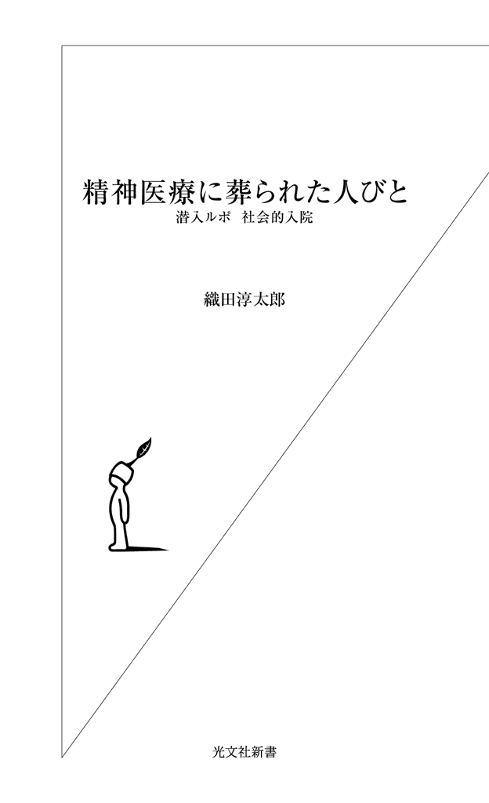

| 精神医療に葬られた人びと～潜入ルポ 社会的入院～ (光文社新書) | |
| 織田 淳太郎 | |
| 光文社 (2011) | |

プロローグ
福井の災害派遣医療チームを率いた福井県立病院（当時）の林寛之医師は、目の前の陰惨な光景に思わず息を呑んだという。
搬送先の駐車場に大型バスで運び込まれた三十五人の高齢者たち。マットレスと毛布に包まれた老人が座席に溢れていた。毛布は排泄物で汚れ、通路にも何人かが横たわっている。二人がすでに死亡しているのも一目で分かった。
その様子を伝える共同通信社の記事は、ひどく生々しい。
〈「先生、座席３番の人は意識不明です」「座席15番は死後硬直が始まってます」。看護師の切迫した声が車内に響く。脈を測りながら呼びかけたが、応えたのは４人に１人。ほとんどは脱水症状を起こして意識がない。カルテがないため氏名や既往症も分からず、20人弱の心拍はみるみるうちに弱っていった（略）〉（共同通信、二〇一一年三月二十三日配信）
平成二十年三月、私はひょんなことから、とある地方の精神科病院に入院した。そのいきさつは本編で詳しく触れている。
最初は何が起きているのか分からなかった。精神科病院を終の住処とする長期入院者の群れ。なかには四十年以上の入院歴を持つ者もいたが、そのほとんどは入院治療が必要とは思えない、ごく普通の人たちだった。
しかし、彼らとの三週間にわたる共同生活やその後の取材活動のなかで、私は彼ら長期入院者たちの背後で何が進行してきたのかを緩やかに悟るようになる。
それをまとめたものが、本書『精神医療に葬られた人びと――潜入ルポ 社会的入院』。すなわち、夥しい数の「入院治療の必要のない」長期入院者を今日まで生産してきた、国や精神科病院の犯罪性の告発とも言えるノンフィクションである。
もっとも、今日の多くの精神科病院が抱える「暗部」を網羅するのは、一冊の本ではとうてい難しい。枝葉があらゆる方向に伸びるように、精神科病院の閉塞的な体質そのものが、多くの問題を派生させているのだ。
その一つが、精神科病院の老人の取り込み体質。認知症や寝たきりの高齢者を「引き受ける」というより、むしろ「作ってしまう」「重症化させてしまう」側面である。
実は、本編で私はこの問題について触れてはいるものの、それほど突っ込んだ言及はしていない。高齢者の問題を「他人事」として捉えていたこともあるが、私自身が認知症や「寝たきり」とは無縁の療養棟（名目上は開放病棟）に潜伏していたことが、その一番の理由だったかもしれない。
そこは、平和だが、鍵によって密閉された「鳥かご」のような世界だった。地域との繫がりが寸断された、文字通りの無縁社会である。同じ敷地内にある閉鎖の老人病棟に関しては、入院仲間から「ほとんどが寝たきりにされているらしい。あそこに入ったらもう人生おしまいだ」とは聞かされていたが、それが事実であるかどうか、「無縁社会」に押し込まれた私に確認できるはずもなかった。
しかし、この三月の東日本大震災に絡む福島原発事故で、精神科病院における老人病棟の実態の一部が、奇しくも世にさらけ出されることになる。
多くの高齢者が死亡、院内の複数の遺体放置まで発覚した、一連の「双葉病院問題」がそれだった。
地震と津波、そして原発事故と未曽有の大災害に襲われた福島第一原発の周辺地域。その原発から約四キロの近距離にある双葉病院は、双葉郡大熊町に古くからある精神科病院である。
保有する病床数は約三百五十床。長期入院者と介護が必要な高齢者で大半の病床が埋められており、第一原発の半径十キロ以内の住民に避難指示が出された三月十二日には、二百九人の「動ける」入院者は速やかに退避した。
しかし、約百三十人の高齢者が、院内に取り残される。自衛隊がようやくその救助に向かったのは、十四日から十五日にかけての計三回。一度目の救出時こそ病院には四人の職員がいたが、二度目以降は病院職員が一人も付き添わない状況のなか、自衛隊による必死の救出・搬送が行なわれた。同病院の鈴木市郎院長の主張によれば、付き添わなかったのは「一緒にいた地元警察署幹部に避難を迫られたため」だという。
「（患者の）置き去り」と報道されたこの事実は、搬送途中や搬送後に二十一人が亡くなったことで明るみに出た（最終的には四十人以上もの高齢者が亡くなったという）。カルテなどの医療的な引き継ぎがなく、搬送先で懸命な医療活動を続ける医師たちも「対処のしようがない」と悲鳴を上げた。冒頭のシーンはその惨状の一端を伝えたものである。
多数の死亡者を出したことについて、双葉病院の鈴木院長は弁明した。
「搬送に長時間かけたためで、国や県の責任。自分には責任がない」
しかし、この責任逃れの発言も、やがて効力を失う。それから約半月後の四月七日、ＮＨＫが、双葉病院から四人の遺体が警察によって新たに運び出されていたことを報道した。
その遺体の一つが、同閉鎖病棟に入院していた佐藤久吾さん（享年八十七）だった。
写真の中のその哀しげな目が、ジッとこちらを見つめていた。
水玉模様のパジャマ姿で、ベッドに横たわる老人。大きな酸素マスクが顔の中央を覆い隠している。その顔の下のほうに、首の血管へと繫がる点滴の管が見えた。
「震災の二日前、携帯で撮った写真です」
久吾さんの息子の妻、佐藤浩美さんは言う。
「それまでの爺ちゃんは症状が不安定だと、痰が一杯出たし、息も苦しそうでした。でも、この日は目をパッチリ開けて私のほうをずっと見ていた。話しかけても相変わらず反応はありませんでしたが、呼吸も落ち着いていたんです。それから五日後にまさか亡くなるとは思わなかった」
福島県双葉郡富岡町に住んでいた佐藤久吾さんが、隣町・大熊町の双葉病院に入院したのは、平成二十二年の五月のことである。入ったのはその老人閉鎖病棟だった。
久吾さんの次男で、浩美さんの夫の佐藤和彦さんが、そのいきさつを説明する。
「そもそも父の様子が変わりかけてきたのは、平成十八年の夏前のことでした。呂律がうまく回らなくなったんです。そこで、いわき市の病院でＣＴ検査を受けたところ、脳の血管の一部が詰まっていたのが分かりました。それでも、体力的にはまったく大丈夫だったし、家族との意思の疎通もしっかりとれていた。入院もしませんでした」
久吾さんに認知症的な症状が表れ始めたのは、それから二年後の二十年夏。長年連れ添った妻が、末期の大腸ガンでいわき市の総合病院に入院したことが引き金となっている。
久吾さんの徘徊が始まった。妻の行方を捜そうと、昼と夜の区別なく家の外に出ようとした。入院中の母の面倒も見なければならず、和彦さん夫妻は父の介護に悲鳴を上げた。親族会議の末、夫妻は久吾さんの要介護３の認定を取ると、双葉病院に勤務する知り合いの看護師に相談を持ちかけた。
このとき紹介されたのが、双葉病院が経営するグループホーム「クレール双葉」だった。久吾さんは、平成二十年十二月二十五日、そのクレール双葉に入所した。久吾さんの妻が亡くなる九日前のことである。
和彦さんが続ける。
「双葉病院で一週間の検査入院をしてからクレールに入所しました。ところが、父はアゴをよく外すんです。欠伸をしたり、食事をするだけで簡単に外れ、クレールでもよくアゴが外れてました。元に戻すのは医療行為になるので、そのたびに近くの双葉病院から医者が駆けつけてきたり、本人が双葉病院に連れていかれたりした。で、頻繁に外れるので、『いっそのこと病院に入院させますか？』ということになったわけです。双葉病院と言えば、僕らは子供の頃から一種近寄りがたい感じを抱いていた。
でも、医者からは内科的な治療もやっていると聞かされました。こちらとしては、『え？ 双葉病院って内科もやってるの？』という感じでしたが、『中身は精神科とは違うんですよ』とも言われましたね。それなら少しは安心かなと思ったんです」
最近の傾向として、多くの精神科病院が専門外の内科診療も看板に掲げていることは、一般的にあまり知られていない。しかし、その多くは、相変わらず鍵や規則で管理された、抑圧的な環境に置かれている。
双葉病院もまったく同じだった。「中身は違う」どころか、中身は完全な精神科病院である。
受付を通って閉鎖病棟に向かうと、そこは施錠された鉄扉で隔離されていた。面会時には、老人閉鎖病棟の看護詰め所のスタッフが内側から鍵を開けた。
自由に病室のベッドに行ける一般の病院と違って、ここではたとえ肉親が面会者であっても、基本的に病棟内へと足を踏み入れることはできない。
入院者の面会は詰め所に近い面談室で行なわれた。当初は久吾さんも、肉親が訪れると、看護師の手を借りて面談室に連れてこられた。
「たしか最初の面会のとき、爺ちゃんは自分の足で歩いて面談室にやってきました。その後は車椅子に乗ってやってきたものの、それでも自力で車椅子に乗り移るぐらいのことはできたと思います。言葉は不自由でしたが、家族の言ってることも理解してました。でも、爺ちゃんが衰えていくのは早かった。それこそアッという間に衰弱していった感じです。そのうち動かせる状態じゃなくなって、面会のときは私たちが病棟に入るようになったんです」（浩美さん）
肉親の記憶によると、久吾さんがほぼ寝たきりの状態になったのは、入院から三カ月後。同二十二年の八月頃のことだったという。
以来、肉親は面談室ではなく、病棟内の病室に久吾さんを訪ねるようになった。小奇麗な病棟には静かな音楽が流れていた。
しかし、自力で歩行する高齢入院者は一人として見当たらず、看護師などスタッフの姿がある以外、病棟自体がひっそりとして人影もまばらだった。入院者と言えば、車椅子や移動式ベッドに乗せられた老人が、ホールのテレビに見入っているのを、何度か目にしただけだったという。
「病状に応じてなのか、入院者の病室を頻繁に移動していました。最初の頃、父はたしか六人部屋に入っていましたが、部屋はけっこう広く、それぞれの空間がカーテンで仕切られていました。そのカーテンの隙間から他のご老人が寝たきりになっているのも確認できました。父もそんな寝たきりの一人でした。認知症のケアや治療はほとんど行なわれていなかったはずです。グループホームにいたときは、職員が何かと手を貸してくれたし、食事のときも食堂まで自分の足で歩いていった。しかし、双葉病院では食事のときにベッドを起こすぐらいで、リハビリ的なこともしていないようでした。このまま弱っていくんだろうなということは、入院した時点である程度覚悟していましたが、僕にしてもここまで早く弱るとは思いませんでした。
そのうち、父は肺炎を起こして、微熱が続くようになったんです。それまではゼリー状の病院食を食べていましたが、食欲もなくなってしまった。点滴に頼るようになり、酸素マスクをするようにもなりました」（和彦さん）
久吾さんの病気を「肺ガン」とする正式な診断を主治医から受けたのは、久吾さんの衰弱ぶりがいよいよ顕著になった同年秋のことだった。肺ガンの「疑い」に関しては、入院前にすでに伝えられていたが、医師の助言もあって体力的消耗の激しい検査を回避してきたという。
やがて、久吾さんは看護詰め所に近いＩＣＵ（集中治療室）に入れられた。ただし、和彦さんによると、ＩＣＵというのは名目だけで、高度な医療を施されることは特になかったという。
「ＩＣＵは三つほどありました。ようするに詰め所から近いということで、重篤な患者をそこに入れていたのでしょう。父は点滴と酸素マスクを施されていました。心電図をつけたご老人も寝ていました。意思の疎通？ いつからかは定かでありませんが、父のコミュニケーションと言えば、『あ～』とか『う～』とか声を出すぐらいになっていました。最後のほうは、その声さえも出なくなっていた。父の身長は百七十五センチと高いほうでしたが、体重も亡くなる前は四十三キロを切っていました。ただ、感情は残っていて、涙を流すこともありました。何かを訴えたかったのでしょう」
肉親が老人病棟の久吾さんと最後に会ったのは、平成二十三年三月九日のことだった。面会に訪れたのは、和彦さんの妻・浩美さん。このとき彼女が携帯で撮った写真が、先の久吾さんの姿である。
それから二日後の三月十一日午後二時四十六分、宮城県牡鹿半島沖を震源地とする未曽有の大震災が東日本を襲った。津波の被害はなかったものの、このとき、久吾さんのいる老人閉鎖病棟がどんなパニックに襲われたのかは、もはや想像するしかない。
その日、和彦さんは富岡町の自宅から自家用車を飛ばして双葉病院に向かった。原発三キロ圏内に避難指示が出されたばかりの夜十時すぎのことである。
真っ暗な双葉病院の駐車場に、病院の職員がいた。和彦さんは自分が久吾さんの身内であることを告げ、安否を尋ねた。
「大丈夫です。亡くなった方はいません」
職員の返事だった。
福島原発周辺地域が一気に緊迫したのは、それからだった。
翌十二日の早朝、原発十キロ圏内に避難指示が出された。午後二時頃、双葉病院の「動ける」患者二百九人と職員は無事に退避したものの、それから一時間半後の午後三時三十六分、第一原発１号機で水素爆発が起きた。
同六時二十五分、避難指示が二十キロ圏内に拡大された。和彦さん夫妻が東京の親戚宅へ車で向かったのは、その日の夜のことだった。
十五日にはインターネットやニュースで、双葉病院の入院者すべての避難が完了したという〝誤報〟を知った。このとき、久吾さんがすでに亡くなり、院内に取り残されていたことなど、和彦さん夫妻は夢にも思っていない。
その夜からさっそく久吾さんの所在を捜し始めた。
「親族みんなで電話しまくりました。しかし、入院者が運ばれた病院などにいくら問い合わせても、父の所在は摑めない。双葉病院系列のいわき開成病院でさえ、分からないと言う始末です。さすがに痺れを切らして、十七日の夜に車でいわき開成病院に向かいました。深夜の二時頃に到着して、病院の遺体安置所にも行きましたが、父はいませんでした。福島ではガソリンが手に入らないので、そのときは東京に戻ってくるしかなかった。予備のガソリンは持ち歩いてましたが、東京で給油するしかなかったんです。結局、父を捜すのに、東京と福島を五回ぐらい往復したでしょうか」（和彦さん）
十八日の夜も福島へと車を飛ばした。県の災害対策本部に情報を求めたが、得るものは何もなく、翌十九日には双葉病院の入院者が運び込まれた複数の病院や退避所を回った。
そこで身元不明の遺体を片っ端から確認した。しかし、父親の姿はどこにもなく、苛立ちばかりが募っていった。
「自衛隊にも問い合わせました」
妻の浩美さんも口にする。
「それによると、自衛隊は生存者しか搬送しないということでした。いくら捜しても爺ちゃんは見つからないし、このとき、もしかしたら双葉病院で亡くなっているのかもしれないと思ったんです。
それにしても、双葉病院に自衛隊が救助に来たとき、どうして病院スタッフが『こういう遺体がありますよ』って自衛隊員に言ってくれなかったんでしょうか。一言でも伝えてくれていれば、爺ちゃんもあんなに長く放置されることはなかった。可哀想でなりません」
和彦さんは行く先々で自分の連絡先を書いたメモを残していた。しかし、どこからも情報が入らず、双葉病院の分院である「いわき開成病院」からも、しばらく連絡はなかった。
二十一日、同病院に再び連絡をした。このとき初めて「院内で亡くなっているかもしれない」と言われた。が、病院側も久吾さんの主治医との連絡がつかず、詳細は何も分からなかった。
二十二日、和彦さんは県の災害対策本部に再度赴いた。同本部も死亡者に関する情報公開を病院側に求めていたが、ここでも具体的な回答は得られていなかった。
双葉病院の関係者から初めて連絡が入ったのは、久吾さんの行方を捜し始めて三週間が経過した四月三日のことだった。
「自衛隊が双葉病院に入って、父の遺体と死亡診断書を発見したという連絡でした。近く警察と病院関係者が中に入って、遺体を搬送する予定だと言われました」
六日、久吾さんの遺体が、双葉病院の老人閉鎖病棟から運び出された。しかし、遺体は久吾さんだけではなかった。院内に計四遺体が放置されたままでいたことが、このとき初めて発覚した。
同日、午後五時頃、和彦さんは福島署川俣分庁舎の駐車場に赴いた。変わり果てた父・久吾さんの姿が、そこにあった。落ち窪んだ目は開きっぱなしで、口も開いたままだった。酸素マスクのせいか、鼻も横にひん曲がっていた。
「誰にも看取られずに死んでいったのか」
そう思うと、涙が出てきた。
死亡診断書によると、息を引き取ったのは、三月十四日の午前五時十二分。震災三日後のことである。
しかし、和彦さんの不信感を募らせたのは、「直接死因」の欄にあった「肺癌」の二文字だった。
「素人判断ですが、直接の死因が肺ガンだなんて、納得できませんでした。震災で電気が止まって、もしかしたら酸素吸入ができなかったのかもしれない。あるいは、点滴がなくなって、脱水症状を起こしたのかもしれません。直接の死因としては、むしろそっちの可能性のほうが高いのではないかと思ったんです。その疑問に対して、病院側から納得する説明をしてほしかった」
その場に居合わせた双葉病院の鈴木市郎院長に、和彦さんは「震災から三週間経って連絡手段も復活したのに、なぜここまで連絡できなかったのか」と強く訴えた。
院長は「すみません」と、項垂れるばかりだった。
さらに、死亡診断書に関する疑問もぶつけた。
「担当医ではないので、詳しいことは分かりません」
院長の返事だった。
「病院側はずっと『担当医と連絡が取れない』の一点張りでした。このときも、関係者が主治医に電話を入れましたが、留守電になっていたようです。死亡診断書に関して、院長は『偽造になるので書き直しはできない』とも口にし、この件ではかなりの押し問答がありました。
結局は僕ら肉親のほうが折れたんです。死亡診断書の疑問にケリをつけるためには、それなりの日数を要するでしょう。そうなったら父も可哀想です。遺族としては早く火葬してあげたかった。悔しいけど、こちらが引き下がりました」
その死から二十四日後の四月七日の昼すぎ、久吾さんは川俣町営火葬場でようやく荼毘に付された。
それにしても、搬送途中や搬送後に二十一人の高齢者が死亡、四遺体を院内に放置したまま長く見過ごしてきた双葉病院。原発災害による大混乱の渦中にあったとはいえ、このあまりにも杜撰な医療体質は、いったいどこからくるのか。
前記したように、この背後には、介護が必要な老人を「引き受ける」というより、むしろ「寝たきり老人」を「作ってしまう」、あるいは「認知症化させる」という今日の精神科病院の暗部が、厳然と横たわっている。
肺ガンの疑いはあったものの、入院を機に一気に認知症を進行させ、ついには寝たきり状態に陥った佐藤久吾さんの例は、そのことを如実に物語っているだろう。
この精神科病院の認知症老人の取り込みについては、疑問を呈する良識的な精神科医も少なくない。その一人が、認知症の訪問診療に取り組む「海上寮療養所」（千葉県旭市）の副院長・上野秀樹医師である。
「認知症の方の精神科病棟への入院にはデメリットが多い」と前置きして、上野医師が説明する。
「そもそも認知症とは、脳の神経細胞が死滅・脱落することによって、記憶障害や見当識障害（自分の周囲の状況、時間や今いる場所が分からなくなる）、判断力の低下などのいわゆる中核症状と呼ばれる症状が生じて、社会生活に支障をきたすようになった状態のことを言います。この中核症状に、ご本人がもともと持っている性格や周囲の環境、人間関係などが絡み合うことで、不安や抑うつ、興奮、徘徊、被害妄想などの周辺症状（ＢＰＳＤ）と呼ばれる精神症状や行動障害が現れることがあります。こういう精神症状、行動障害の治療のために精神科医療が必要になることがあるのです。
たとえば、うつ病や統合失調症などのいわゆる内因性精神病の患者さんは、人間関係などの社会的ストレスでその病状が増悪する傾向があります。そのため、病状が悪化したときは、社会的ストレスから離れて精神科病院に入院すること自体に治療的意義があることが多い。
しかし、認知症の方の入院は必ずしも得策ではありません。というのも、精神症状や行動障害が問題となる認知症の方の認知機能障害は、軽度から中程度が多く、もし精神科病院に入院した場合、『精神科病棟に入れられた』ということを理解できることが多いのです。しかも、高齢者ともなると、若い世代と比較して、精神科病院への偏見が強い傾向があります。精神科病院に入院したことで、今度はそのことに反応して、かえって精神症状や行動障害を増悪させてしまうこともあるわけです」
デメリットは、それだけではない。徘徊が問題となる認知症高齢者の入院は、ほとんどが閉鎖病棟に限られている。その非日常的な院内環境で、生活上の自力的な役割を奪われた高齢者は、認知機能障害をさらに進行させ、食事、排泄、移動などのＡＤＬ（日常の生活動作能力）を低下させていく。
上野医師が続ける。
「精神科病院というのは、本来は治療の場であって、生活の場ではありません。病棟では食事など何から何まで上げ膳据え膳で、認知症の人の残存能力を活かすようなケアはなかなかできない。当然、ＡＤＬも徐々に低下していきます。しかも、症状の改善とＡＤＬ低下の時期の見極めが難しく、適切な退院のタイミングを逃すと、入院が長期化する傾向にあります。その長期化が認知症を進行させることもあるわけです。
また、精神科病院では精神保健福祉法により強制力の行使、つまり保護室への隔離や身体拘束の措置が合法的に認められています。現行法上、精神保健指定医一名の判断で行なわれるこの強制力の行使が、濫用される恐れもあるのです。最も多いのは、指示を出した医師自身が気づいていない濫用でしょう。私自身、精神科病棟内で人権侵害が生じたときの権利回復手段はもともと不十分だと感じていますが、そもそも認知症の方はこういった手段を利用することもできません。こうしたことから、私は認知症の方の精神科病院への入院は極力避けるべきだと思っています」
しかし、同じ精神医療現場からのこの真摯な警告が、精神医療界全体にはたしてどこまで浸透しているのか。
なかでも身体拘束や保護室隔離に絡む、精神保健指定医による強制力の濫用。ときにそれが認知症高齢者の重症化や寝たきり化を促進させる一因にもなるのだ。
そこで依然として負の連鎖が続いていることは、以下の数字からも明らかだろう。
平成二十年現在、認知症で精神科病院に入院中の患者（主に高齢者）は、五万二千人に及ぶ。これは、その九年前の一・四倍の数字に上るという。
一方、厚生労働省が二十二年に行なった、精神病床における認知症入院患者に関する調査によると、その平均在院日数は九百四十四・三日。それに対して、精神科病院における一般入院者の平均在院日数は、約三百十日である。社会問題となっている精神科病院の長期入院化と比べても、認知症高齢者の長期入院傾向が際立っているのは一目瞭然だろう。この長期入院傾向が彼らの認知機能と体力をさらに奪い取り、寝たきり状態へと追いやっていく。
では、精神疾患の治療の場であるはずの精神科病院は、なぜ認知症老人の「収容」へと走り出してしまったのか。
これに密接に関わってくるのが、本書の主要テーマである「社会的入院」の問題である。社会的入院とは「本来の治療目的で病院に入院しているのではなく、生活条件が整っていないため長期入院を続けている状態、またはその状態の患者」を意味し、現在日本には、世界でも類のない十五万人から二十万人の社会的入院者が存在すると言われている（総入院者数は三十一万人強）。
この夥しい数の社会的入院者が、いかにして「生産」されてきたのかについては、国や民間精神科病院の責任を追及しつつ、本編で詳しく説明している。
しかし、精神科病院の認知症老人取り込みの背景を説明するために、ここでも簡単に触れておく必要があるだろう。
日本に精神科病院が誕生したのは、明治期に入ってからである。精神障害者を「危険存在」と見なした国家による隔離収容政策に他ならなかった。
大正期に入ると、精神科病院の設立を公費で補助することを定めた「精神病院法」が施行された。これによって、入院の必要のない者までが収容の憂き目に遭っていく。その劣悪な院内環境は東京府立松沢病院（現・都立松沢病院）の医師だった菅修が「精神病院の中で病者は慢性的に殺されていた」と述べたことでも窺い知ることができるだろう。
昭和三十九年三月、米国大使館の本館裏ロビー前で、エドウィン・ライシャワー大使が、心神喪失状態の十九歳の若者に右太股を刺された。世に言う「ライシャワー事件」である。
この事件によって、精神障害者に対する国の強制収容政策は一気に加速した。財政難を理由に公立精神科病院の建設が遅々として進まないなか、国の低金利融資などの優遇措置を受けた民間の精神科病院が、雨後の筍のように全国各地に乱立した。
そして、国のこの民間資本への依存が、日本の精神医療をさらに救い難いものにしていく。
その大きな問題が、先に説明した「社会的入院」。つまり、夥しい数の「入院治療の必要のない」長期入院者を、今日までの長い歴史のなかで「生産」してきたことである。
この背景として、精神障害者に対する世間の根強い偏見をあげる声もあるが、偏見の強さは海外諸国でも日本とさほどの違いはない。むしろ、社会支援の不備に加え、長期入院者を「固定資産」としてきた民間精神科病院の経営問題が密接に絡んでいる。
それがなぜ、認知症老人の取り込みへと繫がっていくのか。
高齢者福祉問題のパイオニアで、精神医療にも詳しいジャーナリストの大熊由紀子・国際医療福祉大学大学院教授は言う。
「日本の精神科病院のベッド数は、他の国々と比べてずば抜けて多いのです。全世界の精神科病床数は約二百万床と言われていますが、日本はそのなかの約三十五万床を占めています。日本でだけ精神病が流行しているはずもありませんから、このことは国際的な批判の的になっています。
そこに、高齢化した長期入院者が亡くなってベッドが空いてしまうという、病院経営者にとって新たな問題が出てきました。長期入院者を抱え込むことで経営を維持してきた民間病院にとっては死活問題です。そうしたところに、認知症の問題が絡んできました。つまり、認知症のご老人を持つ家族が疲れ果てているという現状です。認知症の方たちの多くは、いい環境とケアがあれば住みなれた家やグループホームなどで暮らせるのですが、そのための政策が日本では遅れてしまった。それが、精神科病院としては、ある意味で渡りに船でした。考え出されたのが、認知症のご老人を空いたベッドに受け入れ、経営を維持するという方針だったのです」
大熊教授は朝日新聞の論説委員時代から、北欧の充実した老人福祉を徹底取材。この問題にいち早く取り組んできた一人である。二十九刷のロングセラーとなった『「寝たきり老人」のいる国 いない国』（ぶどう社）を一九九〇年に出版、その後も『物語 介護保険（上・下）』（岩波書店）、『恋するようにボランティアを』（ぶどう社）を出版するなど、認知症対策を広く発信してきた。
「日本以外の先進国には『寝たきり老人』という日常語や概念がないのです。身の周りのことを自分でできなくなった一人暮らしのご老人のところに、ホームヘルパーが毎朝訪ねてきてベッドから起こし、お洒落を手伝い、食事や外出をサポートします。ベッドに寝たままのご老人はほとんどいません。一九七二年に初めて北欧を訪ねたとき、おむつをつけた認知症の老婦人がエレガントに着飾り、車椅子で外出を楽しんでいるのにカルチャーショックを受けました。朝日新聞で『寝たきり老人ゼロ作戦』のキャンペーンをしたこともあって介護保険制度ができたのですが、日本の精神科病院はまるで治外法権です。
認知症の方にとって何よりも大切なことは、誇りや役割を決して奪わないこと。そのために北欧では、それぞれの方が何を誇りとし、どういう人生を送ってきたかをケアスタッフが調べ、接し方を工夫していました。日本でもそのような挑戦が始まっています」
その「挑戦」は、主に福祉の領域で繰り広げられている。ただし、ほんの少数ながら医療者による「挑戦」が存在することも、明記しておかなければならないだろう。
前出・海上寮療養所の上野秀樹副院長が展開する、認知症高齢者への訪問診療サービスも、その一つである。同医師が認知症診療に本腰を入れるきっかけになったのは、都立松沢病院に勤務していたときの経験からだという。
「平成十六年から三年間、松沢病院の認知症精神科専門病棟を担当していました。民間病院で断られてしまうようなケースを中心に精神症状や行動障害の激しい方を入院加療してきましたが、簡単な薬物療法で劇的に良くなる方もいて、約七割が比較的良好に精神症状がコントロールされました。約一割は自宅への退院、六割近くが施設への退院が可能になり、私自身、認知症の精神科病院への入院は適切だと思っていたのです。
ところが、いろいろ経験を積むうちに、精神科医師の訪問診療があったらいいのではないかと考えるようになりました。松沢病院時代には精神科のない医療機関から転院を引き受けることもあったのですが、転院されてから比較的単純な薬物療法のみで劇的に精神症状が改善するケースが数多くありました。これならば、私が往診できれば転院させる必要はなかったのではないかと思ったんです。
また、東京都には高齢者精神医療相談班という制度があります。これは、都内三カ所にある精神保健福祉センターに設置された精神科医師と保健師のチームです。認知症によると思われる精神症状や問題行動で困っている場合に、地域の保健師を通じた依頼で、高齢者精神医療相談班が訪問し、診断を行ない、今後の処遇を相談するのです。
高齢者精神医療相談班が扱うケースは、精神症状・行動障害が激しく、かつ、通常の外来受診が不可能なケースでした。こうしたケースを入院加療するなかで、認知症高齢者、特に精神科への入院が必要となるほどに精神症状・行動障害が問題になる方は医者嫌い、病院嫌いが多く、通常の外来受診が困難であるのが多いことが分かりました。こういったケースでも精神科医師が訪問診療するシステムがあれば、精神科医療を提供することが可能になるのです」
平成二十一年十一月、上野医師は海上寮療養所の副院長として、「採算の合わない」認知症高齢者の訪問診療にあえて踏み切った。出向く先は個人宅や精神科のない医療機関、特別養護老人施設、認知症対応のグループホーム、介護付き有料老人施設などである。
個人宅では「医者嫌い」「病院嫌い」の認知症高齢者が多いため、保健所の職員や市から派遣された調査員などになりすまし、さりげない診察に当たった。上野医師によると、認知症の当人だけでなく、その家族とのコミュニケーションを密にするのが、絶対的に必要なことだという。
「たとえば、認知症の方に物忘れがひどいことをなじったりします。それを続けていくと、精神症状や行動障害が出てきたりする。というのも、認知症の方というのは、なぜ自分が叱られたのか、そのプロセス自体がスッポリ抜け落ち、『この人は怖い』という負の感情だけ残るのが特徴だからです。そうなると、介護の手を差し伸べようとしても、その負の感情に反応して反抗的な態度をとったりする。家を飛び出して往来を徘徊するのも、そうしたことが理由の一つかもしれません。
ケアや対応の仕方が何よりも重要です。役割や尊厳も奪ってはいけません。認知機能障害が重度だったあるご老人は、環境の変化で激しい精神症状が出るようになり、家族も大変な思いをされていました。しかし、認知症対応のグループホームに入所して、見違えるほど改善しました。役割を積極的にこなしてもらうことで、ご本人の中に生き甲斐が生まれたからです。たとえ精神科薬が必要であったとしても、統合失調症の人に比べて、ほんの微量で劇的に改善することが多いのです」
上野医師の認知症対応は二十四時間体制で行なわれている。薬物の副作用などにいち早く対応するため、介護者に自らの携帯電話の番号を伝えているが、そのことも治療的な相乗効果を生んでいるという。
つまり、一日二十四時間専門家に相談できることで、まず介護者の安心感が生まれてくる。その安心感が介護を通じて被介護者の精神状態を落ち着かせる。介護者からの問い合わせは、多いときでも一日十件程度。夜間や休日の電話はほとんどないという。
取り組みの効果は、数字でも如実に現れた。上野医師が担当する高齢者外来の毎月の新患者数は、三十人から四十人程度。累積の高齢患者数は約四百人に上る（平成二十三年五月現在）。上野医師によると、都立松沢病院時代であれば入院させていたようなケースでも、その大半が入院を回避できたという。累積四百人の患者のなかで、実際に精神科病院に入院したのは、わずか五例しかない。
「つまり、適切な精神医療を提供できれば、精神科病棟への入院を減らすことができるのです。認知症の基本症状は中核症状です。現在のところ、この中核症状に対する医学的な治療手段は乏しいので、認知症の方を支えるのは、やはり『生活モデル』が基本とならなければならない。そのなかで、精神症状や行動障害が合併したり、身体疾患の合併が見られたときは、医療モデルを適用し、その問題を解決すればいいのです。
このように私自身、認知症の方に関しては、あくまでも生活モデルを基盤とし、必要時に精神科医療を利用していただく形がいいと考えています。ようするに、精神科医療は前面に出るべきではない。黒子的な立場がベストということです。
介護保険が施行されて十年以上が経過し、高齢の認知症の方に対してはケアマネジメントシステムが、有効に機能しています。当院では、ケアマネの方に認知症の精神科医療を知っていただき、必要時に利用していただきたいと考え、ケアマネや介護職員向けに認知症精神科医療に関する研修会を行なっています。こうした取り組みが、高齢者の寝たきり状態の予防にも繫がるのです」
前出の大熊由紀子教授。実は、同教授の九十一歳になる一人暮らしの母親も、「寝たきり」のピンチに襲われかけたことがあるという。平成二十二年七月、悪性リンパ腫で入院。主治医からは「この夏は越せないと覚悟してください」と、言われた。寝たきりの病院生活のなかで認知症も進行した。
入院二カ月後、大熊教授は母親を思い切って退院させると、北欧式ケアスタイルへの転換を図った。
「ケアマネージャーの助けで一人暮らしの母の家を模様替えし、ベッドを電動式に変え、福祉用具をレンタルし、要介護４の母を元の暮らしに戻したんです。毎朝、母を訪ねて、その日の楽しい過ごし方を見つけ、仕事に出ているときはヘルパーさんにお願いしました。母の誇りを大切にし、楽しい小さなイベントを考えました。車椅子ながら着飾って私や孫と食事や音楽会に行くようにもしました。そのうち母は伝い歩きで台所でお皿を洗ったり、短歌を作ったりするようにもなりました。介護保険制度の報酬の範囲でできたことです。
認知症の人には、馴染みの環境での日々の暮らしのサポートが、何よりも大切だということを実感しました。『夏は越せない』と言われて一年近くも経ったいま、母は驚くほど生き生きとしています」
その大熊教授が母親の二枚の写真を見せてくれた。一枚は病院のベッドでの枯れ木のような寝たきり姿、もう一枚は退院後ドレス姿でリサイタルに赴いたときのものである。
この二枚の写真を手に取ったとき、私はそれがまったくの別人だと、しばらく思い込んでいた。後者の写真の笑顔が、それほど輝いて見えたからである。
しかし、病院の狭いベッドを生きる拠り所とする、世の老人たちの哀れな姿はどうか。そこには、私たちの誰もが陥る可能性のある、人生の悲痛な末路が横たわっている。
大熊教授は言う。
「一九七九年に経済財政審議会が日本型福祉政策を打ち出しました。これは完全な事実誤認にもとづく誤った政策でした。北欧の真似をすると経済が傾く、福祉が進むと家族の情愛が薄れるという根拠のない前提のもとでスタートしてしまいました。日本は三世代、四世代の同居が多いのだからご老人は家族、つまり『嫁』と呼ばれている女性が無給で面倒を見ればよいと、国が家族に責任を丸投げしてしまった。けれど、介護期間が長くなり、家族も年をとり、家族だけでは支え切れない。そこに老人病院や精神科病院が乗り出してきました。その結果、医療費が増大していきました。
これに対して、北欧の人々は自分たちの老後の安心のために、納得して税金を払っています。日本より経済は好調ですし、財政も黒字で、経済成長率も出生率も高い。福祉に力を入れることで、逆に国が潤いました。『日本型福祉政策』が失敗だったのは明らかです。それが『日本型悲劇』を生んでしまい、福祉を必要とする人たちとその家族を長い間苦しめてきたのです」
日本型福祉政策がもたらしたその「日本型悲劇」の一つが、精神科病院における社会的入院の問題であり、認知症問題であることは言うまでもない。
多数の「寝たきり老人」が死亡した、先の双葉病院問題では、それを報道したマスメディアの多くが、医療関係者を中心とする執拗な抗議に晒された。標的となったのは、「（患者の）置き去り」という表現だった。
しかし、問題の根は「置き去り」か否かにあるのではない。
「寝たきりに〝なる〟のではない。日本で『寝たきり老人』と呼ばれている方は、『寝かせきり』にされ、廃用症候群にされてしまった犠牲者。〝作られた〟寝たきりなのです」（大熊教授）
医療従事者が保身に走ることなく、この事実に真摯な目を向けない限り、日本の精神医療の腐敗はもはや加速するだけである。
なお、ルポとして社会的入院問題にメスを入れた本編では、「精神に障害を持つ人」を、時代背景や文意に応じて「精神障害者」「精神病者」と使い分けた。同じような理由で、「看護師」を「看護婦」「看護人」、「アルコール依存症者」を「アル中」、「路上生活者」を「浮浪者」、「売春する女性」を「売笑婦」などと記した箇所もある。
また、本来なら「精神科病院」「精神科病棟」としなければならないところを、あえて「精神病院」「精神病棟」と記した。入院者に対する管理・支配体質が、昔もいまも基本的に変わっていないことがその理由である。
一方、本編の主役的登場人物である「一郎さん」は仮名とした。一度も退院の機会を与えられることなく、同じ精神科病院で四十年近くも暮らしてきた彼に、病棟内での不利益が及ばないようにするための配慮である。
目 次
１章 四十年の病院暮らし
１
そこは、静かな〝病〟の吹き溜まりだった。
小奇麗なホールのあちらこちらに、男たちの孤独な後ろ姿があった。テーブルを嘗めるように、折り紙に夢中になっている中年男性がいた。テレビの前で数人の男たちが機械のように突っ立ち、バラエティらしき番組を無表情に見上げている。
椅子にだらしなく腰掛けたまま虚ろな目を床に投げかける者、その近くには両腕を投げ出してテーブルに顔を埋める男の姿もあった。
ホールの右隅にあるガラス張りの喫煙室に、柔らかな春の陽が差し込んでいた。八畳程度のその密室の中で、男たちが紫煙をくゆらせながら窓外の新緑をぼんやりと見つめている。
「こちらです。どうぞ」
若い男性看護師が私のバッグを手にしていた。促されるように看護詰め所を出て、病棟に足を踏み入れた。
ホールの左側に光沢のある廊下が伸びていた。その右手に病室が続いている。私が案内されたのは、手前から三番目の四人部屋だった。ちょうど真向かいにトイレがあった。
部屋に入ると、すぐ右手に私のベッドが用意されていた。病室は背の低いタンスで四つに区切られている。一人の居住空間は、三畳程度にすぎない。
窓側のベッドに目を向けた。二人の初老男性が互いの足の裏を見せ合うように横たわっていた。看護師が二人に私を紹介し、「どうぞ、よろしく」と私は軽く頭を下げた。
病室の簡単な説明を終えると、ほどなく看護師は出ていった。それを見届けるように、左のベッドの男性が丸顔をこちらに向けた。
「しばらく入ってるのかい？」
返答に窮した。「しばらく」という言葉の尺度が分からなかった。
「たぶんそれほど長くは......」
曖昧に言葉を返すと、右側の男性がおそろしく甲高い声で私の言葉を引き取った。
「そう心配しなくても、そのうち慣れてくるさな。おれもなあ、最初の頃はこんなところで寂しく暮らさなければならないと思ったらゾッとしたもんだよ。ところが、人間というのは不思議な生き物だよなあ。いつのまにか、ここの生活が当たり前になっちまった」
丸顔はＳさん、甲高い声はＫさん。ともに六十歳を超えている。後で知ったことだが、二人はもともとアルコール依存症者で、「二十年ぐらい」もこの病棟で暮らしているという。
この「二十年ぐらい」が、どれほど長い歳月なのか。私がもう一人の「住人」の自己紹介を受けなければ、「二十年ぐらい」という歳月も、おそらく未来永劫に等しいほどの絶望的な印象を私に与えていたかもしれない。
私が病室に入ったとき、その「住人」はいなかった。が、まもなくして戻ってきた。
「おれ、一郎って言うんだ」
彼は方言混じりの多弁で話し始めた。
「〝一〟の〝郎〟で一郎。単純で分かりやすい名前なんだよな。おれ、頭も単純だからなあ。けど、川柳はいつも入選してるよ。地元の新聞社に毎週投稿してるんだ。ほれ、見てみる？ 最近入選したやつ。『リサイクル〝もったいない〟に助けられ』。おれ、頭悪いけど、こういうのはすぐ考えられるんだな。
あっ、今日お風呂入れるな。あんた、洗面器ある？ ああ、忘れたの？ だったら、おれの一つ貸すよ。二つ持ってっから。よかったら、ポータブルのテレビも貸すよ。これも二つ持ってっから。おれ、『親切だなあ』ってよく言われるんだなあ。『一郎さんは面倒見が良い』って、昔からみんなに言われてんだ。だから、なんか分からないことがあったら、いつでもおれに聞いてきていいよ。なんでも知ってっから。
なんたって、おれ、ずいぶん長いこと入院してっからなあ。十六歳で発病して、病院転々として、脱走したこともあった。この病院？ 二十二歳のときからずっといっから、もう三十五年も経っちゃった。全部合わせたら四十年ぐらい病院で暮らしてっかな」
四十年の病院暮らし？
三十五年の継続入院だって――？
私は頭がクラクラするのを感じた。
＊誤診
平成十九年、その年の後半、私の体調は優れぬままだった。肉体に明らかな異常が見え始めたのは、暮れも押しせまった頃である。
頻脈と指先の小さな震え、そして息苦しさ。膝関節には力が入らず、手摺りなしでは階段も下りられなくなった。体力も衰え横になることが多かったが、食欲は増進した。にもかかわらず、六十三キロあった体重は、五十六キロまで激減した。
私にはうつ病の既往歴がある。平成十年の十二月から一カ月の退院を挟んで、計四カ月も入院していた。しかし、今回の症状は、倦怠感と無力感に襲われたその頃の症状とは、どうも質が違うような気がした。
思考はむしろ亢進していた。あれこれと取りとめのないことを考えた。無用なことばかりに気が向き、理解できそうもない難解な本を買い漁った。果ては、購入して一年にも満たない自家用車を他の中古車に買い替えた。
イライラ感がつきまとっていた。寝付きが悪く、かといって朝は起きられない。それでも、日中は急き立てられるように行動し、最後は何も得るものなく、ぐったりと疲れだけを溜める。
精神的な初期症状は、「うつ」というより「躁」だった。ただ、躁状態の結果として心身がヘトヘトになる。
私は近所の精神科クリニックを訪ねた。
この時点で、私は他の病気の可能性をまったく考えていなかった。医師にも私の既往症にうつがあることへの先入観が働いたのかもしれない。
診断は「うつ病」だった。医師はそのうつ感が、頻脈や指の震えなどの肉体的症状を引き起こしているのではないか、と私に告げた。
私は処方された抗うつ薬と抗不安薬、さらに睡眠薬に頼った。約八年ぶりの服薬だったが、症状が緩和されることはなかった。
そこで、次に心療内科専門の漢方医を訪ねた。診断は最初の医師と同じくうつ病だった。私は別種の抗うつ薬と精神安定作用のある二種類の漢方薬を処方された。しかし、ここでも薬物は何の効力も発揮せず、今度は地方に住む友人の精神科医の紹介で、別の精神科クリニックを受診した。
このときの精神科医とのやりとりは、奇妙なものだった。医師は私の訴えをパソコンに早打ちしながら、こちらの顔も見ずに「フムフム」と頷くだけだった。
頷くだけで何も言わないので、私のほうから聞いた。
「やはりうつですか？」
「そうでしょう」
「抗うつ薬が必要ですか？」
「必要ですね」
「それじゃお願いがあります。ＳＳＲＩ以外の抗うつ薬を処方してください」
ＳＳＲＩとは平成十一年に認可された抗うつ薬である。「副作用が少ないこと」が〝売り〟で、現在最も多く処方されている抗うつ薬だが、一部では衝動性の副作用が問題視されてもいる。
「なぜ？」
医師がチラッと私に顔を向けた。
「昔、パニックになったことがあるんです。当時服用していたＳＳＲＩの副作用としか考えられないので」
「そうですか」
医師は頷いた。それから「しばらくこれで様子を見ましょう」と、薬物に関するなんの説明もなく処方箋を差し出してきた。
診察室を出ようとした。医師が顔を向け「ちょっと」と、私を引き留めた。
「会計はここです」
受付係がいるにもかかわらず、医師自らがレジを叩き、診療費請求の業務に当たる。いや、それより何より、驚いたことがあった。
処方箋の抗うつ薬。そこにあったのはあろうことか、私があれほど使わないでほしいと懇願した、「ジェイゾロフト」という薬名の新種のＳＳＲＩだったのである。
医師への不信感を拭い去ることができず、結局、私はこのジェイゾロフトのみならず、処方されたすべての薬物の服用をやめてしまった。こうして私は原因不明の肉体異常を抱えたまま、暗中模索の日々を過ごすしかなくなった。
その過程で、素人療法も試みた。力の入らない膝でジョギングを敢行したこともあれば、地方の湯治場で温泉療法に時間を費やしたこともある。すると、頻脈がますますひどくなり、寝床から出られないほど衰弱した。
息苦しさと焦燥感に駆られ、私は再び友人の精神科医にＳＯＳを送った。友人は入院治療を私に勧め、とある地方の精神病院を紹介すると言った。
精神病院にはやや抵抗があったが、この苦しさから解放されるのならばと、私は友人にその病院への入院手続きを頼んだ。
同じ頃、妻の勧めもあって、自宅近くの総合病院の内科を受診した。その病院での血液検査の結果、抗うつ薬や精神安定剤が症状の改善に何の役にも立たなかった理由が判明した。私の病はバセドウ病だった。症状が出てから三カ月後にようやく確定された診断である。
バセドウ病とは脳下垂体の異常によって、甲状腺が刺激され、甲状腺ホルモンが過剰に分泌される甲状腺機能障害の一つである。女性の罹患率が高く、歌手の絢香や女優の夏目雅子（故人）などもこの病にかかっている。頻脈、手の震え、膝の脱力、体重の著しい減少、息切れ、疲れやすさなどが主な肉体的症状で、感情の不安定、イライラ感、倦怠感、睡眠障害、知的機能障害などの心理的な症状も出る。病状が重くなると、眼球の突出が見られることもあるという。
私に眼球の突出はなかった。しかし、長く苦しめられてきた症状は、バセドウ病のそれとほとんど一致していた。にもかかわらず、私を診察した三人の精神科医は、みんながみんな他の病気の可能性を模索することなく、血液検査もせずに私を「うつ病」という精神疾患の枠に押し込めている。
いずれにしても、このバセドウ病の発覚で、私には精神病院に入る理由がなくなった。ただ、睡眠障害や心身の倦怠感、イライラ感などの精神症状が続いていたことに変わりはない。
私は「休息のつもりで」という友人のアドバイスに従い、紹介された精神病院に予定通り入院することにした。
平成二十年三月十一日、私は妻に付き添ってもらうと、ＪＲ線に揺られて、息絶え絶えにＧ病院へと向かった。下車駅から歩いて約二十分。住宅街から離れた雑木林の一角に、その病院がひっそりと建っていた。
ここで目の当たりにした光景が、冒頭のシーンである。すなわち、病棟を終の住処とする長期入院者たちの孤独な背中だった。
＊「開放病棟」という名の「閉鎖病棟」
私が入院したのは、「長期療養型」の病棟である。通称・慢性期病棟と呼ばれる。病院敷地内の病棟は「Ｅ棟」と「Ｗ棟」に分けられており、Ｅ棟が閉鎖病棟、Ｗ棟が療養型の開放病棟だった。
Ｗ棟は一階が老人病棟、二階が女子病棟、三階が男子病棟。Ｅ棟は一階が老人病棟、二階が男子病棟、三階が男女混合病棟で、そのいずれも症状の重い患者が入院している。なかでもＥ棟の老人病棟は、認知症の寝たきり老人でほとんどのベッドが埋められているという。
私が入ったのはＷ棟の三階。つまり、男子開放病棟だった。
「開放」と称するだけに、私が入った病棟には重篤な患者もいなければ、急性の治療を要する者もいなかった。ほとんどの入院者が症状の安定した、いわゆる寛解状態にあった。Ｗ棟の男子病棟の入院者は約六十人。Ｇ病院の入院者総数の六分の一を占めていた。
しかし、「開放」とは言っても、その病棟の実態は「閉鎖」も同然だった。そこは二十四時間体制で施錠されており、入院者の自由な外出は許されていなかった。保護者である肉親が同伴しない限り、散歩や外泊も許されない。
外出と言えば、週に一度、二時間程度の集団散歩があった。ただし、看護師の監視付きである。ＯＴ（生活作業訓練療法）参加者にも〝療法〟の一環として散歩が許されたが、これも看護師の監視付きだった。私はこの集団散歩とＯＴに一度も参加したことがない。
病棟への面会者の差し入れは、原則禁止されていた。買い物は週に一度できる。しかし、買い物と言っても院外に出るわけではなく、利用できるのは病棟一階の売店のみ。入院者の小遣いは会計室で管理され、買い物日には現金代わりのプリペイドカードが入院者個々に支給される。この買い出しにしても、看護師の引率のもと、入院者はゾロゾロと集団行動を強いられた。
つまり、私の入ったＷ棟は「開放」の名を借りた完全な「閉鎖病棟」だった。このおそろしく管理的な看護システムを、私は入院する日までまったく知らされていない。
２
「昔は一人で散歩ぐらいできたんだ」
多弁の一郎さんは言った。
「けど、外で悪さする患者がいたんだなあ。住民からも苦情があった。それもあって、病院が患者を外に出さなくしたんだな。悪さ？ ごみ箱に吸いかけの煙草を放り込んでボヤ騒ぎ起こしたり、買いもしないのに食料品店でずっと食い物見つめているとか。けど、そういう悪さすっから、外出はみんなダメだということになったんだな。暴力？ 子供や女性をからかったりはあったけど、誰も暴力なんて振るわないよ。
けど、長く入院していて病院から信頼されてる患者は、月に一回ぐらい看護師の付き添いなしで外に買い物に行けるんだ。一人で？ 一人では無理だな。三、四人のグループを組まなきゃ、外には出れない。おれなんて病院に信用されてっから、昔は一人で町の床屋に行ったことあるよ。床屋からも『一郎さんなら大丈夫』と安心されたなあ。けど、外出ではあまりお金持たせてくれないんだ。以前、お金たくさん持って逃げたやついたから、みんな禁止されたんだな。床屋の料金は、後で床屋が病院に請求することになっている。入院者の預かり金から病院が支払うんだな。
いまに比べたら、昔は自由だったなあ。院内で温泉旅行に行ったこともあったな。旅行先でワンコソバも食ったよ。オヤジが面会に来てくれて、そのまま二人で駅前の旅館に泊まったこともあったな。いま？ そりゃいまだって、それなりに楽しいことあるよ。病棟の行事だって、花見とかバーベキューとか盆踊りとか年に一回やってるよ。そんなときは、外に出れるんだな」
病棟ではライター、剃刀、ハサミ、携帯電話などの所持が禁止されていた。「危険なもの」は、すべて看護詰め所で預かる。喫煙者の煙草は一日一箱までと決められていた。毎朝詰め所から一箱ずつ支給される。喫煙タイムは朝の五時から消灯時間の午後十時まで。
ここの喫煙室は入院者の様子を観察するのに絶好の場所だった。ある者は決まって灰皿代わりのバケツの前にしゃがみ込み、バケツの底を嘗めるように見つめていた。ある者は激しく咳き込みながら、それでも必死になってセカセカと煙を吸い込む。ある者は薬物の影響からか、ロボットみたいなカクカクした動きで、喫煙室へとなだれ込むように入ってきた。また、あるキツネ目の入院者は、ヘッドホンを首にぶら下げ、必ず両手で大きなバッグを二つ抱えながら入ってくる。
「ああ、あいつな」
と、同室のＫさんが教えてくれた。
「あのバッグの中にはお菓子やらラジオやらが入ってるんだ。風呂入るにもわざわざ荷物担いでいくやつだ。あいつは個室にいるけど、部屋を空けたら看護師や患者にかっぱらわれると思い込んでいるんだよ。誰も信用できなくてロッカーの鍵かけてばっかりいるから、そのうち鍵がバカになって壊れちまったんだ」
喫煙室での会話はあまりない。それでも、何人かが私に話しかけてきた。一人は「入院歴二十一年」になるという六十一歳の元アルコール依存症者。出身地はどこか、どこに住んでいるのか、病気は何か、主治医には何と言われたか......などと、彼は私を質問攻めにした。紳士的な口調だったので私もそれほど苦にせず答えていたが、Ｋさんからはこう釘を刺された。
「あいつに近寄ったらダメだ。そのうち子分みたいにされて、いろいろたかられるぞ。連絡先なんぞ教えちゃ、もうおしまいだ。晴れて退院した日にゃ、あれ送れ、これ送れって、そりゃもうしつこくされるのがオチだからな」
その助言に従って、以来私は「入院歴二十一年」氏との接触を極力避けるようにした。そのせいか、彼のほうでも無視するかのように、私にほとんど話しかけてこなくなった。
喫煙室では東京・Ｈ市の精神病院に入院していたという四十歳代の統合失調症者にも話しかけられた。彼は「入院歴二十一年」氏とは対照的なタイプで、言葉少なに自分の過去を淡々と振り返るだけだった。
「妻と子供は東京のＴ市に住んでいます。Ｈ市の病院に入ったときに離婚しました。その頃は離婚した妻も面会に来てくれたんです。子供のために退院後は八年間一緒に暮らしてました。でも、ここに入ってからは一度も面会には来てくれません。子供とはもう何年も会ってないです。保護者？ Ｓ市に住む母です。そろそろ八十歳になりますが、ただ、いまは糖尿病で入院中なんです。だから、母が退院したら、僕も退院して母子二人で暮らすつもりでいます。母が退院できなかったら？ さあ、どうなるのか......。もしかしたら、ずっとここにいることになるかもしれませんが」
前記したように、私が入った男子病棟は建物の三階にある。二階は女子病棟だが、ともに厳重な施錠がされており、入院中の男女が自由に行き来する空間はどこにもなかった。午前中の作業療法のわずかな時間以外に、男女の日々の接点はない。
一郎さんによると、「平成十三年ぐらい」に療養棟ができる以前は、外来のある現在の本棟内に開放病棟が設けられていた。当時は男女混合の病棟だったが、病棟内での恋愛や妊娠騒動などがあったため、「療養棟」では男女別々の生活空間に分けられたのだという。
そのせいかどうか分からないが、秘密裏に男同士の〝カップル〟が出現する。人前で平然と手を繫ぎ、肩寄せ合うカップルもいた。ともに四十歳前後か。一方はいつもニヤけた薄笑いを浮かべる髭面男で、もう一方は表情のない無口な男だった。この無口なほうは、よく廊下を徘徊しては、ときに廊下の真中に硬直したように突っ立っていた。
しかし当初の私は、彼らがホモセクシュアルな関係にあるとは想像もしていなかった。肩寄せ合うのも純粋なスキンシップだと思い込んでいたが、あるとき無口なほうが看護詰め所に向かって、こんな声を張り上げているのを耳にした。
「僕は○○君が大好きです！」
私が啞然としていると、ある中年入院者が小バカにしたように耳打ちしてきた。
「あの二人な、できてるんだ。真っ昼間から二人してトイレの大便のほうに入ってるよ。お互いのチンポ嘗め合ってるんだ」
トイレは内側から施錠できるが、背伸びをすると、ドアの上から中が丸見えになる構造になっていた。いつなんどき第三者の目に晒されるか分からないこの狭い密室が、二人の情欲の巣になっているとは――。
私は全身に鳥肌が立つのを感じた。
もっとも、一部のカップルが〝病棟内恋愛〟を楽しんでいたとしても、入院者たちの大部分が孤独と諦観に染まっていたことに変わりはない。病棟のホールでは週に一度、カラオケ大会とプラスチック製のピンとソフトボールを使ったボーリング大会が開かれていた。私はそのいずれにも参加する気になれなかったが、他の入院者もそれらを心から楽しんでいるとは、とうてい思えなかった。
入院者の大半がこれといってやることもなく、一日を浮き雲のごとく過ごしていた。その閑寂とした空気のなかで、一郎さんは「唯一の生き甲斐」とする川柳の思案にふけり、ある者は折り紙や入院仲間との囲碁に没頭して、流れゆく無為な時間を静かに埋めていく。
午後四時になると、なぜかホールでラジオ体操が行なわれた。入院者の多くがラジオ体操に参加したが、誰もがそれが「義務」であるかのように、表情もなく機械的に体を動かすだけだった。
彼らの目が俄に輝くのは、朝、昼、夕の食事時である。みんな、食べるのがとにかく早い。アッという間にたいらげてしまう。
特に目を引いたのが、私の斜め向かいを定席とする坊主頭の小柄な初老男性だった。彼は一日のほとんどを何をするでもなくホールの一角でひっそりと過ごし、誰とも言葉を交わすことがなかった。
その彼が食膳を前にすると、噓のように活発な人間に大変身した。食事のゴーサインが出るや否や、ドンブリご飯を抱きかかえるようにガツガツとかき込む。そのスピードたるや、早食い選手権の日本チャンピオンでさえ、すぐに白旗を掲げてしまうかもしれない。そして、ものの五分も経たないうちに食事は終わり、彼はたちまちいつもの寡黙で孤独な一人の老人に舞い戻る（彼とはついぞ口をきかぬまま、私は退院してしまった）。
こうした入院者たちの姿は、入院当初の私の目にまるで「怠け者」のように映った。社会貢献への意欲もなく、医療と福祉にしがみつくだけの一群に見えたことは否定できない。
なぜなら、彼らの多くはどう見ても「病人」には見えなかったし、体力的にすぐにでも働けそうな者も多く目に付いたからだ。
病院を出て、不安定ながらも一般社会のなかで「自由に」生きていくか。それとも「自由」を放棄する代わりに、三食付きの安泰の日々を「管理」されて生きていくか。私の目には、彼らが後者を選択した「世捨て人」のようにも映った。
だが、入院日数を重ねるうちに、私のその思いは揺らぎ始めていく。
管理された変化の乏しい日々のなか、入院者はカラオケや子供だましのボーリングゲームなど、看護スタッフが用意する〝娯楽〟にいっときの慰めを見いだしていた。盆踊りやクリスマス会などの年間行事も、彼らは楽しみにしていた。しかし、私にはその娯楽や行事が、彼らの孤独や哀しみを麻痺させるための、狡猾にして虚しい「操り道具」に思えて仕方がなかった。
そこには、微塵の自由もなかった。心からの喜びもない。それどころか、多くの入院者の表情には、自らの人生に対する達観や諦めの色さえ滲み出ていた。そして、いつしか私は、「もしかしたら、彼らは社会の犠牲者ではないか」と思い始めるようになる。
「みんな楽しみがないからなあ」
一郎さんは言った。
「ここは、肉親に見放されてる人が多いし、面会に来る人も少ないんだ。おれだって、帰る家ないもの。オヤジは死んだし、オフクロは老人ホームにいるし......。ああ、オフクロって言っても、おれの場合、継母だからなあ。従兄弟に電話しても、奥さんが取り次いでくれない。『うちは違いますから』『うちは違いますから』って、慌てふためいたように電話を切ってしまうんだ。腹違いの弟だけだな、たまに面会に来てくれるのは。その弟だって、おれを引き取ろうとしない。やっぱり、厄介者なんだなあ、おれって。
絶望？ 絶望なんて、それすら感じなくなったなあ。川柳やってなきゃ、おれなんかもうとっくに自殺してるよ」
三月十三日、入院三日目。一郎さんが「自殺」の二文字を口にしたこの日から、私は病棟内の様子についてメモを書き残すことにした。
長期入院患者は「固定資産」
＊実数は二十万人以上？
社会的入院。
この言葉が登場したのは、少子高齢化による医療費増大の問題が懸念され始めた一九九〇年代のことだった。「本来の治療目的で病院に入院しているのではなく、治療の必要がなくなったにもかかわらず、生活条件が整っていないために長期入院を続けている状態、またはその状態の患者のこと」――。これが、「社会的入院」の一般的な定義である。
もともとは高齢入院者を指す用語だったが、いつしか精神病院における長期入院者にその意味が転化されたのだという。ただし、この言葉をいつ誰が最初に使い出したのかは定かでない。
二〇〇二年十二月、厚生労働省が新障害者プランのなかで、この社会的入院者数を初めて数値で示した。その数、約七万二千人――。つまり、精神病院において「条件が整えば退院できる入院者が七万二千人いる」とした報告である。さらに、同省では二〇〇三年から二〇一二年までの十年をかけて、この社会的入院を解消するべく施策の骨子を打ち立てている。
しかし、この七万二千人という数字に関しては、疑問視する声が圧倒的に多い。
「社会福祉法人きょうされん」と「日本障害者協議会」の常務理事を兼任する藤井克徳氏。精神保健福祉士でもある彼は、こう口にしている。
「この人数はあくまでも各病院の主治医の主観によるものです。これに対しては、精神医療関係の学会やいくつかの自治体が独自の調査をしていますが、『控え目に見積もってもその倍は下らない』という声が圧倒的です。ようするに、十五万人以上ですね。なかには二十万人はいるのではないかという声もあり、七万二千人は少なすぎるというのが、多くの一致した意見になっています。
一方で、我々は七万二千人という発表を『七万二千床』と言い替えるよう国に要請し、国も『人』ではなく『床』という表現を使うようになりました。というのも、社会的入院を減らすにしても、病床を減らさない限り、病院経営者によってベッドはまた埋められていく。つまり、経営上の問題で新たな被害者、社会的入院者が再生産される危険性があるわけです。
たしかに、病院で暮らすと、家事や食事の心配はいらないし、働かなくても生きてはいけます。私にも二十年、三十年と入院している知人がいますが、『退院したほうがいいんじゃないか？』と聞いても、ほとんどが『いや、もうこのままでいいんです』と答えるんです。しかし、彼らに『もうこのままでいい』と言わせてしまう背景を考えたとき、極めて重大な人権上の問題が浮き彫りにされてきます」
＊異常な数の病床数
二〇〇九年現在、日本の精神科病床数は約三十五万床。三十一万三千人が入院している。これが、いかに異常な数字か。全世界が保有する精神科病床数は、推定で二百万床だと言われている（ＷＨＯの二〇〇一年統計では百八十五万床）。つまり、日本が保有する三十五万床は、世界のそれの実に六分の一（一七・五パーセント）にも相当するのだ。
また、日本の精神科における患者一人当たりの平均入院日数は、約三百十日にも及ぶ。これに対して、一般診療科目の平均入院日数は二十日前後で、治療が長引く結核でさえも八十日以内だという。
これは、精神障害者だから医療上の長期入院を必要とする――ことを意味しているわけではない。事実、海外に目を向けると、欧米諸国の平均入院日数は一週間から二週間程度に収まっており、人口一万人当たりの病床数も日本の二十八床に対して、二床から十床程度にすぎない。
なぜ日本だけが、この数字なのか。
実はこれらの数字の格差が、日本の精神医療の世界的な立ち遅れを如実に示しているのだ。
世界でも類を見ない病床数の多さ。それが、不必要な入院を生み、夥しい数の長期入院者を〝生産〟してきた。
兵庫県立光風病院副院長の岩尾俊一郎医師。兵庫県内の民間療法や精神病院の成り立ちについて詳しい同医師は、こう説明している。
「明治時代に精神病院ができてから、私宅監置されていた人が精神病院に収容されていくことになりますが、大正期に精神病院の設立を公費で補助することを定めた『精神病院法』が施行されると、それが徹底されていきました。ところが、ある時期から、私宅監置されずに地域で暮らしていたにもかかわらず、そういう人たちまでがどんどん入院させられるようになった。私たちの調査では、人口一万人に対して、ベッド数が五床を超えたとき、そういう事態が起きていたということが分かりました。
このことは、医療の必要のない人が、病院に収容されたことを意味していました。つまり、病床数は人口一万人に対して五床以下で十分だったわけです。それ以外の人たちに対しては、国や地域がどんなサポートをするかが大事であって、病院に入れることはかえって本人にとって不利益になる。
そういう意味で、日本の人口一万人当たり二十八床というのは、たしかに異常な数字でしょう。ヨーロッパではほとんどが五床以下だし、公立の精神病院を廃止したイタリアでは二・二床程度です。ようするに、いまの時代に置き換えても、人口一万人に対して五床以上になると、不必要な入院がどうしても発生してくる。それが社会的入院の大きな原因になっているのは、間違いないことです。私にしても、純粋に入院する必要のない入院者は七万人ぐらいはいると思うし、簡単なサポートさえすれば、さらに同じぐらいの人数が退院できるはずだと思っています。つまり、十四万人ぐらいは病院を出て地域で暮らせるはずなんです」
＊三つの要因
病床数の異常な多さが招いた不必要な入院。なぜ日本では、この問題が棚上げにされたまま、今日まで解決されずにきたのか。
前出の藤井氏によると、精神障害者に対する社会の根強い偏見を背景に、以下の三つがその要因になっているという。
保護者制度、民間病院の経営問題、社会支援の不備――である。
「このうち、保護者制度は陰に陽に民法八七七条の家族制度に絡んできます。つまり、親と子供は生涯にわたって互いに扶養の義務を負わなければならないとする制度で、これが保護者である肉親に過剰な負担を負わせているのです。ようするに、保護者制度（家族制度）というのは、精神障害者に対する国の公的責任を曖昧にした制度でもあるわけですね。
長期入院者の多くは、思春期もしくはそれ以降に発症しています。そういう人たちの入院が十年、二十年と長期になっていくにつれ、当然のことながら親も高齢化していく。いざ、退院ということになっても、今度は親の負担が増してしまい、受け入れを避けるという問題が出てくるわけです。あるいは、入院者の兄弟が結婚して家を継ぎ、退院しようとしても受け入れてくれないという問題もかなりあります。家族も自分たちの安泰を考えざるを得ないわけですね。こうした家族の事情もあって、彼らの多くはそのまま病院に留まらざるを得なくなってしまうわけです。
そして、ここに病院の経営問題が絡んできます。日本の精神病院はその八割強が民間で占められている。病床数に関しては、全体の九割が民間の所有です。つまり、たえず満床にしておかなければ、経営が安定しないという病院側の事情を無視することができないわけですね。そういうことから、多くの民間の精神病院が症状の安定した入院者を退院させることに、そう熱心ではなかった。なるべく長く病院にいてくれたほうが、経営的に助かる。家族制度というものがいくら理想の高いものであっても、経営という問題が患者のニーズそのものより優先されてきた現実があるわけです。
それに関連して、私にはかつて驚いた経験があります。民間病院の院長二人と食事をしたときでしたが、院長同士が『うちの固定資産の数は』などと話を始めたんです。てっきり病院の建物や土地の話だと思って聞いていたら、抱えている長期入院患者のことだったんですね。いまはどうか分かりませんが、以前は入院患者を『固定資産』とする隠語がまかり通っていたんですよ」
＊退院の際の減薬は必要ない
Ｇ病院に四十年近くも入院している前出の一郎さん。実は、彼にはこれまで何度か退院のチャンスがあったという。
最初のチャンスは、入院から約二年後のこと、一郎さんが二十四歳ぐらいのときだった。ところが、退院間近になって、著しい体調の悪化に見舞われた。起立性低血圧症に襲われ、歩行も覚束ない。「まだ無理だね」と主治医に告げられ、退院は土壇場でキャンセルになった。
その後も一郎さんは退院を試みた。
入院まもなくから養鶏所や電化製品の部品製造工場への外勤に精を出し、さらに「ほとんど無報酬」ながら院内厨房で十数年も皿洗いを続けてきたのも、退院に向けたデモンストレーション的な意味があったからだという。
「それでも、病院から退院させるという話は一切出なかったな。さすがにこの病院は何だかおかしいなと思って、厨房の院内作業もやめてしまったんだ。おかしいと言えば、おれが入院したばかりの頃な、この病院を経営するいまの院長が院長してたんじゃなく、Ｓ先生という医者が『雇われ院長』してたんだ。そのＳ先生が病院を辞めるとき、おれたちにこう言ってたな。『君たち、僕がいなくなったら、この病院から一生出られなくなるぞ』。まさかと思ったけど、本当になるとはなあ。いまの院長、商売人だっていうしな」
一郎さんの退院の手段は、もはや自らの意思の行使に頼るしかなくなった。しかし、最初のときと同じく、その後もなぜか退院を試みるたびに妄想や体調不良に見舞われ、そのチャンスをことごとく潰してきた。
一郎さんが「最後に」退院を試みたのは、「五十二歳ぐらい」のときだったという。
「その頃、おれ、睡眠薬なしでも夜は眠れていたんだ。けど、退院ということで自分でも不安だったんだろうな。そのうち眠れなくなった。不眠四日目ぐらいには、さすがに頭がおかしくなりそうだったので、看護婦に睡眠薬をくれと言ったんだな。そしたら、その日は主治医が休みで、睡眠薬をもらえなかった。もう、その日のうちに妄想が噴き出してしまったな。
そりゃ、すごく苦しかったよ。もう嫌だな、あんな経験。当然、退院なんて無理になったし、主治医からは『退院したら大変だぞ』と忠告されたな。院長にも『一郎君は退院が近くなると、いつもおかしくなるね』と言われたよ。
なんで退院しようとするとおかしくなるのか、自分でも不思議だったよなあ。それで、後で主治医に聞いてみたんだ。そしたら、退院するときは減薬するって言うんだ。薬を減らしても大丈夫だったら、退院できるんだってな。そんなこと、おれ、まったく知らなかったなあ」
以来、一郎さんは退院への意欲を失った。絶望とも達観とも言えない複雑な気持ちが、胸に忍び込んでくるまで時間はかからなかった。そして、いつしか彼は、Ｇ病院を終の住処とすることを緩やかに選択していく。
それにしても、退院が可能か否かの判断基準とされた減薬。はたして、そんなことが退院のために必要な措置だったのか。
「なぜ、減薬する必要があるというのか？」
群馬県太田市にある三枚橋病院の前理事長・石川信義医師は口にする。
「退院するのに、減薬など必要ない。症状が安定したら、患者を退院させる。ただそれだけのことです。減薬できなければ退院させない？ そんなバカなことがありますか。薬を減らすと症状が悪化する可能性があります。そのぐらい医療者は分かっていますし、仮に減薬するにしても、それは外来に通いながらでも十分にできることです。
それも、病院が患者を抱え込むための策略に使われたのではないですか？ 長期入院者は病院側にとって毎月決まって医療費を病院にもたらしてくれる貴重な〝固定収入源〟です。彼らは人間としての価値を認められていない。
もちろん、患者のほとんどが入院当初は退院を切望します。僕は三枚橋病院を始める前、都立の松沢病院に勤務してましたが、新入院病棟にいたときは、患者がいつもワーと僕を取り囲み、『早く退院させてくれ』と、それはもう大変な騒ぎだった。診察室で面接しても『退院させてくれ』の一点張りで診察にもならない。ところが、しばらくすると、彼らは何も言わなくなる。諦めというか、病院慣れというか、なんだかボケた感じになってしまうんですよ。で、こちらが『もう大丈夫だから退院しなさい』と言っても、『先生、ここに置いてください』と尻込みする人も出てくる。病院ボケで、いざ退院というときになって、出るのが恐くなってしまうわけですね。
そうした気力の萎えた患者の訴えを、多くの民間病院が利用する。『いまさら退院させても患者が可哀想だから』と、これ幸いと病院に長く置いてしまうわけです。こうしたやり方で患者は病院の固定資産となっていく。世界に類を見ない三十一万人以上もの大量の入院者が日本に存在する要因が、そこにもある」
石川医師の立ち上げた三枚橋病院は、日本初の精神病院全開放制を実現させたことで知られている。入院者の自由化への試みと、当時は一般的ではなかった身寄りのない患者の地域生活移行にも、試行錯誤しながらいち早く取り組んだ。そして、指定急性期医療機関として急性期医療に最大限の力を注いでいる今日の同病院の手応えが、石川医師をして「適切な環境を整えれば、退院できる患者は日本で二十万人」、つまり社会的入院者は二十万人もいるという大胆な数字を言わしめる。
この三枚橋病院の具体的な試みは次章に譲るとして、ここでは、民間の精神病院が傾向として患者の人権より経営的ニーズを優先させてきた〝事実〟を、別の角度から見る必要もあるだろう。
＊病院経営のための長期入院
実はその傾向を露骨に物語るような発言が、民間病院団体の上層部から飛び出したことがある。
一九九〇年代の後半、国が医療費削減の一環として、精神科のベッド減らしと脱入院化政策の骨子を打ち出したときだった。それにすかさず異議を唱えたのが、日本精神病院協会（現在は「日本精神科病院協会」。通称・日精協）である。同協会発行の『１９９９年度版 日本精神病院協会雑誌』には、同協会・松本常務理事（当時）のこんな言葉が掲載されている。
〈厚生省が国策として増やしたベッドを今度は減らせという１８０度の方向転換を打ち出したのである。厚生省がベッドを増やせと言ったころは21万６２７床だから、大体その当時のベッド数に戻せばよいわけだが、まずそのためには精神科の医療費を値上げする必要がある。その上で精神科のベッドを１床当たり１５００～２０００万円で、国が責任を持って買い上げることが必要であろう〉
藤井氏が補足する。
「つまり、もともと国が精神障害者の隔離収容政策のために病院を作れとハタを振ったのに、いまさらベッド削減策を取るとは何を言うかというわけです。たしかに、公立の精神病院の建設が遅々として進まないなか、精神障害者の収容の国策に最も協力したのは民間病院だったでしょう。だからといって、病院経営のために入院者を長期に留めておくという理屈はどう考えてもおかしい。
国が発表した社会的入院者七万二千人の数字に関して、日精協は『いや、三万人台だ』と主張してます（二〇〇三年の日精協調査では『三万八千六百人』）。約三百十日に渡る平均入院日数にしても、六十数日だとしている。これは、長期入院者を省いた数字のトリックによるものです。それどころか、近年では『見せかけ退院』ということも実際に行なわれている。これは、病院と病院との間で行なわれる入院患者の移転で、明らかに在院日数を意識した形だけの退院です。私が直接相談を受けたケースでは、退院させた病院が移転先の病院に『いずれ、引き取ります』と言ったそうです。また、昨今は長期入院者が高齢化していくなか、彼らを老人医療に組み入れる傾向が出てきている。ようするに、形だけ変えて入院させているんですね。こういうことから、十年間で社会的入院を解消するという国の政策も、実質的にはなんにも変わっていないのが現状です」
＊精神医療の〝貧困〟
もっとも、ここでは民間の精神病院が抱える経営的な事情にも、触れておかなければならないだろう。
民間精神病院の最大のネックとなってきたのが、昭和三十三年から平成十三年まで施行されていた「精神科特例」。これは、「精神科における医者の数は他科の三分の一、看護師の数は三分の二でよい」とする法律である。
「その代わり」と国が突きつけてきたのが、精神医療に対する診療報酬の異様な低さだった。一人当たりの一般的な入院医療費は、一カ月で三十万円程度である。これは、他科の三分の一から三分の二程度にすぎない。
仮に三十万円を月額の入院医療費とした場合、たとえば国民健康保険適用のいわゆる健常人は、三割自己負担と高額医療費に対する助成制度などで、実質の自己負担額は八万四百三十円になる。また、非課税世帯の障害者年金受給者の場合、入院三回目までの本人負担の医療費は月額三万五千四百円。四回目以降の入院になると、月額負担は二万四千六百円とさらに安価になる（生活保護受給者の医療費は無料）。
障害者年金一級受給者の年金額は、月平均にして約八万三千円、二級受給者のそれは約六万六千円。医療費以外に二万円から三万円程度の食費その他の雑費が引かれるが、いずれにしても上記の低医療費が年金受給者の「医療上の理由ではない」長期入院を容易にしてきたことは、見逃すことができないだろう。前出の岩尾医師は「そこにも精神医療の貧困さが隠されている」としている。
ちなみに、現在、日本の全診療科の総ベッド数は、約百六十二万床に上る。その約二二％、約三十五万床が精神科病床で、総医療費三十三兆円に占める精神科のそれは約二兆円（このうち入院医療費は一兆四千四百億円）、全医療費の六％強にすぎない。診療内容の違いもあって一概には比較できないものの、この数字は精神科の診療報酬が他科との「格差」に晒されてきたことを物語っている。
その〝貧困〟に喘ぐ精神医療にとって一筋の光明となったのが、国が医療機関に対して平成四年に打ち出した、「主として長期にわたり療養を必要とする患者を収容する」ことを目的とした長期療養型病棟（療養型病床）の設置承認だった。
平成十年にはその整備目標が医療計画において明確に定められた。これによって、平成九年に五万六千強だった同病床数が、一気に九万九千強と跳ね上がり、平成二十一年には三十四万床近くにまで増えている。
前記したように、私が入院したＧ病院のＷ棟も療養型病床だった。だが、ここがはたして「長期にわたり療養を必要とする患者を収容する」ことを目的とした医療施設だったのか。入院者のほとんどが「医療上の理由ではない」社会的入院者だったことは、すでに述べた通りである。
岩尾医師が説明する。
「民間の精神病院にとって、療養型病床の承認が経営的な延命となったのは確かだと思います。あの時代、厚生労働省は外見的にあまりにひどい精神病院を奇麗にしよう、せめて動物小屋じゃないところにしようということで、建て替えや改装を補助金を出して奨励した。病棟を四人部屋以下に制限したり、一人当たりの病床平米数をある程度確保して、長期の療養にふさわしい環境にすれば、これこれのお金を保障しますよという規定を作ったわけですね。それが民間病院の生き残りを可能にしたのだと思いますが、その反面、入院者の〝固定資産化〟を加速させる要因にもなった。入院者を病院に留めておくための格好の場所となってしまったわけです。メリットを受けたのは病院で、入院者にはなんのメリットもなかったんですね。
今後、入院者が高齢化していくにつれ、この療養型病床群は認知症の人たちの受け皿になっていくのでしょう。そういう人たちに、はたして精神医療が必要か。もちろん、妄想的、粗暴的な状態になったときは薬物も必要でしょうが、基本的に彼らに施されるべきものは、医療ではなく介護です。
しかし、一方では特養（特別養護老人ホーム）が不足しているという現実がある。特に都市部では一年、二年待ちでなけば入所できないという事態が続いており、認知症のお年寄りを抱える家族も困り果てている。そこに精神科の療養病棟が選択肢として提示され、認知症の人が入院していくというケースが実際に進行しているんです。今後、民間の精神病院の多くは、認知症の人を取り込むことで最後の生き残りをかけていくと思います。
ただ、医療ではなく介護を必要とする彼らが、精神病院に入院することにどんな意味があるのか。私にはまったく意味がないように思えます」
精神医療において、国のベッド減らし政策に逆行するような形で乱立した療養型の病床群。その結果、経営的な恩恵を受けた多くの民間精神病院。そして、皮肉にもそれが「固定資産」としての長期入院者の抱え込み体質を助長させ、彼らの社会適応力を荒廃させるだけでなく、彼らの人生そのものまでも結果的に台無しにしていく。
では、この人権上の問題を解決するために、国はどんな対策を取ってきたのか。
＊放置される社会的入院者
「残念ながら、国も自治体も本腰を入れていません」
と前置きして、前出の石川医師は言う。
「要は社会的入院者を支える施設と組織が地域にあればいいだけの話なんです。具体的には、国や自治体が彼らの住むアパートや共同住居（グループホーム）を用意し、食事を提供する仕組みを作る。さらに、地域支援センターや日中の過ごし場である作業所やデイケアを整える。それを用意するだけで、彼らは病院を出て、地域で暮らすことができる。国や地域社会の人がやろうと決意しさえすれば、確実にできることなんですよ。
しかし、国や自治体はそれを実行しようとしない。行政も二の足を踏み、ソッポを向いている。財政投資をしようともしません。いま社会的入院者は病院暮らしがあまりに長いので、六十歳、七十歳といった高齢者になりつつあります。勘繰れば、国は彼らがこのまま老いて死んでいってくれれば、やがて社会的入院の問題が解決すると思っているのではないでしょうか。結局、社会的入院者と呼ばれる人たちの数さえ減ってくれればいい。僕には国がそう考えているとしか思えない」
そのことを裏づけるような話もあるという。最近のことだが、厚生労働省が「長期療養型病棟」を病院の医療部門から切り離し、「長期療養者社会復帰施設」に変えてもよいとする政府案を出した。「病棟」から「社会復帰施設」への転換承認の動きである。しかし、同じ環境下での同じ建物。やることもこれまでとまったく同じで、「病棟」と呼ぼうが「社会復帰施設」と呼ぼうが、内実は何一つ変わることはない。
石川医師が続ける。
「名前だけ変えていったい何が起こるというのか。どちらにしても患者は地域で生活できるわけでもなく、依然としてまったく同じ状況のもとで生活をし、老いて死んでいくだけです。この政府案には国の姑息な考えが見え隠れしますね。というのも、日本の精神科入院者はあまりにもその数が多いので、諸外国の批判の的になってきた。先進国のなかでも群を抜いて多いのです。そこで、政府は考えた。『病棟』を『施設』に転換させてしまえば、そこに住む人たちは『入院者』ではなくなります。そうすれば、表向きの入院者の数は減少し、『精神科のベッドが減りました』と諸外国に向かって胸を張れるようになる。つまり、国のやり方は『数合わせ』で体裁を取り繕おうとしているだけです。
日本は政府も精神病院もみんなひっくるめて、精神障害者に対して非情な国だと思いますよ。僕自身、社会的入院者は二十万人ぐらいいると見ていますが、ようするにこれらの人たちは、かつての国の保安収容政策と、その政策を受けて利益主義に走った数多くの精神病院の犠牲者なのです」
欧米で社会的入院解消のための脱入院化が進む今日、日本では多くの長期入院者が高齢に達し、あるいはその域に差しかかろうとしている。たしかに近い将来には、諸外国の批判を浴びてきた我が国の社会的入院の問題も、彼らの死によって自然消滅の日を迎えるかもしれない。
しかし、高齢となった長期入院者たちの余命。たとえ、それがわずかであろうが、その一人一人への人間らしい生活環境を整えるべく努力することこそが、「福祉国家」の在るべき姿ではないかと、石川医師は強調する。そして、「それにソッポを向いている」日本は、とても「福祉国家」とは呼べないのだ、と。
「結局は」
前出の藤井氏は言った。
「国が投資論によって動いているということでしょう。ようするに、精神障害者にいくら金をかけても、社会に還元されないという見方をしているわけです。換言すれば、治って社会に役立つ見込みが薄いと言っているようなもので、その考え方が他の障害者との福祉の格差を生んできたのだと思います。精神障害者がようやく福祉の対象になったのも、一九九五年に精神保健福祉法ができてからです。しかも、その福祉内容でさえ、他の障害者福祉に準ずるという扱いです。加えて、民間の精神病院の多くが治療を目的にするというより、経費や労力のかからない管理を目的とする体制を強めてきた。それが日本の精神医療を救い難いものにし、精神障害者を悲惨な状況に追い込んでしまったのです」
３
「○○さん、こんにちは」「××さん、こんにちは」「△△さん、こんにちは」
四十歳前後の入院者が、出勤した看護師一人一人に直立不動のまま大声で挨拶していた。ある看護師は目を細めて頷き、ある看護師は短い挨拶を返し、ある看護師は無視するかのように業務を始める。
三月十四日、今日で入院四日目。Ｇ病院の療養型男子病棟は、相変わらず閑寂とした空気に染まっている。一郎さんが朝からベッドを机代わりに川柳の思案に没頭していた。Ｋさんは横になりながらＣＤラジカセで演歌を聞き、Ｓさんはベッド脇のワンセグテレビのニュースに見入っている。
病棟では個人所有のテレビやラジオを使用するとき、イヤホンをしなければならない。しかし、この二人がその規則を守ったことはない。
規則を守らないと言えば、この日、ちょっとした騒動があった。それも、私が引き起こした〝規則破り〟だった。
この日は入院後二度目の入浴日に当たっていた。入浴は火曜日と金曜日の週二回だった。病棟全体が三班に分けられ、午後の三時頃から班ごとに順次入浴することになる。
昼食後のことだった。私が入浴道具を確認すると、初日に使ったはずの剃刀がない。「なくしたみたいなので、売店で剃刀を買いたい」と看護詰め所に申し出たところ、女性看護師が「えっ？」と少し青ざめた。
「どこに置き忘れたか覚えてませんか？」
「さあ？」
私は首を捻った。
「最初の入浴で風呂場に置き忘れたのかな？」
看護師と二人で浴室へ直行した。しかし、剃刀はどこにもなく、今度は他の看護師も加わって、詰め所内のごみ箱を漁った。
「これですか？」
看護師が拾い上げた使い捨ての剃刀は、たしかに私のものだった。
そう言えば、最初の入浴のとき、私は他の入院者から何やら文句を言われていた。意味が分からなかったが、それが禁止されている剃刀の使用を指していたことが、このときようやく分かった。この紛失騒動が起こるまで、私は剃刀所持の禁止を知らされていなかったのである。
「自傷他害の恐れがある」という理由で、入院者には電気剃刀の使用しか許されていなかった。私自身、その大袈裟な規則に少し辟易した一方で、それほどまでに警戒される入院者たちが少し気の毒に思えた。
信用されてのものか、特別扱いを受けてのものか、はたまた当然知っていると思い込んでいたからなのか、入院に際して私は看護スタッフによる荷物検査も受けていなかった。あるいは、精神疾患の範疇に入らないバセドウ病だったことが、その理由だったのかもしれない。
もっとも、精神病院での療養を続ける限り、私もまた一人の「精神疾患者」でなければならない。病棟内では、単独散歩の禁止など他の入院者と一律の行動を強いられた。また、そうあるべきだからか、実際にそう判断されたからなのか、私にはバセドウ病の治療薬（メルカゾール）に加え、抗うつ薬と就寝時の睡眠薬が処方された。抗うつ薬は四環系のルジオミール、睡眠薬はロヒプノール二ミリとアモバン一〇ミリである。
中量程度に抑えられた抗うつ薬は別として（その後なぜか量を増やされたが）、この睡眠薬の量は、私には異常な多さだった。なかでもロヒプノールは最も強力な睡眠薬の一つである。いまの私であれば、ロヒプノールなら〇・五ミリ、アモバンなら五ミリ程度で簡単に眠りに落ちてしまうだろう。
しかし、入院当初はバセドウ病の影響で、軽い入眠障害が出ていた。おまけに、消灯は午後十時。典型的な夜型人間の私にとって、最も目が冴える時間帯だった。その私を半強制的に午後十時には眠らせなければならない。
二つの強力な睡眠薬はそのための十分な〝武器〟になるはずだった。しかし驚いたことに、入院後しばらくはそれでも寝付きが悪かった。
夜ベッドに入ると、あれこれと思いがよぎった。この閉鎖的な病棟を終の住処と決めた長期入院者たちは、揺れ動く気持ちをいかに咀嚼し、自分の腑に収めていったのか。私生活のすべてを管理され、施錠で密閉された暮らしにあって、彼らは「個」としての自由を謳歌したくはないのか。燦々と降り注ぐ太陽の恵みを思う存分に浴びたくはないのか。故郷や家族、友人たちの許へ帰りたくはないのか。自分だけのプライベートな空間を持ちたくはないのか。
異性と言えば、管理者である女性看護師だけという殺伐とした環境。胸ときめく恋愛体験さえも彼らは諦めてしまったのか。それより何より、「社会」という不安定な荒波を自力で泳ぎ回る「自由」に飢えてはいないのか。
「そして」と、私はベッドの中で、さらに思いを巡らす。もし自分が一生をこの病棟で暮らさなければならない運命にあるとしたら――。
ゾッとする思いに身震いし、混濁しかけた意識からいつも私は覚醒した。その混濁と覚醒を繰り返すうちに、いつしかまどろみ、早朝になると、いつも一郎さんに「検温やってるよ」と叩き起こされた。検温と脈診は毎朝五時半頃から詰め所の前で行なわれる。
この管理的・拘禁的な院内環境が、隠された私の不安を呼び起こし、深い眠りを妨げたのかもしれない。午前八時の朝食後、私は決まって二時間程度の仮眠をとったが、そのとき荒唐無稽な夢がよく現れた。その多くが逃亡絡みのシーンだった。薬漬けの依存症者の一群とどこかに拉致される途中で、命からがら逃げ出す夢も登場した。
一方で、決して夢ではない恐ろしい体験もした。朝食後の惰眠から目覚めた途端に金縛りに襲われただけではない。ベッド脇からヌッと伸びてきた謎の手に、両手首をわしづかみにされ、強い力で引っ張られたのだ。
五十歳前後の主治医は、私のこの恐怖体験を一笑に付した。
「それは現実ではありません。レム睡眠時の夢でしょう。一種の幻覚ですよ」
あの生々しい体験が、本当に夢だったのか。ともあれ、一郎さんの発した次の一言が、私の悪夢や恐怖体験の意味を最も的確に表していたのかもしれない。
「こんなところにいっから、変な夢見たり、そんなおっかない思いするんだ。何とかして早く出たほうがいいよ」
にもかかわらず、一郎さんは一度も退院することなく、「こんなところ」に三十五年間も住んでいる。
一郎さんだけではない。多くの入院者が衣食住の保証されたこの閉鎖空間を、長く〝我が家〟としてきた。昭和三十九年の東京五輪の頃に入院して以来、四十年以上もの気の遠くなるような歳月をここで過ごしてきた者もいる。
彼らはなぜ、人間としての最低限の自由まで放棄してしまったのか。なぜ、一度限りの人生を「精神医療」の非医療的な管理のなかに封じ込めてしまったのか。
しばらく私はそのことを誰にも聞くことができなかった。問いかけること自体、彼らの人生を否定することになるのではないかという思いがあったからだ。
が、あるとき、一郎さんに切り出した。
「外を自由に歩いてみたいと思いませんか？」
「そう思うときもある。けど、そう簡単に出られないからなあ、ここは」
「でも、この先何十年、死ぬまでここにいると思うとゾッとしませんか？」
「別にゾッとしねぇよ」
一郎さんはアッサリと言葉を返した。
「三十五年もいるんだ。もう慣れっこになっちゃったな」
「外で暮らしたいと思わない？」
「思わない、思わない。ここに入る前、外でずいぶん嫌な思いしたからなあ、おれ。肉屋に勤めたこともあったけど、ほら、薬の副作用、あれ、劇薬だからなあ、手が震えて肉をうまく包めないんだな。それで、『あの人ちょっと頭がおかしいんじゃないか』って、瞬く間に噂が広まってしまったんだ。ずいぶん白い目で見られたなあ。そのうち肉屋にもいられなくなって、しょうがないからやめた。もう嫌だよ、あんな思い」
「だって、ここは男だけの世界ですよ。女性患者と一緒の病棟ならそれなりに楽しいし、恋愛だってできるかもしれない。こんな男だらけのところで寂しくないんですか？」
「作業療法のときに女の患者とも会えるよ。それに看護婦だっているし、みんな女っ気あるからなあ」
「看護婦は管理する側じゃないですか。こちらも女とは見れないし、向こうだってこちらを男とは見てないですよ。こっちは管理される側なんだから」
「そう言えば、昔の話だけど、この病院で看護婦とアル中患者ができちゃってたなあ。そのアル中、病棟のボスだよ。で、患者の見張り番つけて、大部屋の押し入れで看護婦とセックスしてるんだ。ひどい病棟だったなあ。もちろん、いまはそんな看護婦いないよ」
「じゃ、グループホームとかは？ 一郎さんなら外で暮らせると思いますけどね」
「グループホームに入れという話、これまでなかったしなあ。それに、グループホームに入って相性の悪いやつと一緒になったら、それこそ堪らないよ。ここで好きな川柳やったり、絵を描いたりしてたほうがよっぽどいいな。おれ、障害者年金の一級もらってるんだ。けど、退院したら二級にされるかもしんない。そうなったら受け取る金額も少なくなるし、暮らしていけないよ。それに、いつまた病気が出るか分からないからなあ。冬とか、特に危ないんだな」
「訪問看護とか受ければどうです？」
「そんなこと、考えてない。いまは年金も貯まってるし、なんだかんだ言って、ここにいるのが一番幸せなんだな」
「幸せ？」
「うん。幸せだな」
それ以上、私は何も聞くことができなかった。
２章 三枚橋病院
精神病院の全開放と自由化
＊石川信義医師
北に赤城、榛名、妙義などの山々を一望する群馬県・太田市郊外の小高い丘。その上に建つ三枚橋病院の白亜の外観は、遠くから眺めると、洒落た保養所かペンション群のようにも見える。
平成二十二年五月一日の朝九時すぎ、私はその三枚橋病院を訪れた。デイケア棟に五十人前後の外来患者が集まっていた。そのなかを一人の老医師が、老いを感じさせない颯爽とした足取りで歩き回っている。ジーパンと茶色のブレザー姿の彼は、患者一人一人と握手を交わしては、ときに抱擁を繰り返し、朝の挨拶をしていた。
三枚橋病院の前理事長。七十九歳になる石川信義医師である。
「七十四歳で診察をやめ、去年で理事長も辞しました。いまは精神科仙人みたいな生活だね」
石川医師は自嘲気味に言った。
「水曜、金曜、土曜と週に三回は僕もデイケアに顔を出しています。なあに、顔を出すと言っても、患者さんと一緒に遊ぶためです。土曜日には患者さん相手に歴史の勉強会もしていますよ。最初は日本史から始まりましたが、これが意外と長くなっちゃってね。六年経ってもまだ続いている（笑）。いまは世界史に入っていて、ちょうど中国の歴史を話して聞かせているところです」
石川医師はおよそ精神科医らしからぬ経歴と考えの持ち主である。昭和五年、桐生市に生まれた。戦時下には海軍兵学校にも在籍した。旧制二高を経て、同二十七年に東京大学経済学部を卒業。安田火災海上（現・損害保険ジャパン）に就職したが、二年後には会社を辞めて、今度は東大医学部に入学した。
経済学部と医学部時代には、ともに東大スキー山岳部に所属。三十六年に第五次南極観測隊の一員として南極に赴き、都立松沢病院（世田谷区）に勤務していた四十年には登攀隊長としてヒマラヤのカラコルム遠征隊にも参加した。このカラコルム遠征では、登頂わずか手前で隊員を遭難で失った。石川医師がその鎮魂のためにヒマラヤへ赴いたのは、それから三十九年後。実に七十四歳のときだった（このときの様子は、彼の著書『鎮魂のカラコルム』〈岩波書店〉に詳しい）。
石川医師が学生時代を振り返る。
「学生のときは山ばかり登っていたので、ロクに勉強もしていない。医学部時代なんて授業に出たのは、四年間でたった二十七時間。毎日行なわれた二年間の実習も七回しか出ていません（笑）。一度だけ精神科の実習に出ましたが、教授が統合失調症（かつての精神分裂病）の患者を連れてきて、学生たちの前で面接するわけです。それも、意地悪くわざと難しいことを聞いたりして、患者にトンチンカンなことを言わせたりする。で、『これが精神分裂病の症状だ』と。学生たちはゲラゲラ笑い出すし、教授も得意顔です。でも、僕は患者が気の毒で見ていられなかった。医学の名のもとにこんなやり方がまかり通るのかと、腹が立ってしかたがなかった。
そんな僕が精神科医の道を選んだのは、他の科と違って精神科領域が一種の哲学だったからです。もともと僕は文科系だったし、精神医学に親和性があったんですね。
変な理屈ですが、授業や実習に出なかったことが、その後の自分の進むべき方向を後押ししたんだと思いますよ。というのも当時、統合失調症と言えば、一見症状が良さそうに見えても、いずれどんな人も多かれ少なかれ人格が荒廃すると言われていた。『流れゆく先はすべて同じ川の水』と言っていた教授もいたぐらいです。つまり、決して治らない病と見ていた。もし僕が病理とか医学とか一生懸命勉強していたら、そういう古典的な精神医学を叩き込まれ、治療にあまり熱心になれなかったかもしれない。
僕はほとんど授業に出なかったから、幸か不幸か精神病者に関するそんな病理もよく知らなかった。ただ、人間がモルモットのように扱われるのはどう考えてもおかしい。そう思っていただけで、だから白紙の状態で患者さんと向き合うことができたんです」
同医師が本当の意味で精神医療の悲惨な現状を目の当たりにしたのは、昭和三十八年、大学の医局から埼玉県のＭ病院閉鎖病棟に短期派遣されたときのことだった。医師免許を取得したばかりの頃である。
「物置きのような汚い建物でね。百畳ほどの大部屋に百人ぐらいの患者がぎっしり詰め込まれているんです。鉄格子は赤く錆びてるし、異臭も吐き気がするほどひどい。とても人間の住むところじゃなかった。おまけに、病室の中で看護人たちがくわえ煙草でジャラジャラ麻雀をやっている。自分たちで遊びながら『水持ってこい』などと患者を顎で使ってるんです。保護室を覗くと、床がドロドロの糞尿だらけで、そこに裸でうずくまる患者がいました。その患者が糞便にまみれたご飯を摑み取って、口に入れてるんです。こんなことがあっていいのかと、背筋が凍る思いでした。なのに、そのことを看護人に言っても『先生、いいんです。あいつらはいつもそうですから』と歯牙にもかけない。
僕はね、当初は性異常の人の病理に関心があった。ところが、このひどい精神病院の実情に触れた途端、それどころではなくなった。精神病院の変革なしに精神科医ではいられないと思ったんです。それほどショッキングな体験でした」
その後、石川医師は日本を代表する都立松沢病院に赴任した。都立の精神病院だけあって、さすがにＭ病院のように劣悪な環境ではなかった。それでも鍵と鉄格子による厳重な管理や強制的な集団行動、さらに生活療法と称する半強制的な作業などが、ここではより厳格に行なわれていた。
千四百人にも上る入院者の九割近くが、長期の入院生活を余儀なくされていた。彼らのほとんどがすっかり社会性を失い、「ただ生きているだけ」の絶望的な日々に埋もれていた。
石川医師をさらに悲しい気分にさせたのは、年に一度のレクリエーション旅行だった。日帰りのバス旅行が、よりによって多磨霊園だ。看護師に引率された患者は、無表情に墓石の間をゾロゾロとうつむいて歩く。広場でボール遊びをしても、笑顔一つ見せることなく、ノロノロとボールを追った。その表情には生気がまるでなく、動作も機械仕掛けの人形そのものだった。
「これが日本の精神病院の実態なのだと思いました。拘禁体質と管理体質が患者を絶望させ、彼らの病的世界を肥大化させてしまう。彼らは精神病院の医療体制の犠牲者なのだと思いました。こうなったら、もう自分で思った通りの病院を作り、思った通りの活動をやってみるしかない。そう考えました」
昭和四十三年、石川医師は借金に借金を重ねて、群馬県太田市に日本初の全開放制の精神病院・三枚橋病院を立ち上げた。
＊「精神病院に夜の六本木が出現！」
「そもそも、精神病院というのは国家権力機構の一機関なんです」
石川医師は言う。
「歴史的にも社会保安や防犯の一翼をずっと担ってきたし、その体質はいまもそう変わっていません。
精神病院は患者に対して治療行為を行なう一方、彼らが世間で何かコトを起こさないよう管理する役割を果たしてきた。本来、あるべき医療や支援体制などをきちんと整えさえすれば、保安的役割なんぞほとんど必要がなくなるんですがね。
しかし、実際はそういう方向にはいかなかった。多くの精神病院が治療よりも、管理・監視のほうを優先させてきたんです。その結果、精神病院では患者に規則や規制が滅多やたらに課せられるようになった。外出や外泊の制限、金銭所持の禁止、持ち物の制限、男女交流の禁止などですが、その象徴が鍵と鉄格子です。その上、入退院の許可についても、患者は精神病院の恣意のもとに置かれてきた。退院させるもさせないも、医者の胸三寸です。つまり、精神科医は鍵と鉄格子という武器で患者を思いのままに支配してきたわけで、それがいわゆる『専門家支配』です。
専門家支配によって精神病院には事なかれ主義が横行しました。もし患者がコトを起こしたりすると、国が要請する防犯・保安に病院が応えられなかったことになるので、なおさら医療者は管理主義に走ってしまう。長期入院者や社会的入院者が生産されていく背景には、精神病院の経済的理由からの囲い込み体質の他に、そんな治療者側の自己防衛も要因として挙げられるでしょう。この〝人が人を支配する〟精神病院の構造は、昔もいまもそうは変わっていないんですよ。
病棟を開放・自由化するという僕たちの試みは、そういう意味で〝国家権力との対峙〟という意味も持っていました。ちょっと大げさな表現ですが」
三枚橋病院は患者の治療を阻害していると思われる要因を、すべて排除することからスタートしている。つまり、従来の精神病院の慣習をすべて逆転させて考えた。
たとえば――、
「鍵が必要」なら鍵を捨てる。「生活療法が有効」なら生活療法を廃止する。「細かい規則・制限が必要」なら、それらを廃止する。「外出に制限がある」なら外出は自由。「恋愛が御法度」なら恋愛は推奨。「異性間の私室への出入りが禁止」なら、それを自由にする。「小遣いが病棟管理」なら小遣いは自主管理......云々。
また、治療と社会復帰の円滑化を図るため、外泊や外勤を奨励。マッチやハサミの所持も自由で、煙草やジュースの自動販売機も院内に設置した。さらに、酔いを醒まして帰院さえすれば、院外での飲酒もアルコール依存症者を除いては自由にした。最終的に「飲む」「打つ」「買う」だけが、院内での御法度となった。
一方で、患者の居住空間はナースステーション（看護詰め所）から見えないところに作った。管理者と被管理者という監視システムを極力排除するためだった。
「精神病院の問題は患者が最下層に置かれている世界だということです。患者と医療従事者は平等な立場に立たなければいけません。さらには、職員間の平等も確立しなければならないと考えました。それらはあくまでも職種や立場の違いであって、身分の違いではないことを明確にしようと思ったわけです。だから、三枚橋では婦長制度も廃止したし、何かを決めるときもスタッフの合議制をとりました。
病棟の全開放、自由化について言えば、外出したはいいがそのまま帰ってこないとか、実家に戻ってしまう患者もいました。そのたびに、職員が外へ捜しに出たり、実家まで迎えに行ったりしました。
シンナー中毒の若者がいなくなったときなんか、もしかしたら新宿の歌舞伎町にいるんじゃないかと、僕が新宿まで捜しに行き、あっちこっちディスコを覗いたりもしましたよ。結局、その若者も二、三日して帰ってきました」
同院の特色は、他にもある。様々な行事的なレクリエーションや個人的・集団的なクラブ活動などがそれだ。
行事的レクリエーションは、文化祭、キャンプ、観桜会、運動会、夏祭り納涼会、海水浴、プール開き、スキー教室、スケート教室、ソフトボール大会、温泉一泊旅行、忘年会など多彩で、「お祭り病院」と揶揄されるほど行なった。クラブ活動には、野球、サイクリング、生け花教室、園芸、美術・手芸教室、演芸会などがあった。
これらは、あくまでも患者の自由参加で、病院敷地内には患者の憩いの場として、当時としては珍しい喫茶店も作った。「モニカ」という名のその店では、患者自らがウエイトレスなどを務め、庭作業グループ班などと併せて日当が支払われた。
野球場、プール、バスケットボールコート、テニスコートも造った。なかでもユニークなのが、病棟内地下に造った本格的なダンスホールだった。毎週金曜日の夜には、照明煌めくなか、多くの患者が入り乱れてゴーゴーを踊ったり、ムード音楽をバックに男女がチークダンスで胸をときめかせた。週刊誌には「精神病院に夜の六本木が出現！」と報じられたが、これらの三枚橋病院の試みが、革新的だったことは言うまでもない。
「食べすぎはいけない、糖尿病だから食事を制限するなどといった医療的な措置は、当然あってしかるべきでしょう。しかし、行動の自由とか恋愛の自由などは人間の本質、ある意味で神の領域に属するもので、少なくとも医療の領域ではないと僕は思いました。『精神病の男女を一緒にさせてロクなことはない』などと、したり顔をして医療サイドがそれを圧殺してしまうのは、人間への冒瀆以外の何ものでもない。妊娠が心配だというのなら、ちゃんと避妊のやり方を教えればいいだけの話です。
ようするに、僕らが三枚橋でやった試みは、医療的な効果云々のためではなく、人間として当たり前のことだからやったにすぎない。患者が外出するのだって、いちいち『どこへ行く？』などとは聞かなかった。夜になって外へ出ていく人には、『消灯時間までには戻ってくるんだよ』と言うぐらいでした。自傷他害の恐れありとされる措置入院の患者もどんどん外出させたり外泊させました。本当は県に許可願いを出さないといけないんですが、そんなものもいちいち出さなかった。医療者と患者の信頼関係さえしっかり築いておけば、問題は発生しないと思ってましたし、万が一何か重大なことが起きたら、僕が責任をとればいい。ひどい病院になると、措置入院者は一律に盆と正月しか外泊させない。そんな扱いをしておきながら、社会復帰などという言葉を口にするんですからひどいもんです。
たしかに、初めの頃は患者を外泊させようとすると、住民から電話が来ることもありました。『そんなに早く外泊させて危険ではないか』とか『調理で火を使ってるみたいだけど、大丈夫か？』などという電話です。『大丈夫ですよ！』と僕も頭に来てやり返しましたが、当時の地域住民の偏見には根深いものがありましたね」
＊精神医療が抱える矛盾
石川医師が理事長を降り、院内体制が変わった今日、三枚橋病院では前記の行事やクラブ活動のほとんどが行なわれなくなった。同病院が患者の早期退院を主眼とする急性期中心の医療体制に移行したためだ。スタッフのエネルギーすべてを治療に絞り、とにかく早期に退院させようという方針である。ただし、全開放制は依然として続いており、金曜夜のダンスパーティも石川医師によっていまも継続されている。
石川医師が再び当時を振り返る。
「あの頃は、患者が自由に入退院を選べる『任意入院』という制度がなかった。『措置』という行政による強制入院と家族の同意による『同意入院』しかありませんでしたが、僕たちは役所に同意入院の届け出を出さない患者を勝手に作って、その人たちを〝自由入院〟と呼んでいました。ところが、県から『自由入院という形はやめてほしい』とクレームが入りました。自由入院という制度は法律にないのだから、彼らを同意入院者にしてほしいというわけです。でも、それはおかしいと、僕らは自由入院の形を崩さず、彼らを同意入院としては届け出なかった。
というのも、当時、精神病院は『同意入院制度』を盾にとって、患者が退院したいと望んでもその意向を無視して、そう簡単には退院させなかった。同意入院制が悪徳病院の患者抱え込みの法的根拠となっていた。僕らはそれに抵抗する意思表示をしたかったのです。
患者が自分の意思で入院し、自分の意思で治療を受ける。それが、本来の医療でしょう。精神科以外の病院では、入退院は患者の自由です。なのに、なぜ精神病院だけ自由入院の制度がないのか。行政もそれを認めない。そんなバカな話はないと思いました」
一方で、独自の行事やクラブ活動などの経費や人件費は病院の持ち出しで、三枚橋病院の経営は毎年赤字続きだった。
開院十年後、同院は入院者の地域生活移行への本格的な取り組みを始めた。作業所や共同住居（グループホーム）を作ったが、福祉行政がまるで存在しない時代だった。そのため石川医師自らが企業巡りの募金活動に奔走し、県や市にも運営補助金の請願をした。
病院自らが福祉領域の活動に乗り出すという当時としては希有な試み。募金や自治体の特別補助金でそれらの活動を何とかスタートさせたものの、病院の借金は膨れ上がるばかりだった。
数少ないスタッフで患者を集団的に管理・拘束し、固定資産化する病院がある一方、病棟の開放・自由化を多くのスタッフで推進する病院がある。そして、前者の病院が経営を安定させ、後者の病院が経営難で苦しむ。この精神医療が抱える矛盾は、昔もいまも変わらない。
「何年か前なんか、会社更正法を申請せざるを得ないというところまでいきました。しかし、精神病院の開放・自由化を声高に叫んで、挙げ句の果てに倒産では洒落にもならない。ただでさえ、三枚橋は余計なことしやがると他の病院から見られてきましたから、ここで倒産ということにでもなったら、僕たちの運動の敗北となる。でも、その後、診療単価の高い急性期医療制度ができたので、何とか持ちこたえるようになりました。
僕はいまこう考えています。開放・自由化の活動をして良かった。患者の抑圧者として君臨しないで済んだ。患者にしても、外で何か大変なことをやらかしたことなんて一度もありませんでした。院内で暴れる者も極端に少なくなったし、廊下を行ったり来たりする徘徊行為、ああいう姿も一切見られなくなりました。徘徊行為は精神病理学で病によるものだと言われてきた。でも、完全に違った。明らかにそれは拘禁に対する反応だったんですよ。
とにかく僕としては、患者の表情や態度がノビノビ見えるようになったことが何より嬉しかった」
その石川医師は患者とどんな姿勢で向き合ってきたのか。ひいては、三枚橋病院が全開放・自由化を事もなく維持できた理由とは何だったのか。
それを知るべく、私は石川医師が長く主治医を務めてきた、ある患者を訪ねた。
＊「患者は死んでも守る」
かつて三枚橋病院に入院していた尾崎和夫さん（仮名）は、現在、妻の智美さん（仮名）と長閑な田園地帯が広がる群馬県の西部に住んでいる。
智美さんとは三枚橋病院での療養中に交際を始め、結婚するに至った。夫婦は入院生活を離れたいまも、石川医師の「歴史講義」を聞いたり、生活上の相談をするために三枚橋病院のデイケアを利用している。
「三枚橋での入院は本当に自由な雰囲気でした」
五十六歳になる和夫さんは言った。
「院内のプール開きや夏祭り、文化祭には子供を含めた近所の人がたくさん集まってきて、患者たちと交流しました。一泊キャンプでは観光バス三台ぐらいで赤城や榛名山に行きましたね。夜はキャンプファイヤーを楽しみ、みんなバンガローで寝るんです。なかでも人気があったのは、金曜日の夕方からディスコで始まるダンスパーティでした。ゴーゴーを踊ったり、男女でチークダンスをしたり。化粧してくる女性患者もいて、ハンサムな男性とチークするときなどうっとりしてましたね。僕も憧れの女性看護師がいましたが、一緒に踊るときは気分がすごく良かった。
ただ、石川先生にはよくこう釘を刺されてました。『お前なあ、いくらここが自由だからといっても、本当の意味の自由はここにはないぜ。だからここを早く退院できるようにするんだな』と」
和夫さんの実家は、東京で小さな工場を営んでいた。腕白な幼少期を過ごし、生活的にも何不自由ない暮らし。だが、小学校低学年の頃に目撃したあるシーンが、彼のなかに決定的な病の種子を植え込むことになる。
母親と従業員の不貞現場だった。
「同じ敷地内に工場と自宅がありましたが、あるとき居間の襖の隙間を覗いたら、二人が淫靡な格好で寝そべっていたんです。すごいショックでした。でも、そのことは誰にも言えず、我慢するしかなかった。しかも、しばらくすると、妹が別の従業員にイタズラされたことを私に打ち明けてきた。『小遣いやるから触らせろ』と言われたそうですが、そのことも僕は両親に訴えることができなかった。食事は従業員と一緒にとってましたし、その従業員とも毎日顔を合わす。僕には母親と従業員の様子から、二人の関係がまだ続いていることが分かりました。子供心にその従業員には工場を辞めてほしかった。自分が大きくなったら、力ずくでも辞めさせようと思ってました」
それでも、表面的には何事もなく歳月は流れた。和夫さんは相変わらず腕白ぶりを発揮し、姉も含めて一家五人の生活も平穏に続くかに見えた。
だが、幼少期に受けた深い心の傷、長く抑圧してきたその負の感情は、和夫さんの内部で次第に肥大していった。中学校に進むと、闊達だった和夫さんの性格に陰りが見え始めた。元気が出なくなり、無気力感にも襲われたが、ときに突然怒り出して、家の中で大暴れを繰り返すようになった。
「父親は従業員のやったことを知っていたはずなのに、クビにしようとする気配がまったくなかった。父は威勢が良いふりをするだけで、本当はものすごく弱い人間だったんです。僕も両親に対する甘えがあったのでしょうが、とにかく自分の辛い気持ちを分かってほしかった。それが家庭内暴力に繫がったのだと思います」
高校二年のとき、和夫さんは国立系総合病院の精神科で治療を受けた。それでも、家庭内暴力の〝猛威〟は収まることがなく、堪りかねた父親が「息子をどこかの精神病院に入れてほしい」と、主治医に懇願した。
「精神病院によっては、一度入ったらそう簡単に出られなくなることもありますよ」
主治医は一応忠告した。
和夫さんも入院を嫌がった。しかし、開放的だと評判の高い千葉県のＳ病院を紹介されたことで、渋々と入院を同意する。高校を卒業したばかりの頃だった。
「でも、僕は不満でした。開放病棟なのに一人で外出させてもらえない。患者二人以上でなければ、散歩にも行けないんです。それに、僕は早く外で働きたかった。病院が外勤先を紹介してくれると思ってましたが、そういうシステムもなかった。僕が自分でアルバイト先を探したのは、入院から半年後のことでした。ある雑誌を駅に届ける仕事でした。
しかし、僕の一番の不満と言えば、やはりそこの主治医が訴えを聞いてくれなかったことに尽きます。僕はとにかくあの従業員をクビにしてほしかった。そのことを父親に伝えてほしいと、主治医に何度もお願いしてたんです。主治医は『分かった』と言いながら、いつまで経っても何もしてくれない。挙げ句の果てに『それを親に話すことになると、君自身が自分を追いつめることになるよ』と、逆に僕を脅すんです。心理療法士は心理療法士で、僕に親の愛情を気づかせようとお説教ばかりする。そういうのは、いくらお説教されても無理なんですよ。自分で自然に気づかない限り意味がないじゃないですか。とにかく従業員の問題を解決させることが僕にとって一番の治療だったはずですが、それがいっこうに進まない。もう絶望的な気持ちになって......」
今度は院内での暴力が始まった。病院のガラスを叩き割り、看護詰め所のありとあらゆるものを破壊してはスタッフを困らせた。
院長は頭を抱えた。これ以上病院に留めておくにはリスクが大きすぎた。かといって、実家へ帰すわけにもいかない。結局、他の病院に移すことだけが、院長にとっての唯一の解決法だった。
入院から二年九カ月後、二十二歳になっていた和夫さんは、Ｓ病院を追い出される形で転院させられた。
その転院先が群馬県太田市の三枚橋病院だった。
三枚橋での主治医は、石川医師だった。転院早々、和夫さんはその石川医師にこう聞かれたことを覚えている。
「ここにいて君は何をされたら嫌だ？」
「正式に退院できるようになるまで、ここから僕を追い出すようなことはしないでください」
和夫さんはすかさず答えた。
「Ｓ病院も追い出されたし、ここを出されたら僕には帰るところがない......」
「分かった。それは絶対にしない」
石川医師は約束した。そして、「ただし」と付け加えた。
「ここには二百人の入院者がいる。僕は、君が暴力を振るって彼らに迷惑をかけることだけは許さない。不満があったら直接僕に言ってほしい」
それでも、転院当初はたびたび院内で暴れた。それに正面から向き合ったのは、いつも石川医師だった。
「先生にだって、僕はやりますよ。表に出ますか？」
「おう。やるか！ いつでも来い」
石川医師はそのたびに言葉を返した。
「ここの患者は、おれが死んでも守る！」
二人で何度も揉み合った。かと思えば、ときに同医師は彼を突き放すような態度もとった。そのたびに和夫さんは号泣したが、その体当たりの関係に愛情の気づきのようなものが芽生えつつあるのも感じた。
「石川先生は『患者は死んでも守る』と言ったんです。それが、僕に対するメッセージであることも分かりました。症状は診るけれど人は診ようとしない精神科医が多いなか、石川先生は症状も人も診る精神科医だったんです。それだけに、覚悟もハンパじゃなく強かった。キモが据わってるからこそ、全開放・自由化なんていう大改革もできたのでしょう。
そう言えば、Ｓ病院に入院しているとき、院長に『先生はタヌキだ』と言ったことがあったんです。『どういうことか教えてほしい』と言われましたが、『それを言ったら、先生は絶対怒りますよ』。そう答えると、『じゃ、聞かないことにしよう』と。
内容は忘れましたが、石川先生にも同じようなことを言ったことがありました。でも、石川先生は『絶対、怒らないから言え。武士に二言はない』。そして、本当に怒らなかったんです。ずいぶんひどいことを言ったはずなのに......。ただ、他人に迷惑をかけたり、理屈に合わない我がままを言ったときは、ひどく怒ってこっぴどく叱られました」
三枚橋病院では、入院者の社会的自立のための外勤先を企業との交渉でいくつも用意していた。外勤担当者が配置され、和夫さんも外勤先を紹介された。主に工場勤務だったが、わずか五日で辞めたところもあれば、一週間で逃げ出したところもある。それでも外勤担当者は、彼を責めることもなく次々と新しい外勤先を紹介した。金型工場は五カ月、玩具工場では一年間働くことができた。一方で、仕事が暇なときには、院内の庭作業班に所属してわずかながら日当も稼いだ。
だが、自由を〝謳歌〟できる三枚橋生活でも、いずれ直面しなければならない問題が立ちはだかっていた。実家工場の従業員の問題だった。石川医師にも早くからそのことを伝えていたが、入院後三カ月を経た頃、同医師が唐突に言った。
「そろそろお前の家のこともやらないとな」
そこからの行動は早かった。和夫さんの両親に連絡すると、話し合いのための両親の来院日を早々に決めてしまった。
「僕のほうがかえって怯んでしまって」
和夫さんは苦く笑った。
「石川先生に『やっぱり呼ばなくていい』と頼んだんです。なぜなら、父親の工場は小さいし、その従業員を辞めさせてしまえば、経営も危うくなるのが目に見えていた。でも、先生は『そりゃ、ダメだ。ここで両親を呼んでその問題のカタをつけておかなきゃ、君は前へ進めないんだろ』と言うんです。
結局、両親が来院して、先生を含めて四人で話し合いました。先生は僕の気持ちを代弁して『息子をとるか、工場をとるか』と、父親に選択を迫ってくれたんです。僕にも『この機会に言いたいことをきちんと言え』と促しました。父親は長いこと考え込んでいました。そして、『従業員を解雇して、息子をとります』と言ってくれたんです。このとき、僕のなかでつかえていたものがスッと落ちたような気がしました。僕は父親のその言葉がほしかったんです。だから、『父さん、従業員は解雇しなくていいから』と。父親は泣いていました。僕もその場で泣いてしまって......」
以来、和夫さんの暴力は影を潜めた。それを待っていたかのように、石川医師からは車の免許をとるように勧められた。免許を取得すると、同医師は「ああ、良かった」と我がことのように喜んでくれた。
「免許が僕の自立への助けになると思ったのでしょう」
和夫さんは三枚橋病院を退院し、東京に戻った。その後、同院への短期入院と退院を何度か繰り返したものの、三十七歳のとき神奈川県の会社に晴れて就職し、社会人として新たな一歩を踏み出した。
しかし、それも束の間だった。働き出してまもなく、彼は悪性リンパ腫に倒れた。
「ショックでした。せっかく気に入った職場に就職でき、さあ、これからだというときでした。ガンで死ぬかもしれないという恐怖より、そっちのほうが僕にはよほどこたえました」
和夫さんは都内の大学病院の内科に入院した。石川医師も見舞いに駆けつけた。そこで同医師が耳にしたのは、「この病気は一時良くなっても、十年以上は生きられない」という内科医師の言葉だった。
和夫さんは採用されたばかりの会社を辞めた。いや、辞めざるを得なかった。五カ月後に大学病院を退院すると、彼はまた家で暴れ始めた。だが、悪いことは重なった。
母親が病で突然世を去った。父親もとうに亡くなっていた。近くに頼る者がいなくなり、彼は再び三枚橋病院に入院した。
「母親は三人の子供たちのために、わずかながら遺産を残してくれてました。その遺産分与の話し合いをしようと、石川先生が姉と妹を病院に呼んでくれたんです。『おれはお前に有利になるような話し合いはしないぞ。ただ、交通整理をするだけだ』とか言ってね（笑）。で、うまく遺産分与の話を纏めてくれて、その金で『どこか旅行でも行って、目一杯遊んでこい』と言うんです。その頃、僕は自分の余命のことは知りませんでしたが、先生の思いは生きているうちに、僕に人生を楽しませようということだったのでしょう。ええ、アメリカに行ったり、ヨーロッパに行ったりしました。
石川先生は僕の親代わりになって、生活のことからお金の使い道に至るまで、何もかも真剣に考えてくれたんです」
妻の智美さんとは、この入院時に親しくなった。彼女もまた家族に見放された身で、将来の不安を抱えながら入院生活を送っていた。和夫さんはその智美さんを「ここは自由なところなんだよ」と、頻繁に外へ連れ出した。近所の遊園地に行ったり、和夫さんの自家用車でドライブを楽しんだりもした。
智美さんは回想する。
「私の発病は、兄嫁からひどい扱いを受けたのがきっかけでした。でも、石川先生が自立への道に心を砕いてくれたし、何よりも和夫さんと巡り合うことができた。いま振り返ると、三枚橋病院に入院して本当に良かったと思います」
平成八年の秋、和夫さんは同病院を退院した。以来、数日間の休養入院を除いて、病状悪化による入院はなくなった。智美さんも和夫さんと同じ時期に退院し、三枚橋病院のグループホームに居を移した。二人が同棲を始めたのは、その翌年のことだった。
平成十五年の一月、二人は石川医師に勧められて入籍した。生活費は夫婦に支給される障害者年金と遺産で何とかまかなっている。
一方で、和夫さんの悪性リンパ腫のほうは、幸い抗ガン剤が適合し、進行は止まったままだという。東京の大学病院へは妻の智美さんも付き添って三カ月に一度検査に赴く。
「石川先生がいなかったら、いまの自分はなかった。一生を病院で暮らし、寂しく死んでいく運命にあったかもしれません。先生は患者の自由のために身を粉にしてくれたんです。自分の財産すらまったく残していないのに......」
取材中、和夫さんは何度も嗚咽を漏らした。苦悩に満ちた自らの過去に対する涙ではない。彼の苦悩を正面から受けとめ、一緒になって自立への道を懸命に探してくれた石川医師への感謝の涙だった。そして、その気持ちは妻の智美さんも同じである。
石川医師は言った。
「一人では何もできなくても、二人で力を合わせれば立派に生きていける。だから、破綻が目に見えている者同士以外は、男女の交際を僕は推奨してきました。別に男女じゃなくてもいいんです。仲の良い者同士が力を合わせることによって、新しい道を切り開くことができることもある。そりゃ、恋愛とか結婚となると、一筋縄ではいかないこともありますよ。他の人と同様に失敗して離婚することだってある。それで、一時的に病気が悪くなることもあるかもしれない。でもね、僕はこう思うんです。何もなかった人生より、何かあった人生のほうがいい。そのほうが豊かな人生なんだって」
致命的な病の大半は病院で作られる
＊それでも変わらない体質
三枚橋病院が展開した全開放制と自由化。この革新的な試みは、はたして次代の医療モデルとして精神医療界へ広がっていったのか。
一部の精神病院はたしかに、三枚橋病院の試みを参考にした。しかし、日本の精神病院全体を俯瞰したとき、その医療体質が大きく変わったという形跡はあまり見当たらない。
たとえば、私がうつを発症して、最初に入院した千葉県のＣ病院。前記したように、私は平成十年暮れから一カ月の退院を挟んで計四カ月の闘病生活を送った。このＣ病院は良質な精神病院として、医療界でもその名が知れ渡っていた。
私が入ったのは開放病棟だった。生活環境に関して言えば、そこでの生活は「快適」そのものだった。男女混合の清潔な棟内、外出や買い物の自由、喫煙室も二十四時間開放で、昼間は気の合う入院仲間数人とカラオケやバッティングセンターにも出かけた。消灯時間を過ぎると、仲間と喫煙室に集まって深夜まで雑談に〝華〟を咲かせた。それでもうるさく規制されることもなく、夜勤の看護師が「もう少し静かに話してね」と、顔を出すぐらいだった。
ただし、Ｃ病院のすべてが「快適」だったわけではない。私のいた開放病棟が「快適」だったにすぎない。
入院期間中のある昼下がり、私は開放病棟の入院仲間と閉鎖病棟を訪れた。開放病棟から閉鎖に移った患者を見舞うためだったが、そこで目にしたのはＣ病院への私の好印象を粉々に打ち砕くような光景だった。
赤錆びた鉄格子で仕切られた三畳程度の保護室。中は薄暗く湿った空気が淀み、太陽の光を取り入れる小窓もない。刑務所の独房を連想させるその保護室が、廊下伝いに点々と続いていた。そして、四方を堅牢な建物で囲まれた狭い中庭があり、そこで数十人の男性患者が〝放し飼い〟にされている。
彼らの表情からは、魂が欠落していた。服装もみなボロボロで、頭髪は埃と脂で粘り着いたように固まっていた。
私たちの存在に気づくと、彼らはゆっくり近づいてきた。足が少しだけ竦んだ。私たちを取り囲むように何本もの手が伸びてきた。何かを要求しているのは明らかだったが、その目の奥は皆一様にどんよりと曇り、「生きている目」とはとても思えなかった。
私は彼らに煙草を差し出した。煙草の箱は瞬く間に空っぽになった。が、「もっとくれ」と要求しているのか、数本の手が依然として伸びたままだった。
私は慄然とするものを感じた。行動をともにした開放病棟の仲間もポツリと口にした。
「こりゃ、すげぇところだな......」
評判の良いこのＣ病院でさえ、一歩裏側を覗いてみると、目を背けたくなるような悲惨な光景が横たわっていた。
三枚橋病院が全開放制と患者の自由化、さらに孤軍奮闘で地域生活移行を推し進めてから約四十年。その革新的な医療姿勢が世に提示されてきたにもかかわらず、日本の精神医療全体が「隔離・拘禁」を拠りどころとする旧態依然とした体質から脱皮できずにいる。
なかんずく患者を抱え込もうとする体質。それが一向に改善されずにいることは見逃すことができない。
現在、「ＮＰＯ法人ぜんせいれん（全国精神障害者団体連合会）」の理事を務める山口弘美氏。統合失調症の当事者でもある彼が、地元の長崎県で自宅敷地内のアパートを精神障害者のための五人規模の個室共同住居（グループホーム）として開放したのは、平成四年のことだった。
彼は近隣の精神病院を回っては、長期入院者の共同住居への入所を持ちかけた。その結果、「日常的なごく簡単なことを覚えさえすれば、入所者の多くが地域生活に適合できることが分かった」と、山口氏は口にする。
しかし、入所した者のなかには、精神医療によって人生そのものを台無しにされた、こんなケースもあったという。
山口氏が言う。
「彼は平成八年、六十二歳でうちのグループホームに入ってきましたが、それまで二十年近くも病院で暮らしていました。しかも、病院に入ったその理由が気の毒でした。というのも、もともと彼は精神病院を退院して、アパートで一人暮らしをしていたんです。ところがある日、そのアパートでカラオケをした。そのことで、近所の住民が警察に通報した。駆けつけてきた警察官は、ドアを蹴破って彼の部屋に入ってきたそうです。そして、彼は手錠まではめられて、そのまま精神病院に連れていかれた。以来、うちのグループホームに入所するまで、彼は二十年近くも病院暮らしを強いられてきたのです」
単なるカラオケが引き金になった強制的な再入院。この非道な措置は、彼の過去の入院歴と無縁ではない。当時は「自傷他害の恐れのある者」に対して、精神病院が「保護拘束」する「精神衛生法」が幅を利かせていた時代だった。
その時代の再入院から約二十年後の平成八年、六十二歳になっていた彼は、病院を出て山口氏の共同住居に入所した。「入院者の社会復帰のいっそうの促進」や「人権に配慮した適正な医療及び保護の実施」などを謳った「精神保健法の改正」から三年後のことで、任意入院制度を新設した「精神保健法」の施行からは八年も経過していた。
彼をめぐる前記の出来事を見る限り、これらの新法や法改正が名目だけの実体のない法律にすぎなかったことは明らかである。
「入所してきたとき、彼は末期のガンに侵されていました。長く入っていた精神病院では、そのガンさえ発見されず、何一つ治療を受けていなかったそうです。彼は入所二年後に亡くなって、うちで葬儀を出しました。ようやく自由の身になったのも束の間、すぐに死んでしまったのです。彼のこの不運な人生は、いまも続く病院の患者の囲い込み体質と社会の差別意識が生んだもの。私はそう思っています」
差別意識を持って一人の罪なき地域生活者に介入した警察権力。精神衛生法という古い法律に寄りかかり、彼を二十年近くも抱え込んできた精神病院。そして、長期の入院にもかかわらず、患者の重篤な病さえ見落としてきた、その杜撰な医療体質......。
彼らの罪は、限りなく重い。
＊医療者個々人では良心的な人もいるが......
平成二十年三月十九日、入院生活九日目。朝から一郎さんがはしゃいでいた。彼は地元新聞を定期購読している。その新聞の世相川柳の投稿欄に二句の自作川柳が掲載されたのだという。
「このところ快調ですね」
私は声をかけた。
「そうだな」
一郎さんは得意気に言葉を返した。
「調子いいね。今月は新聞に載ったの、これで五句目だ。この調子でこのままいけば、おれ、もっと世間に知られるようになるな」
しかし、一郎さんのハイテンションとは裏腹に、この日の私の体調はあまり優れなかった。三十七度前後の微熱が続き、血圧も普段より低い数値を示していた。
抗うつ薬の過剰摂取がその原因だったかもしれない。
私は毎食後に抗うつ薬を服用していた。三五ミリ×三の計一〇五ミリが一日の服用量だったが、これまでの経験から自己判断して、この量自体が私には多すぎた。にもかかわらず、その前夜、若い男性看護師が勘違いから一日の処方量の倍近くの抗うつ薬を私に飲ませていたのだ。
「え？ こんなに？」
そのときの私は、さすがに首を捻った。
「この量はいくらなんでも多すぎるでしょう？」
「でも、先生の処方ではこうなってますから」
看護師は頑として譲らなかった。押し問答の末、「まあ、死ぬわけでもないだろうし」と、私は看護師の指示通りに大量の抗うつ薬を一気に飲み込んでしまった。
その看護師が血相変えて私の病室に飛んできたのは、消灯時間を過ぎてからだった。彼はベッドに横たわる私の血圧を測りながら、しきりに「すみません。僕の勘違いでした」と平身低頭した。
その後、深夜になっても彼は何度となく私の血圧を測りにきた。そのたびに私は眠りから揺り起こされたが、その献身的な看護に彼を責める気にはなれなかった。
Ｇ病院の男子開放病棟の医療スタッフは、実際にその一人一人に接してみると、高圧的な人間はほとんどいなかった。
私の主治医は、精神科医によく見られる支配的な態度が少しもなかった。私が精神安定剤と抗うつ薬のＳＳＲＩに懐疑的であることを知ると、彼は私の意を汲み、この二種類の薬物の使用を控えた。罹患したバセドウ病に対しても、定期的な血液検査によって、専門外の病気ながら薬物の適切な処方を懸命に考えてくれた。
「とにかくのんびりしてください。それが治療への一番の早道ですから」
これが主治医の口癖だった。
看護師のなかには過剰なまでに職務に忠実な者もいれば、入院者にただ機械的に接するだけの者、入院者とのスキンシップを大事にする者など、様々なタイプがいた。勘違いから私に大量の抗うつ薬を飲ませた前出の男性看護師は、職務忠実にして入院者とのスキンシップを大事にするタイプだった。
なかでも男性のＫ看護主任は、つねに入院者の立場を重んじる優しい心の持ち主だった。言葉遣いの荒い女性看護師がきつい口調で入院者に対したとき、彼はすかさずその看護師を注意し、謝罪へと走らせている。精神医療の現場では珍しいほど、たしかに彼は素晴らしい看護師だった。
しかし......。
病棟全体の在り方に目を向けると、やはり何かが狂っていた。理想と現実の狭間に横たわる大きな溝。はたしてＧ病院の経営者や医療スタッフは、最も基本的な人権というものに思いを巡らせたことがあるのだろうか。あるいは、世間に植え込まれた治安観念や硬直化した〝職務遂行〟観念によって、その本質的なことを忘れてしまっていたのか。
組織的管理という無情な「檻」が、入院者の自由をすっかり剝ぎ取り、最も大切な人間関係の場を台無しにしている。いや、人間存在そのものの価値すら無力化させていた。このことを、病院経営者や医療従事者は、自分の身に置き換えて考えたことがあるのだろうか。
「きょうされん」常務理事の藤井克徳氏（前出）は、いみじくも口にしている。
「かのナイチンゲールは『致命的な病の大半は病院で作られる』と言っています。我が国の精神医療は、まさにそういう傾向にあるでしょう。長期入院によって、かえって症状を長引かせたり、悪化させたりする。症状に焦点を当てすぎることで、患者の生きる道まで著しく狭くしてしまっているのです。症状だけでなく、患者の人生全体に関わっていくのが本来の精神医療の在り方。私はそう思っています」
それでは、他の精神医療機関はいかに患者と接し、彼らをどう扱っているのか。次に紹介するのは「平和的だが、自由のない」Ｇ病院とはやや毛色の異なる、ある精神病院の「劣悪」な実態である。
＊看護計画や医療計画のない有名病院
神奈川県下にあるＴ病院。保養所時代を含めれば、百年以上の長い歴史を誇る同院は、その近代的な設備と三百を大幅に上回る病床数が物語るように、日本有数の民間精神病院として知られている。
しかし、その病院が入院者の社会復帰を軽視した杜撰な医療体制にあることは、あまり知られていない。
私の十数年来の友人で、つい最近までこのＴ病院に勤務していた女性看護師がいる。彼女――仮に名前を「淳子さん」とする――は、「患者を人間的に扱わない」その看護体質に辟易して同病院を退職、そのまま総合病院の精神科に勤務を移したが、Ｔ病院で目の当たりにした医療の在り方には、いまだ釈然としない思いが残るという。
「驚いたことに」
淳子さんは言った。
「患者さんの看護計画や医療計画というのがまったくないんです。どう回復の道を辿っているか、退院はいつ頃になりそうか、そして、そのためにはどういうケアが必要になるのか。そういったものをまるで考えない。一時的な休養入院をしている会社員などなら、退院後に職場復帰をするというはっきりした目標があるからまだいいでしょう。でも、家族との折り合いが悪い患者さんの場合、普通なら主治医や看護師長などが家族との調整役をやらなければならない。それをまるでやろうとしないんです。もしも身寄りのない年老いた患者さんなら、ホームヘルパーを退院後どうするかといった福祉的なことにも心を配らなければいけません。なのに、ケースワーカーとの連携もロクにしないんです。おまけに医療モデルが曖昧で、主治医が『あの人、退院したらどうするんだろうね』と言い出す始末でした。ようするに、患者さんの退院後のことにまったく無関心なんですね。
生活療法と言っても、手工芸やカラオケ、映画鑑賞、貼り絵といったもので、社会復帰にほとんど役立たないものばかりです。作業所やグループホームなどとの連携もほとんどなく、私が知っている限り、退院した患者さんで作業所に通っている人は一人しかいませんでした。と言っても、近所の作業所は利用者で一杯。一度私も話を聞きに行きましたが、利用できるのは二年待ち、三年待ちと言われました。精神障害者の福祉が貧困なのは分かるんですが」
淳子さんは開放病棟で勤務していた。しかし、その看護・管理の実態は、閉鎖病棟のそれとさして変わりがなかったという。
外出が許されるのは朝の九時から夕方の五時まで。散歩時には、患者が個々のノートに行き先や帰院時間、さらに保護者名とその連絡先を記さなければならない。
ただし、散歩の形態は、単独散歩と看護師及び保護者同伴の散歩に分けられている。また、保護者のいない入院者は、看護師同伴による不定期の集団散歩に甘んじなければならない。
「単独散歩で転んだり、川に入って遊んだりした入院者は、すぐに看護師同伴の集団散歩に切り替えられます。また、買い物の中身チェックとボディチェックもあって、外出中にお菓子やジュース類を買いすぎたりした入院者は、単独散歩から同伴散歩に切り替えられてしまう。監査室で管理する小遣いの支給額も少なくされるんです。しかも、同伴散歩と言ってもナースの気紛れでやる程度で、毎日じゃないんです。
買い物の禁止事項も多く、食べ物ではパンやようかんが禁止されてました。特に高齢者は薬物によって嚥下力が衰えているし、飲み込む力が弱い。かつてパンを喉に詰まらせて亡くなった高齢の患者さんがいたというのが理由ですが、一部だけに認めると問題があるということで、老若男女すべての患者さんに禁じました。だから、みんなパンやようかんに飢えていて、こっそり持ち込んでトイレで食べている患者さんもいたほどでした。
イヤホンなどの紐類や電池の所持も禁止です。電池は飲み込むと危険だから、イヤホンも首吊りの道具にされると困るという理由からですが、そこまで一様に管理しなくてもいいのになあと、さすがに私も首を傾げました。煙草を吸う人だって、それぞれの主治医の指示で一日五本とか八本とか決められていました。それも、わざわざ看護詰め所に一本ずつもらいに行くんです。そうした管理をするにしても、患者さん個々のニーズに合わせた看護目標や医療ゴールがあればいいですよ。退院後に一人暮らしをするための資金を貯めるためとか、合併症の治療のためとか、生活習慣病の予防のためとか。でも、そんな目標も説明も一切なしで、ただやみくもに制限してしまう。煙草やジュースの本数制限に至っては、『歯止めが利かなくなるから』というのが理由だったんです」
淳子さんによると、特にベテラン看護師の入院者に対する態度は、とても「人間扱い」には見えなかったという。ある車椅子生活の入院者は、夜の八時にトイレに行かなければ気が済まない強迫神経症状があった。その時間になると、必ずナースコールを鳴らしたが、あるベテラン看護師は「うるさいわね。さっき行ったでしょ！」。そのままナースコールをガチャンと切った。
別の入院者は部屋に戻ると、決まって「暖房をつけてほしい」とナースコールしてきた。しかし、「ハ～イ！」と返事をしておきながら、そのまま無視を決め込むナースも目立った。
「患者を患者とも思わない」ベテラン看護師たちの冷淡な対応ぶりに、一部の入院者からは苦情も出た。すると、「それが嫌なら帰りなさい！」とやり返された。
「でも、帰れと言われたって、帰る家のない患者さんだっているんですよ。うんざりする気持ちも分かりますが、それなりに対処するのが私たち看護師の仕事でしょ。あそこの看護体質には私もうんざりしました」
彼女は看護目標の明確化と対応の改善、さらに管理に対する入院者へのインフォームドコンセント（説明に基づく同意）の必要性を、たびたび病院の幹部に訴えた。しかし、幹部を経由したその訴えに、主任看護師はこう言葉を返しただけだった。
「ここは治療の場よ。なまじ居心地を良くしたら、みんな帰りたくなくなっちゃうでしょ。だから、制限するの」
前記したように、淳子さんが同病院を辞めたのは、一部の古参看護師が実権を握るこの看護体質と過度な管理体制に疑問を感じたからだ。いまでも忘れられないのは、昏迷状態で寝たきりになった統合失調症の女性患者のことである。その彼女に向かって、担当のベテラン看護師がこう吐き捨てた。
「なんで自分のことぐらいできないのよ！」
症状が回復した頃、淳子さんは「言われたこと覚えていますか？」と、その患者にさりげなく聞いた。
患者はこっくり頷いて悲しげに答えた。
「ええ、よく覚えてますよ」
医療スタッフの医療の名を借りた強権支配。もっとも、淳子さんが感じた精神医療に対する一番の矛盾点はと言えば、やはり病棟における長期入院者の存在だったという。
彼女が勤務した開放病棟は約五十床の規模だった。約半数が入院五年以上の患者で、そのなかの十数人が入院歴三十年以上の長期在院者だったという。
「三十年以上入っている患者さんは、ほとんどが統合失調症でした。全員が十歳代、二十歳代の若い頃に発症していますが、そのうちの五、六人は一度の退院歴もないんです。ようするに、この病院にずっと入りっぱなしなんですね。彼らは電車の乗り方も分からないし、自動改札機も見たことがない。バスの乗り方も分からないんです。街には病院の前からバスで行けますが、単独での散歩が許可されても、彼らの多くがバスに乗ろうともしない。何もしたくないんです。これといった趣味もないし、着る物はボロボロ。ただ、ゴハンが食べられ、お風呂に入れて、寝るところがあればいいという感じなんですね。
しかも、みんながみんな『死ぬまでここにいたい』と口を揃えるんです。あまりにも長く病院にいすぎたからです。お墓に関しては病院がどこかのお寺と提携しているみたいで、亡くなった患者さんはそこの共同墓地に入れられていると聞きました。
でも、入院五年未満の患者さんの場合は、退院したい気持ちもどこかにあるんです。ただ、外で暮らすにはまだ不安があるといった感じで、心が微妙に揺れているんですね。それが五年が過ぎ、さらに歳月が経っていくうちに、その微妙な心境さえ薄れていく。『もうここでいい』ということになるんです。そう考えたら、社会的入院になるかならないかのボーダーラインは、五年ということになるかもしれません」
現在、精神科入院患者数は三十一万人以上。その約五〇％が五年以上の入院者で、このパーセンテージはここ十数年変わることがない。
＊うまく機能しない「退院促進事業」
一方、各都道府県が行なう促進事業のなかに「精神障害者退院促進支援事業」というのがある。対象は精神病院に入院中の退院可能な精神障害者で、彼らに福祉と活動の場を提供し、社会的自立を促すことを目的としている。特に入院歴五年以上の入院者を退院促進事業に移行させた場合は、各自治体から病院側に「退院促進費」が支給されるという。
淳子さんが続ける。
「私がいたＴ病院でも退院促進事業に乗って、社会に出ていった入院者がいたことはいました。ただ、身寄りがなく保護者のいない人は尻込みするんです。生保の人、つまり生活保護受給者なら病院を出ても福祉の人がそれなりの面倒を見るでしょうが、障害者年金を受けている人は、面倒を見てくれる人もいない。この病院では、生保医療の入院者は病院に支払うお金も食費、雑費その他合わせても月二万円程度ですし、年金受給者にしても医療費込みで五、六万円ぐらいで済みます。自由に使えるお金は少ないですが、それでも生きていくことだけはできるんです。特に身寄りのない高齢者となると、老人福祉施設はあまり受け入れたがらない。そういう人が退院促進事業に乗せられることはないし、この病院にしても彼らの福祉に目を向けることはほとんどありませんでした。
ただ、生保患者と言えば、身内のほとんども生保で生活しており、患者さん本人は単身で安いアパートを借りていました。入院中もアパートは借りっぱなしです。というのも、ある程度収入のある家族と同居するとなったら、生活保護は認められなくなるのです。そうなると、お金も入ってこない。あくまで一人暮らしという形をとらなければ、生活保護は認められにくいんですよ。ですから、実際に家族と同居していても、カモフラージュのために安いアパートだけは借りておくわけです。そして、それが家族の生活の足しに利用されることもある。
ある生保の男性入院者などは、保護者である姉が生保のお金を全部管理してましたね。かと言って、面会にはまったく来ないし、たまに生活必需品を送ってくるだけ。しかも、その患者さんの小遣いは、一日わずか五百円。管理と言いながら、姉が残りのお金を自分の懐に入れているんです」
淳子さんにはもう一人忘れられない男性患者がいる。入院歴四十年以上の身寄りのない長期在院者。一時は生活保護を受けていたが、「お金が貯まりすぎたため」に打ち切られ、障害者年金に切り替えられたという。
症状は寛解しているが、足が悪いため車椅子生活をしており、内科的な合併症も抱えていた。淳子さんは八十歳に近いこの長期入院者を連れて、老人福祉施設の見学に行ったことがある。劣悪な看護の精神病院暮らしより、ケアの充実した老人福祉施設で暮らしたほうが、本人の生活の質が向上すると思ったからだった。
しかし、保護者の不在がネックになり、老人福祉施設からは入所を断られた。
「後見人制度を利用し、弁護士を代理保護者にすることで入所するという手もありました。でも、後見人制度を使うと、毎月三万円ぐらいの自己負担がかかってくる。その際、患者さんの身辺調査代に十万円ほども取られるそうですし、身寄りのない年金受給者にそんな金銭的余裕があるはずないんです。その患者さんも『それなら病院にいたい』と言い出しました。いまさら生活環境を変えたくなかったのかもしれません」
淳子さんがＴ病院を離れてから一年近くになる。風の噂によると、その長期入院者は衰弱の一途を辿り、いまでは身体拘束の寝たきり生活を強いられているという。そして、朝と昼の区別も分からなくなり、ときおり意味不明なことを口走る......。
「やり切れないですね」
淳子さんは溜め息をついた。
「あのお爺ちゃん、もうあそこの病院から出ることなく、死んじゃうんだろうなあ。精神医療っていったい何なんだろう......」
３章 精神障害者は「危険な存在」なのか？
「治療」ではなく「隔離」という向き合い方
＊ライシャワー事件
私がまだほんの幼い頃、〝彼ら〟は私の遊び仲間だった。いや、私が〝彼ら〟に遊んでもらっていた。
私の家族は社宅の長屋住まいだった。彼らは同じ長屋の三軒隣に住んでいたし、斜め向かいの長屋にも住んでいた。
物心ついたとき、すでに私は彼らの弟のような存在になっていた。いまでも思い出すのは、ケンちゃんと洋子ちゃん。二人とも私より六、七歳年上で、ケンちゃんには家の前の道で鬼ごっこやゴムボール投げをして遊んでもらった。
まったく記憶にないのだが、あるとき、ケンちゃんと遊んでいたはずの私がいなくなった。しかし、私の泣き声だけは、どこからか聞こえてくる。
母親が外に出て私を捜したが、姿なき息子の泣き声だけはたしかに耳に届く。泣き声のほうに近づいていくと、木蓋の閉まった大きなごみ箱に突き当たった。どうやら泣き声は、その中からしているらしい。母親が木蓋を開けてみると、はたしてごみの中に逆さ吊りのように頭から突っ込まれ、泣きながら足をばたつかせる私がいたのだという。
事の発端は、「お前、バカか？」と私がケンちゃんに言ったからだと聞かされた。それで、ケンちゃんが怒った。小さな私を担ぎ上げると、ごみ箱の中に頭からぶち込んだ。私はまだ四、五歳の幼子。とはいえ、ずいぶん失礼なことを言ってしまったと、いまでも思う。
しかし、そんな一件があってからも、ケンちゃんはたびたび私を遊びに連れ出してくれた。〝彼ら〟に対する世間の偏見はすでにあり、子供たちにもそれが伝わってはいたものの、時代はまだまだ彼らに鷹揚で寛大なところがあった。
母親も近所のおばさんも、〝彼ら〟と私たちの遊びをごく日常の風景として眺めているだけだった。おそらくそこにあったものは、長屋という共同体が育んだ〝彼ら〟に対する、無条件の安心感だったのかもしれない。
洋子ちゃんは、私のことを「赤ちゃん」と呼んでいた。いつも長靴を履いて髪を振り乱していた。彼女は「赤ちゃん」「赤ちゃん」と私の手を引いて、よく裏山へ連れていってくれた。そこで、野イチゴをとって食べさせてくれたり、オケラと呼ばれる土中の虫を捕まえてくれたりもした。
ときおり、その洋子ちゃんがモンペを脱ぐと、しゃがみ込んで放尿した。それを目の前で見ている私は、何となく不思議な感覚に陥った。見てはいけないものを見ているという漠とした後ろめたさだった。
その洋子ちゃんとケンちゃんが、ある日を境に忽然と界隈から姿を消した。時代は昭和四十年代の初め。私が小学校の二、三年になった頃だった。
市の外れに作られたＫ病院という名の精神病院。のちに知ったことだが、そこが二人の〝移住先〟だった。
そして、私たちが遊び場としていた裏山。そこで、洋子ちゃんが見知らぬ男から性的暴行を受けたことがあると聞かされたのも、ずいぶん後になってからである。
ケンちゃんと洋子ちゃん。二人が精神病院に〝収容〟された背景には、その数年前に起きたある事件が密接に関わっている。
昭和三十九年三月二十四日の正午、東京都港区赤坂のアメリカ大使館本館裏ロビー前で、公用車に乗ろうとしたエドウィン・ライシャワー大使が、ロビーの陰で待ち受けていた十九歳の少年に切り出しナイフで右太股を刺された。
世に言う「ライシャワー事件」である。
少年は現行犯逮捕されたが、精神鑑定を受けた結果、処分保留のまま都立松沢病院に強制入院（措置入院）となった。結局、心神喪失状態での犯行とされ、彼は不起訴処分となる。
前出・三枚橋病院の石川信義医師は、松沢病院に勤務していたときに、犯行後のこの少年の主治医を務めたことがある。
「彼の犯行はまったく病気のなせる業でした」
と、石川医師は断言する。
「勉強に集中させるため、彼は学校の授業中の男女の席を、男は前列に女は後列に分けるべきだと考えた。また、自分が近視になったのは、本を三十五センチ離して読まなかったからで、よく言われる三十センチではいけないのだと頑なに信じた。それで、何か事件を起こして記者会見を通し、そのことを広く世間に訴える義務が自分にはあると思い込んでしまったんです。
僕が彼と最初に接して強く感じたのは、なんと暗い雰囲気を持った若者なんだろうということでした。でも、暗くなるのも無理はなかった。僕が松沢に赴任するまでの二年間、彼は一歩たりとも病棟から出してもらえなかったし、自分のやらかしたことにひどく打ちひしがれていましたから」
このライシャワー事件を契機として、精神病者に対する法律が強化された。
事件の翌四十年には、それまでの「精神衛生法」が改正された。この法改正は、保健所における精神衛生相談員の配置、精神衛生センターの設置、通院医療費二分の一の公費負担制度の新設など福祉的な要素が多分に含まれてはいたが、内実は明らかに社会治安の強化に傾いたものだった。
警察官、検察官、保護観察所長、精神病院管理者による精神病者に関する通報・届け出制度の強化。入院患者が無断退去したときの警察への届け出義務の新設。さらに、自傷他害の恐れのある精神病者への強制入院制度の強化、すなわち「緊急措置入院制度」の新設などがそれである。
「野放しの患者を見つけて、すべて病院に入れるようにせよ」
これが、当時の池田勇人首相が厚生大臣に下した命令だったと言われる。
兵庫県立光風病院副院長の岩尾俊一郎医師（前出）が、ライシャワー事件が日本の精神医療に及ぼした影響を説明する。
「国は、明治期からつい最近まで天皇の行幸のたびに精神障害者を取り締まるよう、各都道府県の警察署に通達していた。一九五〇年代の末から、国としても社会治安の一環として精神障害者を施設（精神病院）に入れようというキャンペーンも張っていた。そこへライシャワー事件が起きたわけです。
アメリカの強い影響下にあった当時、ライシャワー大使とは、その時代のいわば天皇陛下みたいな存在だったのでしょう。そこで、国は政策を強化し、精神障害者を根こそぎ入院させるという方向に突き進むことになったわけです。そのためには、精神病院を大急ぎで作らなければならなくなり、民間病院の新築、増設に低金利の融資を積極的に行なうようになった。と同時に、病院側の経営が成り立つような経済措置も施しました。たとえば、昭和二十五年の精神衛生法では措置入院者の入院費を全額公費負担としましたが、ライシャワー事件後の法改正では、生活に困窮して医療費が払えない入院者に対して、入院の形態を拡大解釈しても構わないということにした。本来は自傷他害の恐れがないにもかかわらず、彼らを公費負担の措置入院者と見なしてもよいとする措置が公然と行なわれたわけです。
この背景には、精神障害者を何をしでかすか分からない危険な人間と見なしてきた世間の偏見があります。つまり、彼らに対する法律の底流には、つねに社会治安、社会防衛という目的があり、『医療観察法』が成立したいまの時代でも、まったくそれは変わっていません」
＊もともとなかった閉じ込めるという発想
精神病者の処遇に関して、日本で初めての法律ができたのは明治三十三年（一九〇〇年）のことだった。「精神病者監護法」である。
精神病院が圧倒的に不足していた当時にあって、これは精神病者の私宅監置、すなわち座敷牢への閉じ込めに対する行政への届け出を、監護責任者（主に肉親）に義務づけたものである。いわば、私宅監置の公的な容認だが、実情は明治三十一年に制定された「家族制度」を明文化した民法のもと、精神病者の取り締まり管理を家族の義務・責任とする国の責任回避の法律に他ならなかった。
精神病者の近代民間療法に詳しい歴史学者の兵頭晶子氏。『精神病の日本近代』（青弓社）の著書もある彼女はこう口にしている。
「精神病者をどう扱うかで、各自治体はバラバラな政策をとっていた。それを統一されたシステムにしようということで、明治三十三年に精神病者監護法が制定されたわけです。ただし、この監護法ができる以前は、精神病者が危険だという考えは一般的に薄かった。危険だから閉じ込めようという発想自体が、人々のなかにあまりなかったようです。
たとえば、『神戸又新日報』という当時の新聞を見ますと、明治二十五年ぐらいでは〝気〟に異常をきたして事件を起こし、精神病院に入院した病者がすぐに全快した、というようなことが書かれています。あるいは、全快してまた異常をきたしたという場合もあるのですが、とりあえず簡単に全快するものとして書かれています。
当時は、体内を流れる〝気〟の乱れが精神異常を引き起こすという、伝統的な漢方医学に由来する考え方が、まだ残っていました。もともとは〝精神〟という言葉自体も、〝精微な気の流れ〟すなわち〝気〟を意味するものだったのです。したがって、〝気〟に異常をきたすのは、あくまでも一過性のものであり、〝気〟の乱れが本来の平衡を取り戻せば、簡単に〝治る〟ものだった。そのため、全快して再び異常をきたしたとしても、危険が続くからずっと閉じ込めておかなければならないとする結論には至らなかったんですね。
ところが、同じ『神戸又新日報』でも、明治三十年代に入るとこうした書き方はなくなってきます。その一つの要因として、監護法の制定とその実施が人々の意識に与えた影響を無視することはできないでしょう。その結果、乱暴したり、場合によっては放火したりする可能性のある病者をとりあえず落ち着くまで見守る、という従来の姿勢が影を潜めてしまった。その代わり、公的に届け出て監置してしまえばいいのではないかという、新たな選択肢が生まれてしまったのです」
実は、そのことを物語る自伝的小説が存在する。大正二年（一九一三年）に発行された中村古峡の『殻』という作品がそれで、自分の弟が精神病に罹った実体験を家族の視点から描いたものである。
そのなかで、印象深い場面が登場する。病者の監護を手伝うことに手を焼いた近所の人間が、家族にこう勧めるくだりである。
〈真実に座敷牢をお拵へになつたら何うぢやす。そんなに稔さんに気兼なさるほど費るもんぢやありやしませんよ。警察の手続なんかは私が心得てゐますで......〉
「このように」
と、兵頭氏は続ける。
「監置という選択肢が、ある意味で周囲からの理解や助けを断ち切る方向に働いたことは、おそらく実際にあったのでしょう。逆に、周囲のそうした理解や助けを得られなくなった結果、座敷牢に入れるしかなくなってしまったというケースも考えられます。事実、大分県に残されていた昭和十年の私宅監置の関係書類では、『周りにこれ以上迷惑をかけられないから』という監置理由を多くの家族が述べています。
つまり、私宅監置とは病者の治療のためではなく、病者を社会から隔てるための措置に他ならなかった。座敷牢に閉じ込められる病者はもちろん、家族にとっても、それは戸惑いや心痛を伴う行為でした。座敷牢に入れられた病者が大声で家族を罵り、家族も病者を罵り冷遇するという痛ましい光景も見られたことが、呉秀三たち精神病学者がまとめた私宅監置の調査記録書にも書き留められています。このような光景を目の当りにすることで、病者への人々の見方もいっそう変わっていった。そうした意識が病者に対する差別や偏見へと転じていった背景として、当時の新聞報道の在り方や精神病学者たちの言動も無視することができません」
＊「死刑になるより苦しい」
大正五年（一九一六年）、その差別と偏見を決定づけるような事件が、兵庫県と大阪で立て続けに起きた。いわゆる「入江事件」と「榊原事件」である。
同年四月、私宅監置されていた入江三郎という男性が座敷牢から逃げ出し、それを阻止しようとした彫刻の師匠とその弟子を殺害した。この事件は「狂人の旧師殺し」「血を以て狂える三郎」などと報じられたが、兵頭氏によると、殺害されたのが入江の知人であったため、それほど大きくは報道されなかったという。入江は「変質性痴呆症」の精神鑑定を受けたことで放免され、その処遇は再び私宅監置に移された。
しかし、同年十一月、神戸で起きた女性二人の惨殺事件が、またもや入江を「殺人狂」へと仕立て上げる。その惨殺事件があったとき、入江が再び座敷牢から逃げ出していたことが発覚した。これによって「入江三郎」の名は瞬く間に世間へと知れ渡った。
兵頭氏が説明する。
「犯人が捕らえられないなか、新聞や精神病学者や警察などが一斉に『加害者は必ず狂人なるべし』と断じ、逃走中の入江を暗に犯人扱いするようになったんです。ここから、『精神病者は危険な存在』という認識が世間に広がり、彼らをいかに扱うかという処遇論が過熱していく。つまり、精神病者の厳重な監禁が解決策として議論され、入江に関しても『今度捕まったら厳重な檻に監禁すべき』という要請が下されたわけです。
入江はまもなく逮捕されましたが、社会治安のため『之を死刑に処するべき』と報じた新聞もあれば、心神耗弱者は減刑されることを踏まえて『脱走防止のための狂人保護院や国立精神病者収容所の設立を社会政策として急ぐべき』という報道が相次いだ。なかでも入江の死を望む声が多かったことが、この報道を目にした人々の意識に、とてつもなく危険で恐ろしい『精神病者』というそれまでにはなかったイメージを定着させていったのでしょう」
もう一つの事件が世間を震撼させたのは、入江がこの第二の事件で不当に逮捕された直後のことだった。
同年十二月十五日、大阪で起きた「榊原事件」である。
一家四人が惨殺されたこの事件の犯人は、榊原鹿太郎という「脳病」に罹患していた男性だった。榊原の起こした事件は「第二の入江事件」と報じられたが、大きな問題とされたのは、入江と違って榊原が座敷牢に入れられていなかったことだ。そして、これによって監置の必要がある者だけでなく、地域で平和に暮らしている者も含め、精神病者そのものが危険であるという観念が、社会全体に浸透していくことになる。
精神鑑定の結果、榊原は「衝動性精神病」と診断された。「入江以上の危険人物だから」と民間の脳病院に収容を断られた彼は、大正六年八月に京大病院の精神科に移送されると、京都府警察の要請によって同院の独房に収容された。入江事件に端を発し、精神病院が司法権力の代用として保安処分の場と化していくプロセスを、ここに見いだすことができる。
その後、榊原は退院し、司法の命によって私宅監置に移された。この私宅監置は〝終身刑〟とも言える措置で、大正十一年三月、榊原の母親が「近頃非常に大人しくしているので座敷牢から出したい」と申し出たところ、医師は「危険だから」と監禁の解除を頑として許さなかった。また、榊原の「京大の岡本博士に診察してもらって、快癒しているのなら出してくだされ」という懇願に対して、監護責任者である兄も「もし逃げられては世間に申し訳がない」と警察の命令を厳重に守り、座敷牢の管理を逆に強化している。
榊原が座敷牢を脱走して、兄を殺害したのは、それから二カ月後。同年五月のことだった。
榊原はこれによって、今度は大阪脳病院に収容された。しかし、その翌十二年十月、彼はそこも脱走した。メディアはこぞって榊原を〝殺人鬼〟と呼び、「また誰かを殺すだろう」と危険性を煽った。そして、入江に対してと同じく、ここで噴き出したのも榊原の死を望む世論だった。
「しかし、メディアや精神病学者は、彼らがなぜ座敷牢や病院を逃げ出したのか、なぜ凶行に走ったのか、その心の状態を顧みることなどほとんどしなかった。監禁・拘禁そのものが彼らを精神的に追いつめ、脱走や凶行に駆り立てていたかもしれないのに......。
実際、兵庫の湊川脳病院に監置された入江は、脱走直後に『あんな暗いところは御免や。警察署のほうが明るくて好い。病院には帰りたくない』と記者に語り、入院中も『もう一度飛び出して思う存分生きてみたい』と言っています。また、座敷牢に何年も監禁されていた榊原は、『独り長年あんなところに入れられたら、無病者でも精神に異常を来します。私を世間に出してしまえば病も治り、兄を殺してしまうこともなかったと認めてくだされ』と訴えています。でも、監禁・拘禁される側の視点から彼らを見ようとする医師や学者、記者はほとんどいませんでした」（兵頭氏）
大正七年十月、入江は急性肺炎で世を去った。これに対してメディアは「死んでくれて世間は大助かり」などと報道した。
湊川脳病院の院長に至っては、こう誇らしげに口にした。
「手枷足枷をはめて死ぬまで厳重な監置を加えていました」
一方、再逮捕され、大阪脳病院に連れ戻された榊原は、家族の面会も許されない監禁生活のなか、屈強な看護人から殴る蹴るの暴行を受ける日々を送り、次第に生きることに絶望していく。
大正十五年四月七日、榊原は夜具を利用して、独房の中で縊死した。
「一生、牢の中で看護人に撲られるのは、死刑になるより苦しいことです」
生前の彼が口にしていた、切なる訴えだった。
＊「精神病院の中で病者は慢性的に殺されていた」
大正八年（一九一九年）の「精神病院法」の制定は、前記の二つの事件が大きな引き金になっている。同法は「精神病者は危険な存在である」という大多数の合意に基づき、触法精神病者をどう処遇するかという問題に、焦点が絞られていた。
これによって、「罪を犯した者で、司法官庁が特に危険の虞があると認めた者」や「地方長官が特に入院を必要と認めた者」は、精神病院に収容されることになった。同時に、道府県に対して公的な精神病院の設置を命じ、また民間に対しては建築設備費の二分の一、運営費の六分の一を補助する優遇措置も打ち出した。
しかし、財政難が続くなか、公立病院の建設は遅々として進まず、やがて国は民間資本に精神病者の処遇を委ねることになる。日本の精神医療の歴史を大きく方向づける、国の民間病院への依存と劣悪な医療体質は、ここから始まっていた。
当時の院内環境の劣悪さをうかがわせる興味深いデータが残っている。
昭和七年、児玉昌という医師が愛知県の私宅監置されていた人々に「私宅監置されたままでいるのと病院に入るのと、どちらがいいか」というアンケートをとったところ、その六六％が「たとえ入院費が無料でも病院には入りたくない」と答えたことだった。
「たしかに、私宅監置と言えども症状が治まっているときは外出もできるし、たとえ乱暴になっても世話をしてあげたいという家族の情もある。でも、病院に入ってしまえば、世話をしてもらうどころか、人間扱いさえしてもらえない。当時から精神病院に対するそういうイメージがあり、本人にしても家族にしても、同じ閉じ込められるのならせめて私宅監置を選びたいという思いがあったのは、確かだったのでしょう。
さらに、『たとえ入院費が無料でも』という言葉が示すように、当時は入院費の支払いは基本的に扶養義務者が負わなければならなかった。その負担は病者とその家族に重くのしかかるものでした」
実際、入院費と称する「収容費」は、病者本人にも精神的な苦渋として跳ね返ってきていた。大正十二年十月に大阪脳病院を脱走した前出の榊原鹿太郎は、病院に連れ戻された際の「なぜ逃げたのか」の問いに、悄然とこう答えている。
「思えば私も大正五年からの牢生活で、名こそ無罪ですが実は死刑に優る何百倍の苦しみを嘗め、又親元では僅かの財産ですから私の入院料のために年々に減っていく。私も彼是思い遂に逃走いたしました」
その後、彼は費用が少なく済む私宅監置にしてほしいと、堅牢な監置室の設計案を自ら提示したが、病院がそれを許可するはずもなかった。
「しかも」
と、兵頭氏。
「精神病院法ができた大正期には、『変質論』という視点から精神病を論じる傾向が盛んになっていました。つまり、確固たる研究データがないにもかかわらず、精神病が遺伝によって受け継がれ増加していくという考えが、〝事実〟として定着しつつあった頃でした。
そもそも『変質論』は、生存競争による優勝劣敗を説く『進化論』の裏返しです。そのことから、このままでは〝弱者〟ばかりが増え続け、〝強者〟がそれに呑み込まれてしまうのではないかという不安を、目の前で起きている社会問題に結びつけて議論することが多かった。この〝弱者〟のなかには、精神病者だけでなく、浮浪人、失業者、売笑婦、犯罪者なども含まれていましたが、恐ろしいのは、こうした〝変質者〟の種を絶やさなければならないとする声が出たことでした。のちの優生断種法への下地と言えるかもしれません」
断種法の政府案である国民優生法は、賛成派と反対派の議論を経て、厚生省（現・厚生労働省）の誕生した二年後の昭和十五年（一九四〇年）に成立した。「悪質なる遺伝性疾患の素質を有する者」の増加を、去勢・不妊手術などの優生手術によって断つことが目的だった。
その結果、国民優生法が施行された昭和十六年から同二十二年の間に、同法による優生手術が男性二百十七件、女性三百二十一件の計五百三十八件実施されたという記録が残されている。
対象は「遺伝性精神病」が最も多く、三百八十件（男性百六十七件、女性二百十三件）。次に多かったのが「遺伝性精神薄弱」の百十六件（男性三十七件、女性七十九件）だった。
厚生省にとってこの件数は「極めて少数」であり、国民優生法は「ほとんど全く無力であった」という評価が、戦後に残されている。
「しかし、昭和十四年、東京府松沢病院の医師である菅修が『精神病院の中で病者は慢性的に殺されていた』と、いみじくも述べています。精神病者を危険視し、病院からの逃亡ばかりが厳重に取り締まられたために、病者は太陽の光を浴びることもできなかったのです。『こうした生命に危険のあるような環境に患者を置いて、何の治療があろうか』と、菅医師は訴えています。
のみならず、戦時下の精神病院では食料配給が制限され、栄養失調死を遂げる病者が多かった。対象となるはずの精神病者が次々と死んでいったのだから、優生断種法が〝無力〟であったのも当然でしょう。また、この数字はあくまでも氷山の一角であり、戦中から戦後にかけて、実際には相当数の人が記録に残されないまま優生手術を受けたのではないか、という見方も存在しています。いずれにしても、精神病者を社会から排除していこうとする動きが、エスカレートしていったことに変わりはありません」（兵頭氏）
＊自ら命を絶った「ライシャワー事件」の青年
こうした精神病者の徹底排除の風潮から生まれたのが、昭和二十五年に施行された「精神衛生法」だった。精神病院法を引き継いだ形で制定されたこの法律は、適切な医療と保護を表向きの目的としてはいたものの、内実は精神病者の精神病院への公的な隔離政策に他ならなかった。
これによって、私宅監置は禁止された。また、保護義務者制度や精神病者に対する一般人の警察署等への通報制度、強制的に入院させる措置入院制度などが導入され、措置入院に関しては入院医療費の公費負担が取り決められた。その結果、精神病院法時代の昭和六年に一万五千床だった病床数は増加の一途を辿り、同三十五年には八万五千床にまで膨れ上がった。そして、この精神病者の隔離政策を猛烈な勢いで加速させたのが、前記した「ライシャワー事件」と、それに絡む精神衛生法の改正だったのである。
この精神衛生法の改正から二年後の昭和四十二年十一月、ＷＨＯ（世界保健機関）の顧問医デービッド・クラーク博士が、精神医療の視察のために来日した。各地の精神病院と精神病者の置かれている実態を調査した彼は、翌四十三年二月に帰国の途についたが、同年秋に日本政府に対してこんな内容の勧告文を提出した。
日本では精神病院に非常に多数の患者が溜まり、長期収容により無欲状態になり、国家財政を圧迫している。患者の過剰収容による病院の利益追求が、大きな人権侵害に繫がる恐れがある......云々。
いわゆる「クラーク勧告」である。
しかし、人権侵害を懸念したこの勧告にもかかわらず、日本の精神病者に対する隔離施策は、もはや歯止めが利かないほど暴走していた。
国の低金利融資を受けた民間精神病院が、雨後の筍のように全国各地に乱立した。病床数や入院者数も加速度的に増加した。そして、日本の精神医療はピークとなった一九九〇年代の、総病床数三十六万床、総入院者数三十五万人という異常事態へと突き進むことになる。
一方、ライシャワー事件の加害者である少年は、その後どうなったのか。
事件後に彼の主治医となった石川医師（前出）は回想している。
「国家を揺るがす大事件を起こした彼に、松沢病院が退院許可を出す見通しはほとんどなかった。本人も二度とここからは出られないと諦めており、暗い顔をますます暗くしていました。だから、せめて外出ぐらいはさせたいと思って、僕は『新宿に映画でも観に行ったら？』と外出許可を出したんです。もちろん、届け出なしの内緒の外出許可でした。もし彼が帰ってこなければ、僕が責任をとればいいやと思っていましたからね。
約束通り彼はちゃんと帰ってきた。『先生、行ってきた！』と、それはもう子供のような笑顔で病院に戻ってきたんです。その笑顔を見て、自由こそが病の特効薬なんだと僕は実感しました」
その後、石川医師は松沢病院を辞め、群馬県の太田市に三枚橋病院を立ち上げた。ライシャワー事件のこの青年がいわれなき不当な立場に追いやられたのは、それから数日後のことだった。
アメリカ大使館の庭に一人の男が侵入し、車をガソリンで炎上させて逃走するという事件が起こった。そのとき真っ先に疑惑の目を向けられたのが、松沢病院に入院中の彼だった。当時彼は開放病棟に移されていて、おまけに事件の当日は病院の外へ出ていたことが発覚した。
警察は彼を厳しく追及した。彼は「事件の時間帯には神田の古本屋にいた」ことを主張し、古本屋の主人もそのアリバイを証明した。こうして、彼は冤罪の渦中に巻き込まれることだけは免れたが、強制入院中にもかかわらず届け出なしに外出させたことで、今度は病院長が行政当局から叱責を受けた。
不幸にも青年は、この件で開放病棟から再び鍵のなかに放り込まれた。深い絶望感が忍び寄ってきた。彼がその閉鎖病棟で首を吊って自らの命を断ったのは、それからまもなくのことだった。
「死ぬことでしか、自分は楽になれないのだと思いつめていたのかもしれません。そうだとしたら、彼は国や病院に殺されたのも同然でしょう」（石川医師）
ライシャワー事件から四年が経っていた。この不幸な出来事は、新聞の片隅に小さく報道されたにすぎない。
４
Ｇ病院に長期入院中の前出の一郎さん。
彼が統合失調症を発症したのは、精神衛生法の改正から二年後、ちょうどクラーク博士が来日した昭和四十二年の秋のことで、高校を中退した十六歳のときだった。
「けど、その前から兆候は出てたんだなあ」
と、一郎さんは振り返る。
「中学を卒業するとき、校長に尊敬する人物は誰だと聞かれて、『天皇陛下です』と答えちゃったんだ。弟が浩宮様に似ていて、思わずそう言ってしまったんだな。そこから皇室妄想が始まって、『自分は皇室の親戚だ』と触れ回るようになったんだ。誇大妄想で気がでかくなってたんだなあ。おれのオヤジは配管の会社を経営していたしね。友人たちにも『一億円やるから、うちの会社で働かないか』と、よく持ちかけたもんだな」
生まれ持った性格ゆえか、一郎さんには子供の頃から放浪癖があったという。中学生のときは、遠く離れた上野まで出かけ補導されたこともあった。高校進学当初こそスポーツや美術に打ち込んだが、放浪の虫が騒ぎ出すまで時間はかからなかった。夏休みに入ると、一人ＳＬ列車に乗り込み、再び東京に向かった。
「おれ、三歳の頃、母親を亡くしたんだな。写真もないし、顔も覚えちゃいないよ。で、五歳ぐらいのときかな。オヤジが再婚して、おれに継母ができたんだな。連れ子がいて、義理の姉と義理の弟もできた。けど、小さい頃は継母によく苛められたなあ。裸にされて外に出されたことなんか、何回もあったよ。オヤジがちょうど帰ってきて、助けてくれたこともあった。このときは、『なんでこんなことするんだ！』って継母もオヤジに叱られていたな。
いまでも思い出すのは、小学校五年のときのことだな。友達の家で遊んでいて、おれ、一升瓶の破片で右膝に怪我したんだけど、家に帰って継母がその手当てしているとき、ポツリと言うんだ。『お前、もっと怪我すればよかったのに』。このときばかりは、おれ、泣いたな。悲しくて悲しくて、何も言えなかった。
おれが東京に行ったのは、芸能人にでもなってその継母を見返してやろうと思ったからだよ。小さいときから、そう思ってたな。家を早く出たかったんだ。けど、いまは継母に感謝してる。なんだかんだ言っても、おれを育ててくれたんだからなあ」
十五歳で家出して上京した一郎さんは、精力的に動き回った。上京早々、見知らぬ人に誘われるまま、まず建設作業員として飯場暮らしを始めた。その後は栃木県に居場所を移し、ここでも建設作業員の仕事に就いたが、すぐに東京に舞い戻った。
今度はレストランに勤務したりミシンセールスの仕事に就いたりした。しかし、これらも長続きせず、次に呉服問屋に勤務した。「バイクの無免許運転で」反物の配達をしたが、
「他の車と軽い事故を起こしちゃったんだな」
これをきっかけに一郎さんは故郷に連れ戻された。
その後、彼は在籍していた高校を中退し、父親の会社で働き始めた。昭和四十二年の春、一郎さんが十六歳になったばかりの頃だった。
しかし、同年夏、彼はまたもや実家を飛び出す。行き先は叔父が勤務する神奈川県川崎市のレストランだった。ここで調理師見習いとして働き始めた。「継母の苛めで女嫌いになっていた」彼が、初恋を経験したのもこの時期のことだった。
「優子ちゃんという二歳上のウエイトレスだったな。でも、優子ちゃんには彼氏がいたんだ。それでも、あまり気にならなかった。気持ちが大きくなってたんだな。だから、優子ちゃんに『おれと一緒になってくれないか』とプロポーズしたんだ。『ちょっと考えさせて』と彼女も言ってたけど、ちょうどその頃、おれ、風邪をひいてしまったんだな。そのとき、風邪薬を飲んだのが、おれの発病のきっかけだよ。なぜって？ ほら、風邪薬には安定剤が入ってる。あれに、やられてしまったんだなあ。風邪は治ったけど、いろんなことが頭に浮かんできて、眠れなくなったんだな」
発病の引き金は風邪薬だったと、一郎さんはいまでも思い込んでいる。が、とにもかくにも、彼は発病した。
意識が分裂し、躁状態が表に出た。誰かと会話をすると、突然可笑しくなり、笑いが止まらなくなった。かと思えば、誰彼なしに「一億円やる」と持ちかけた。妄想は湯水のごとく溢れ出し、「恐竜時代に生きる」原始人としての自分を見いだしたりもした。「皇室妄想」も依然として続いていた。
「夜眠れず、自分の仕事のこともあれこれ考えたよ。で、上野辺りにスナックを構えようと思ったんだな。そう思ったら、すぐに行動したくなって、次の日レストランの休み時間に果物ナイフを買ってきた。スナックやるんなら果物をお客さんに出さなければならない。それで、果物ナイフ買ってきたんだな」
その果物ナイフを見て、レストランの支配人は慌てふためいた。もはや、誰の目にも一郎さんの異常は明らかだった。
すぐさま郷里の父親が呼び出された。数件の精神病院をたらい回しにされた挙げ句、一郎さんは都内西部のＳ病院に入れられた。
「酒を飲んで酔っ払っているような気分です」
医師に「いまの気分は？」と聞かれたときの、彼の返答だった。
十六歳の冬、初めて経験した入院だった。男ばかりの大部屋に入れられた一郎さんは、そこが精神病院であることにしばらく気がつかなかったという。部屋はひどく雑然として糞尿の匂いが立ち込めていたが、それもあまり気にならなかった。
一郎さんの思考は、不自然に高揚していた。他の患者をつかまえては、自分の名前を威勢よく名乗った。相変わらず「おれの会社に入ったら一億円やるぞ」と触れ回りもしたが、病状が落ち着くと新病棟に移された。
新病棟では女子患者と交流ができ、テレビも好きなように観ることができた。それでも、外気に触れる自由はなく、苛立ちだけが募っていった。そして、まもなく彼は脱走を決行する。
「風呂に通じる通路の板塀に隙間が空いてたんだな。そこに足をかければ、屋根裏に這い上がれるし、逃げられると思ってやってみたんだ。そうしたら、本当に病棟の裏から脱出できたんだな。外は大雪だったけど、とにかく歩き続けたよ。そのうち、ヒッチハイクでトラックに乗せてもらった。ところが、そのトラックが事故起こしちゃったんだな。それで、別の車をヒッチハイクして駅まで送ってもらった。そのとき『財布をなくして困っているので、百円貸してくれませんか』と頼んだら、運転手の人、快く貸してくれたよ。病院から逃げ出す途中に道で百円拾ったから、これでおれの所持金は二百円になった。その二百円で電車に乗って新宿まで逃げたんだな」
新宿に降り立った一郎さんは、その足で歌舞伎町に向かい、「従業員募集」と貼り紙された和風喫茶店に職を乞うた。彼はその場で採用され、一食を与えられた後、さっそくその日から働いた。しかし、当面の金や着替えもなく、おまけに真冬なのに住む家も夜具もない。閉店すると、焦りと不安が津波のように押し寄せてきた。
「これからどうしよう......」
彼は道行く人にお金を無心した。それから、以前の勤務先、叔父がいる川崎のレストランに足を向けた。
しかし、いずれにしても辿り着く先は同じだった。叔父のもとに戻った彼は、即刻Ｓ病院に引き渡された。
この脱走事件以降、一郎さんは約三年にわたってＳ病院に留まることになる。
「Ｓ病院では老人患者のオムツ交換とか介護を患者がやらされていたな。規則を破ったとかで、懲罰の電気ショックをかけられた患者もいた。おれ、それ見たことあるよ。白目を剝いて、体がピクピク痙攣するんだ。その電気ショックで死んだ患者もいたなあ。そう言えば、おれも電気ショックをかけられたみたいなんだな。脱走して病院に連れ戻されたとき、強い注射で眠らされたんだけど、そのときにどうも電気ショックをやられたみたいなんだ。何となくそのシーンが記憶に残ってるな。それと、ロボトミー手術な。あの脳を削って大人しくさせる手術も、おれが入ったころにはまだやっていたんだ（昭和五十年に廃止）。あれをやられちゃ、人間なんてただ生きてるだけの屍になっちゃうよ」
もっとも、一郎さんはこのＳ病院での脱走事件後の三年という歳月を、それほど苦に思っていたわけではない。彼は院内作業に従事しながら「人として生まれてきたのだから、新聞に載るような有名人になりたい」と、得意な絵画や詩作に没頭する毎日を送った。本当の意味での自由はなかったが、女性患者と雑談を交わす場もあり、退屈だった記憶はそれほどないという。
異性とのささやかな体験をしたのは、この時期のことだった。あるとき、四十歳ぐらいの女性患者が、こっそり耳打ちをしてきた。
「私とキスしない？」
二人は階段の踊り場の陰で唇を重ね合わせた。
「妙な感じだった。胸が少しドキドキしたな」
一郎さんが二十歳にして味わった、最初にして最後の甘美な体験だった。
退院後、叔父が後見人になってくれて、一郎さんは精肉店で働き始めた。地域生活の第一歩は、順調に踏み出されたかに見えた。
だが、それも長くは続かなかった。薬物の副作用で手が異様に震えた。
「あの店員、少しおかしいんじゃないの？」――あらぬ噂が瞬く間に広がった。噂に押し潰され、彼は薬物の服用をやめた。すると、徐々に妄想が湧き起こり始めた。悪いことは重なるもので、同じ頃、居眠りをした隙に売り上げ金を盗まれるという災難にも遭った。
しかし、精肉店の経営者が警察に被害届けを出すことはなかった。「精神病者を雇っていたことが近所にバレてしまう」ことが、その理由だった。
この一連の出来事が引き金になって、一郎さんの病状は再び悪化した。三たびＳ病院に入院したが、一カ月後には都内北西部にあるＨ病院に転院した。この頃から一郎さんの妄想が、またひどくなった。
テレビのバラエティ番組では、自分のことを司会者が話題にしていると思い込んだ。ニュースでも、アナウンサーがいつも自分の業績を絶賛している。「おれは有名人なんだ」という思い込みが、自らを自由へと解き放つべく彼の行動を再び大胆なものにしていた。
「二回目の脱走だったな」
一郎さんは言った。
「部屋のベッドが満杯で、おれ、床に寝かされていたんだけど、ふと天井を見たら、天井板が外れていたんだ。そこで、夜こっそり鉄格子に足をかけて、天井裏に忍び込んだんだな。木造の粗末な病院だったから、このときも簡単に外に出られた。けど、夏だったからなあ。病院のプールに入ったまま着替えもしてなかったから、おれ、水泳パンツとＴシャツだけの格好だった。だから、無一文だったけど、タクシーをつかまえて知り合いのアパートに行ったんだな。そこで、服を借りようと」
Ｈ病院の主治医がアパートを訪ねてきたのは、その翌日午後のことだった。一郎さんは病院に連れ戻された。
郷里から上京した父親が、病院で息子を待っていた。父親との面会を終えると、主治医に「イソミタール」という強い睡眠薬を投与された。
意識が混濁し、彼は深い眠りに入った。おぼろげに意識が戻ったとき、彼はワゴン車の中で横たわっていた。依然として水泳パンツとＴシャツの出で立ちだった。父親以外に二人の見知らぬ男性が同乗していた。
〈どこか遠いところの病院に連れていかれるのだろう〉
なぜか、そう思った。
朝方、車は平屋建ての粗末な木造建物の前に止まった。建物は鬱蒼とした雑木林に囲まれ、その周辺には長閑な田園風景が広がっていた。
昭和四十八年九月二日。一郎さん、二十二歳。ここから彼のＧ病院での四十年近くにも及ぶ、長い人生が始まった。
「病院を一生の住処」とする心境
＊日本初の共同作業所
一郎さんがＧ病院に入った昭和四十八年、精神障害者は相変わらず社会の「厄介者」として扱われていた。クラーク勧告から五年が経過していたが、国はいまだ劣悪な精神病院の実態を調査することなく、精神障害者に対する福祉施策も皆無だった。唯一「精神障害者家族会」だけが、精神障害者の地域移行や福祉法制定などの請願に向けて、細々とした活動を始めた頃である。
「社会福祉法人きょうされん」と「日本障害者協議会」の常務理事を務める前出の藤井克徳氏。その当時、彼は東京・小平市にある都立の肢体不自由養護学校に勤務していた。
「ところが」
と、藤井氏は回想する。
「高等部をせっかく卒業しても、彼らの行き場がないんです。障害者のための授産施設など就労の施設が少なくて、彼らのほとんどが家に閉じ込もってしまう。そこで、障害者を肉親に持つ地域の人たちと協力して、彼らのための働く場を作ることにしたわけです。方針は障害の種別を問わず、すべての障害者を受け入れることでした。ただし、障害と言っても、私たちの頭のなかには身体障害者と知的障害者のことしかなかった。当時はこの二つの障害を一緒に支援するという考えさえも一般的ではなかったのです。精神障害者のことはよく知らなかったし、念頭にもありませんでした」
昭和四十九年六月、小平市に障害者のための作業所「あさやけ」が誕生した。しかし、「障害の種別にこだわらない作業所」としてスタートしたこの試みに、やがて思わぬ反響が押し寄せてきた。精神障害者及びその家族からの「働かせてほしい」という相次ぐ要請だった。
「このとき初めて、精神障害者の彼らも働く場を必要としているのだと気づきました。特に私が驚いたのは、『二十年間病院に入っていました』『三十年以上病院で暮らしていました』などと聞かされたことです。ある人は何十年も精神病院でスリッパばかり履いていたので、既製の靴が合わなかった。足底が変形して広がってしまっていたんです。ある女性などはトイレのドアを開けっぱなしにして用をたしていました。なぜそうするのか聞いてみると、『病院のトイレにはドアがなかったから』と言うんです。病院側が患者を監視するためでしたが、長い入院生活でそれがすっかり習慣になってしまったんです。
とにかく、問い合わせをしてきた精神障害者の多くが、入院、退院、再発、再入院という悪循環を繰り返していました。それもこれも、社会的活動の場が退院後に用意されていなかったからです。家の中で蟄居状態になり、そのうち生活のリズムを崩して再入院というパターンでした。彼らのための働く場も早急に必要だと痛感しました」
昭和五十一年十月、「あさやけ第二作業所」が小平市に開設された。精神障害者を対象とした日本初の共同作業所が、こうして産声を上げた。
＊明るみに出た精神医療の抑圧的な実態
もっとも、利益追求主義や拘禁・暴力体質に染まった精神病院の内実が、当時にあって広く認識されていたわけではない。
昭和四十三年、大阪の栗岡病院で院長と看護人が患者十三人を角材で殴打し、一人を死なせるという事件が発覚した。「逃亡」を相談していたという理由からだった。翌四十四年には、埼玉県の南埼病院が都職員に賄賂を渡して、アルコール依存症などの症状のある浮浪者をかき集めていた事件も明るみに出た。
大阪の安田病院では、逃亡を企てた三人の患者を看護人がバットで撲殺。病死として隠蔽したが、その数カ月後〝看護助手〟をさせられていた患者が他の患者を絞殺したことで、同四十四年八月に前記の撲殺事件も発覚した。それから十一年後の同五十五年、「大和川病院」と名前を変えていた同病院では、「寝てはいけない時間に寝ていた」という理由で、再び看護人が男性患者を殴り殺している。
こうした精神病院の一連の不祥事が次々と発覚するなか、昭和四十五年に朝日新聞社の大熊一夫記者が『ルポ・精神病棟』を発表した。自らアルコール依存症者に成り済まして病院に潜入、「人間の捨て場所」と化した劣悪な精神医療の内実を渾身のルポルタージュで暴いた。
しかし、多くの精神病院の猛烈な反発もあり、この問題作も結局は前記の精神病院の不祥事と同様、一部の例外的な話としてしか世間に理解されなかった。
その精神医療の抑圧的・暴力的な実態が白日のもとにさらけ出されたのが、昭和五十九年三月に発覚した栃木県の「宇都宮病院事件」だった。
宇都宮病院の暴力支配体制は驚愕の一語に尽きた。病院職員は入院者に絶対的な権力を振るい、少しでも反抗する者に対しては木刀や椅子で殴りつけるなど、容赦のないリンチを加えた。患者のなかから〝牢名主〟を選び、他の患者への二重の睨みも利かせた。なかには、病気でもないのに骨肉の争いにある肉親に強制入院させられ、監禁状態に置かれた入院者もいた。
五十八年四月、食事の内容に不満を漏らした長期入院者を、複数の看護人が「生意気だ！」と約二十分にわたって鉄パイプで乱打した。四時間後、患者は死亡した。同年十二月には、面会人に病院の処遇のひどさを訴えた患者が、看護人から殴る蹴るの暴行を受けた。
前記の撲殺事件では、〝看護助手〟として特別扱いを受けていた患者も加害者の一人になっていたが、精神病院特有の閉鎖性でこれらの死亡・傷害事件は隠蔽され続けた。病棟の看護室内には公衆電話があったが、病院側が入院者に十円玉を持たせなかったことで、助けを求めるための外部との連絡もままならなかった。
事件発覚までの三年余で、院内死した入院患者は二百人以上にも上った。すべてがリンチ死ではなかったにせよ、この異常なまでの死亡数は同病院がいかに劣悪な環境にあったかを如実に物語る。死亡した患者に対しては、看護長やケースワーカーらによる無資格死体解剖も日常的に行なわれていた。
宇都宮病院が入院者を「人間以下」に扱っていた実態が、ここでも浮き彫りにされていた。
その恐怖支配の頂点に君臨していたのが、院長の石川文之進だった。回診時の彼の手には、ゴルフクラブの五番アイアンがいつも握られていた。そのクラブで入院者の頭をこづいては、「どうだ？ 調子は。チンポ立つか？」などと横柄に声をかけた。女性患者には「お前、まだ処女か？ 男ほしいか？」と、嘗めるような薄笑いを浮かべた。
反抗的な態度をとった入院者をクラブで滅多打ちにし、革靴の先でも顔面を激しく蹴り上げた。患者の顔面は血だらけになり、抱き起こす職員の白衣までも鮮血にまみれた。当時の看護人のこんな証言もある。
「そのため、院長にはつねに三、四人の看護職員がガードについていた、院長本人も武装のためにベレー帽の下に丸く切った鉄板を入れていた」
その文之進院長の目標は、同病院を千床の大病院にすることだった。埼玉県や群馬県などの役所を駆けずり回っては、「入院の必要のない者」も含め、あの手この手で患者をかき集めた。事件発覚時には病床を八百五十二床にまで増やしていた。しかも、病床数をはるかに上回る患者を入院させ、常勤医はたったの三人だった。儲け主義にとり憑かれ、総利益に対する人件費率は一般民間病院の約半分、二六％にすぎなかった。ちなみに、前出・三枚橋病院のそれは七〇％を超える。
彼の蛮行はそれだけではない。多額の献金で東大医学部と癒着し、有名医師を顧問として見せかけの信用を得た。看護人に患者の診察をやらせ、カルテも書かせた。入院者に作業療法と称し、院長一族の企業での無償の労働も強要した。そして、病院の「固定資産」として患者を半永久的に抱え込む......。
これが、はたして医療と言えるのか。
答えはあまりにも瞭然としている。
事件の発覚後、宇都宮病院に入院していた患者の多くが、他の病院に転院した。三枚橋病院の石川信義医師も、その患者の何人かの治療に当たった。そのなかには、〝看護助手〟として撲殺事件の加害者になった患者もいた。
石川医師は言う。
「宇都宮病院事件は、日本の精神医療の象徴です。腐敗の頂点です。この事件が明るみに出たことで、世間は精神病院の抱えている問題にようやく真摯な目を向けるようになった。加害者とされた〝看護助手〟も、被害者でした。なぜなら、彼が看護人と同じ行動をとらなかったら、彼自身もやられたことは明らかですから。
この宇都宮病院事件が明るみに出てから、精神病院での暴力沙汰はさすがに少なくなりました。しかし、精神病院の暴力性が消えたわけではない。何よりも患者を抱え込もうとする体質自体が暴力的だと僕は思うし、その体質はまったく変わることがありませんでした。それが、医療の必要のない長期入院者を数多く生み、彼らの人生を台無しにしてしまったのです」
５
一郎さんのＧ病院の始まりは、閉鎖病棟の保護室のなかだった。激しい妄想の渦に呑み込まれ、彼は保護室で暴れまくった。
「おれは東京から来た医者だあ！ ここから出せ」
なぜか「自分は医者だ」と思った。
数日後、症状が沈静した。彼は保護室を出され、閉鎖病棟の大部屋に移された。
「閉鎖病棟はそりゃひどいところだったなあ」
一郎さんは振り返る。
「アル中が大部屋のボスになって、他の患者を手下にしたり、虐待してんだ。煙草の火を腕に押し付けられて、ギャーギャー泣き叫ぶ患者もいたな。信じられないことやらかす患者もいたよ。自分のウンコを壁に塗りたくったり、自分のオシッコを飲むやつもいたな。メシ食い終わったら、ご飯のドンブリにオシッコして、お茶代わりにして飲むんだ。
幻覚で苦しむ患者もいたな。床を指して『アリがいる！』『アリがいる！』とすごく恐がって、大暴れしたよ。『ガソリンの匂いがする！』ってパニックになっちまったアル中患者もいた。で、逃げようとして、ガラスに頭から突っ込んだんだな。その人、保護室に入れられたけど、その中で大暴れしているの見たこともあるよ。あれが、禁断症状って言うんだな。それと、老婆をナタで殺して病院に入れられた人間もいた。ところが、殺したこと、本人はまったく覚えてないというんだな。気がついたら老婆を殺していた、とんでもないことをしてしまったって震えていたよ」
やがて、一郎さんは開放病棟に移された。誇大妄想はほとんど影を潜め、外出できる自由も与えられた。
数年後、Ｇ病院が建て替えられた。朽ちかけた長屋を連想させる平屋の病棟はモダンな鉄筋棟に姿を変え、入院者のすべてがそこに移された。
一郎さんは新棟の開放病棟に入った。外勤に精を出したのもこの時代のことだった。
「近所の養鶏場に働きに出たこともあったし、病院内の調理場で働かされたこともあった。近所の工場に働きに出たこともあったよ。その工場の社長、良い人だったな。おれ、よく外に連れ出してもらったよ。食事もご馳走になったな。給料？ 少なかったけど、外勤ではもちろんお金もらったよ。その頃はオヤジも何とかおれを病院から出そうとしてくれていたようだし、おれも金貯めていずれ外で暮らそうと思ってたからな」
すでに書いたように、一郎さんにはこれまで何度か退院を試みた経験がある。そのたびに、「減薬」という不可解な医療者側の措置によって病状を悪化させてきた。その結果、退院はことごとくキャンセルになり、気がつくと、四十年近くもの歳月をＧ病院で暮らしてきた。
それでも、一郎さんにとって外勤に精を出していた頃は、まだ多少なりとも自由を享受できた時代だったのかもしれない。
一度、当時のスナップ写真を見せてもらったことがある。
一郎さんがコック帽をかぶり院内厨房で働いていた。麦わら帽子をかぶって病棟ハイキングの写真に収まる一郎さんもいる。病棟の温泉一泊旅行で、浴衣姿の一郎さんがカラオケのマイクを握っていた。クリスマス会の演劇風景なのか、患者と看護師が装飾された舞台に立っている写真もあった。
日付が入っていないので、いつのスナップか分からないが、そこにはいまよりずっと若い一郎さんの笑顔が写し出されていた。
しかし、写真で見る限り一見明るそうな院内生活も、一方では内部の人間しか知りえない悲惨な現実をいくつも生み出してきた。
その最たるものが、入院者の相次ぐ自殺だろう。
「まだ平成の時代になる前の話だけど、閉鎖病棟の手を焼かせる患者が、看護師三人ぐらいに無理やり保護室にぶち込まれてな。翌朝、ベッドのパイプに紐をつけて首吊って死んでるのが発見されたんだ。なぜか保護室に紐があったんだな。
病院を脱走して、列車に飛び込んで自殺した患者も二人いたよ。男と女の患者だな。男のほうは『家に帰りたい』ってさかんに訴えていたけど、病院が一向に帰してくれなかった。家族にも引き取る意思がなかったみたいだな。で、そのうち看護婦長に小言を言われて、逆上してしまったんだ。ベッドの板をいきなり剝がしたと思ったら、それで窓を叩き割って飛び降りてしまった。足が折れてしまったよ。それもあって保護室にしばらく入れられてたんだが、あるとき看護婦をだまして鉄格子を開けさせたんだな。で、そのまま逃亡して、列車に飛び込んでしまった。肉はバラバラ、脳ミソも辺り一面に飛び散って、そりゃ凄惨だったという話だな」
一郎さんによると、Ｇ病院の敷地に「開放病棟」と称した療養型の病棟ができたのは、「平成十三年ぐらい」のことだったという。先に記したように、「主として長期にわたり療養を必要とする患者」を対象とした医療施設である。その新しい施設が、入院者を病院に留めておくための格好の場所になってしまったことも、すでに説明した。
Ｇ病院の入院者で、その療養型病棟に転棟することができたのは病状の安定している者で、一郎さんもその一人だった。長期療養のために整備された〝快適な〟生活が、これで始まるかに見えた。
しかし、この療養型病棟が完成した頃、皮肉にもＧ病院は入院者への管理体制を以前より一層強めることになる。
一郎さんによると、平成十二年五月に起きた「西鉄バスジャック事件」が大きな契機になったという。佐賀県の精神病院に入院していた十七歳の少年が、外泊中に西日本鉄道の高速バスを乗っ取り、刃渡り四十センチの牛刀で乗客一人を刺殺、二人を負傷させた事件である。
精神障害者そのものを「危険な存在」と見る世間の偏見が、再燃するまで時間はかからなかった。以来、Ｇ病院では入院者の自由な外出が禁止された。外勤も制限され、生活のすべてが集団的に徹底管理されるようになった。
結局は療養棟ができても、実態は何も変わることがなかった。いや、変わるどころか、入院者の自由はさらに奪われた。こうして彼らは閉ざされた居住空間のなかで、残された人生を静かな絶望のうちに生きていくことになる。
一郎さんの父親が久しぶりにＧ病院を訪れたのは、この療養棟が完成してまもなくのことだった。父子は面会室で久しぶりに顔を合わせた。
外はあいにくの大雪だった。面会を終えて家路につくつもりだった年老いた父親は、病院近くの旅館に泊まることにした。一郎さんも保護者である父親との外泊を許された。
「このときオヤジの様子がおかしいなと感じたな」
一郎さんはふり返る。
「二人で病棟を出て病院内の敷地を歩いているとき、オヤジが木の枝をもぎ取って自分のオーバーコートのポケットに入れたんだ。『これ、植木にするといいんだよな』とかポツンと言いながらな。その様子を見て、おれ、オヤジもいよいよボケてしまったのかなと思ったよ。けど、もしかしたらオヤジは、おれを引き取ることに限界を感じていたのかもしれないな。もう七十五歳になっていたし、足腰も弱っていたからなあ。後で知ったことだけど、この面会のとき院長に『どうか、うちの一郎をこの病院で一生面倒を見てください』と頼んだみたいなんだ。オヤジと会ったのは、これが最後だったな」
それからまもなくして、一郎さんの父親は世を去った。しかし、一郎さんがその訃報を知ったのは、かなり後になってからである。
父親の葬儀から三カ月後、継母と腹違いの弟が療養棟の一郎さんに会いにきた。継母がＧ病院の一郎さんを訪ねたのは、後にも先にもこのときしかない。
一郎さんは初めて父親が亡くなったことを知った。
「三カ月も前に死んだのに黙ってたんだから、ひどい話だよなあ。で、継母と弟がオヤジの遺産のことでおれに相談するんだ。簡単に言えば、おれに財産を放棄しろということだよ。これには院長もさすがに怒ったな。『それじゃ、一郎君を外に出しますよ！』って。退院させておれに相続させるという意味だと思うけど、おれ、『もういいや』と思ったんだ。継母と弟に言われるまま、遺産は放棄したよ。
そんなことより、おれ、オヤジの葬式ぐらい出たかったな。なんで死んだときに知らせてくれなかったのかな。あのときばかりは継母を恨んだな。腹が立って腹が立って涙も出なかったよ。オヤジは家族のために蟻のように働いてくれたんだ。会社の経営がうまくいかなくなったときは、おれ、貯まった百万円の年金をオヤジに渡したよ。けど、そんなことどうだっていい。オヤジの最期ぐらい、おれ、看取りたかったな。
おれ、オヤジが生きている間は、川柳作っても新聞に投稿しなかったんだ。なぜって？ 新聞で名前知られるようになったら、オヤジに迷惑かけると思ったんだな。自分の息子が精神病院にいるのが世間に知れたら、会社がダメになるかもしんないし、肩身の狭い思いさせるからな。そのオヤジが死んだんだ。もうおれを引き取る者は、誰もいなくなった。腹違いの姉はおれが発病してから全然近寄ってこないし、継母は老人ホームにいる。唯一おれを引き取れるのは腹違いの弟だけだけど、どうもその気はないみたいだな。
弟？ まだ独身みたいだ。けど、もしかしたらとっくに結婚して、カミさんがおれを引き取ることに反対してるのかもしれないな。一度、弟に電話したら女の人が出たんだ。弟に『いまの誰？』って聞いたら『近所のおばさんだ』と言っていた。たぶん噓だな。カミさんだな、あの女の人」
父親の死後、一郎さんは地元の川柳会に会員として名を連ね、地元新聞社の川柳投稿欄にも自作を送るようになった。自作の川柳はたびたび入選し、新聞の紙面に紹介された。やがて彼の川柳は、特選として掲載されるようにもなり、新聞川柳欄の常連となる。この川柳の思案が、一郎さんの日々の生き甲斐になっていった。そして、いつしか彼は地域移住への意欲を失っていく。
「ほんの何年か前だったな。トイレ入ってたら、自分のウンコが真っ白だったんだ。慌てて看護師を呼んだら『何ともない。良い色をしてる』と言う。おかしいなと思って、ベッドに仰向けになったら、今度は天井の染みが動き出したんだな。それがたくさんのウサギになって飛び回っている。すごく立体的だったなあ。
けど、それだけじゃないんだな。このホールで詰め所の白板見てたんだ。そしたら、その白板にフェラチオしてる女性の姿がリアルに浮かび上がってきた。幻視だな、幻視。さすがに自分がおかしくなったと思ったよ。で、このとき思ったんだ。『ああ、おれはもうこの病院に一生いるしかないんだな』って」
＊世界のどこにもない「医療保護入院制度」
発症から四十年、一郎さんは緩やかに「病院を一生の住処」とする心境へと導かれていった。そのプロセスにおける決定的な因子とは何だったのか。前出の藤井克徳氏が１章で指摘した三つの要素は、それを説明する上で無視することができない。
改めて列挙すると、保護者制度、民間病院の経営問題、社会支援の不備――がそれである。
このなかで、一郎さんの退院を阻害した直截的な要因は、の入院者を「固定資産化」するＧ病院の経営的な〝策略〟に加え、の保護者制度に絡む「引き取り手」の不在だった。
一郎さんの場合は年老いた父親が保護者となっていた。しかし、その死によって引き取り手が事実上いなくなった。継母は夫の死後、老人福祉施設に入所した。一郎さんの保護者は、腹違いの弟が「引き取る意思のないまま」引き継ぐことになったが、の社会支援の不備が大きな壁として立ちはだかるなか、保護者がいようがいまいが、一郎さんのいまの境遇を基本的に変えることはできない。
「問題の一つは」
と、前出の岩尾俊一郎医師（兵庫県立光風病院副院長）も口にしている。
「精神衛生法の時代からいまの精神保健福祉法の時代に至るまで、保護者制度を取り入れていることです。そのルーツを辿っていくと、明治時代の精神病者監護法下の私宅監置の時代に行き着く。同法で病者の面倒を家族が見ることを義務づけられたときから、その系譜が連綿と繫がっているのです。ようするに、国は彼らの問題を地域や家族に丸投げして、法律だけで解決しようとしてきた。
しかも、保護者の同意を必要とする『医療保護入院制度』などというものは、世界中のどこの国を探しても見当たりません。日本ぐらいなものでしょう。個人的な意見を言えば、私はこの医療保護入院は根本的になくすべきだと思っている。保護者の意向が優先されるあまり、かえって地域生活への足枷になることが多いからです。たしかに、患者さんの非自発的な入院の根拠となるべき法律は必要だとは思います。そのときは、国なり自治体なりが公的な責任で、退院後の彼らの地域生活をしっかり保障する。それを約束することによって、たとえ保護者がいなくても、彼らの多くは地域での生活が可能になるんです」
Ｇ病院の一郎さんはいま、「任意入院」の身にある。任意入院とは、患者本人の同意と意思が最優先される入退院の形態で、昭和六十三年に改正された精神保健法によって法制化されたものである。
しかし、肉親に見放された長期入院者にとっては、この「任意入院制度」もある意味で形骸化していると言わざるを得ない。
５章でも触れているが、平成二十二年の六月、一郎さんの義理の弟がＧ病院を訪れた。このとき、病院側が用意した「一郎さんを引き取る意思があるか否か」の質問書に、弟は引き取る意思がないことを明記した。これを受けて、一郎さんの主治医は「やはり退院は無理かな」と、口にしたという。
任意入院の一郎さんの処遇が、なぜ本人の意向を差し置いて、保護義務者に委ねられなければならないのか。保護者に依存しない健全な地域生活を、なぜ国や病院が責任を持ってバックアップしようとしないのか。そもそも任意入院者に保護者が必要なのか。
いずれにしても、前記のエピソードに限って言えば、一郎さんの入院が「任意」と名称を変えただけの、「医療保護入院」そのものであることに変わりはない。
では、公的な社会支援の不備が問題視される今日、地域生活への意欲と身近な後押しを失った一郎さんのような長期入院者がいる一方で、なぜ「社会的入院」の当事者になることなく、社会復帰への着実な道を辿ることができる者がいるのか。
医療・看護の質と周囲の理解。やはり、それが深く関わっているとしか言いようがない。
＊患者は研究対象
埼玉県の公立高校で教諭を務める丸尾義允氏（仮名）。双極性障害――躁うつ病――で入退院を繰り返してきた彼は、全開放制を敷く前出の三枚橋病院での療養治療を最後に、社会への完全復帰を果たした。
しかしその丸尾氏も、三枚橋病院に転院するまでは劣悪な医療体質に苦しめられてきた一人だった。
丸尾氏が初めて入院したのは、昭和四十七年の秋。前出の一郎さんがＧ病院に連れてこられた一年前のことで、北陸地方にある国立大学の三年生のときだった。
丸尾氏は振り返る。
「大学の付属病院の閉鎖病棟に入りました。設備は整っていたし、院内環境こそ劣悪ではありませんでしたが、そこは治療の場というより明らかに研究の場でした。私の主治医は脳波の専門家で、何の説明もなくやたら脳波ばかりとるんです。別の患者も『おれはモルモットだよ』とボヤいてましたが、私の場合もまさにモルモット扱いでした。入院者のほとんどが無気力状態で、一日中寝ている者もいれば、指紋がなくなるんじゃないかと思うぐらい手を洗い続けている者、引っ切りなしに病棟内を徘徊している者もいました。
病棟は男女別々だったので、異性と接するといえば、女性看護師と実習に来る看護学校の学生だけでした。その看護学校の学生が、レクリエーションと称して『フルーツバスケット』とかいう椅子取りゲームを私たちにさせるんです。たとえば、患者がすき焼きの材料として振り分けられ、オニ役が『春菊！』と言ったときは、春菊役の患者が立ち上がって別の椅子に座る。で、座れなかった患者がオニになるという子供の遊びみたいなこと、それを半強制的にやらせるんです。もうバカバカしいのなんのって。私は二十二歳だったし、五十歳すぎの患者だっていたんですよ」
入院から三カ月後、友人たちが強硬に主治医に掛け合ってくれたことで、丸尾氏は入院生活にピリオドを打つことができた。
その後、彼は大学で教職課程をとり、埼玉県の教職員の試験にもパスした。同四十九年の春からは国語の教諭として教壇に立った。
丸尾氏に再び躁状態が現れたのは、その年の夏のことだった。彼は大学付属病院の閉鎖病棟に再入院したが、今度は男性看護師の暴力行為に抗議し、三カ月後にそこを強行退院、東京の医大付属病院に転院した。
「そこは開放病棟でしたし、男女も同じ病棟でなかなか快適なところでした。前の病院のようなバカバカしいレクリエーションもありませんでしたね。ただ、医大の付属ということもあり、ここでも患者たちはやはり研究対象として見られていた。私の場合、医学部の授業に駆り出されたことがありました。学生の前で何か話をしてほしいというわけです。ちょうど、躁状態でハイテンションのときでしたからね。話の内容は覚えてませんが、英語とドイツ語を交えて、なにやらペラペラしゃべった記憶があります。教授としては、躁状態の人間がどうなるか、学生たちに見せたかったのでしょう。私は躁だったから学生が大勢いても気にならなかったし、彼らの反応も覚えてません。
一つだけ覚えているのは、授業に駆り出された数日後、学生の一人に外でこう声をかけられたことです。『おい、あんまり無理するなよ』。授業に出ていた学生で、どうやら私はかなり見世物小屋的なことをやらされたようでした。いま思えば、恥ずかしくて嫌な思いだけが残ります」
＊「作業療法」という名の「強制労働」
もっとも、本当の意味で丸尾氏が劣悪な院内環境を経験するのは、まだ先のことである。東京の医大付属病院を退院した後、彼の症状はしばらく安定した。高校教師としての仕事も問題なくこなしていたが、昭和五十二年夏にまたもや躁状態が始まった。
「当時の校長は私の病気に理解があり、いろいろと心を砕いてくれていました。その校長が評判の良い病院を聞いてきたと言うんです。院長がとっても良い医者らしいから、そこに入院してみたらどうか、と。群馬県のＮ病院でした」
ところが、いざ入院してみると、そこは刑務所さながらの劣悪な精神病院だった。冷暖房もないボロボロの建物で、病室と称した畳敷きの大部屋は、すべて赤錆びた鉄格子で仕切られていた。丸尾氏はその一室に入れられたが、他に「不潔部屋」と呼ばれる十畳程度の部屋もあった。
「そこには、症状の重い患者や知的障害の人が入れられていたようでした。広さが十畳と言っても、中央に畳が二枚敷いてあるだけで、あとは板の間なんです。その板の間が糞尿でグチャグチャになって、ひどい異臭を放っていた。七、八人の患者がそこで暮らしていましたが、そのなかの『奥野』という患者が、暇さえあれば人目構わずマスターベーションばかりする。しかも、看護師が彼のことを『おい！ センズリ奥野』なんて平気で呼んだりしてました。女性の看護師が、ですよ。
ここでは患者は誰一人として敬称で呼ばれたことがありませんでした。みんな呼び捨てです。それどころか、医者の診察や回診もなかった。こちらから診察を申し込んだときだって、何を聞いてもまるで要領を得ない。四十歳代半ばの主治医でした。さすがに頭に来たので『てめぇみたいなヒヨッコ医師に、おれの病気が治せるか！』と啖呵を切ったんです。主治医は『そんなこと言うと、周りから憎まれるよ』と言い返してきました。実際、男性の看護師に文句を言ったときは、よってたかってやられたし、新聞の囲碁欄を切り抜いたときも、頭をポカポカ殴られました。私は保護室にも入れられましたが、そこの便所は異臭のひどい汲み取り式でした」
このＮ病院で丸尾氏が入ったのは、閉鎖病棟である。散歩は禁止され、外の社会に触れる機会も皆無だった。病棟内には購買部もなかった。そのため患者は、差し入れ以外に市販の物を手にすることもできない。
そのなかで「不潔部屋」も含めたすべての患者が、強制的に院内の作業に駆り出された。作業は荷札の針金通し、カタクリ粉の袋作り、駅弁などについている醬油容器の蓋締めなどの単純労働ばかりだった。
「午前中の二時間、びっちりやらされました。で、その報酬はと言えば、喫煙者の場合は煙草がたったの一本、煙草を吸わない者は月に一回小さな袋に入ったお菓子をもらえるだけでした。煙草は朝昼晩の食後に一本ずつ、一日三本支給されました。ようするに院内作業によって一日四本吸えるわけです。でも、支給と言っても、それは患者が自分の金で買った煙草なんですよ。しかも、患者に煙草を配るのも患者です。ここでは、部屋掃除から便所掃除まで、何から何まで患者がやらされていました。
それでも、古株のアルコール依存症患者のなかには特別待遇を受けている人も何人かいた。彼らは配膳係や患者の髭剃り係を請け負うことで、他の患者より自由に振る舞っていました。それも、くわえ煙草でスパスパやりながら、看護人や看護婦と雀卓を囲む。消灯時間の夜九時まで特別待遇の患者と看護師が麻雀をやるんです。
その特別待遇の患者が、たまに私にも『ほら、お前にもやるよ』と煙草を一本くれました。恩を売っておきたかったのでしょう。私の退院が決まったときは『おい。分かるよな』と。つまり、差し入れしてくれということです。彼らアル中の長期入院者は酒が飲みたくてしかたがない。ウイスキーをこっそり差し入れたこともありました」
丸尾氏が強制的にさせられた前記の作業は、名目上は「療法」である。作業療法が保険点数化されたのは昭和四十九年で、参加人数に応じて国から病院に報酬が出るようになった。しかし、この作業療法に関しては、悪質な病院の金儲けの種になることが多く、どれだけ「療法」として役立っていたか、はなはだ怪しいものがある。
「ＮＰＯ法人ぜんせいれん（全国精神障害者団体連合会）」の理事を務める前出の山口弘美氏。彼が統合失調症を発症して入院したのは、作業療法が保険点数化された同四十九年、大手鉄工メーカーに勤務していた二十六歳のときだった。
山口氏が打ち明ける。
「そこで行なわれていたのは、作業療法と称した強制労働でした。患者はトイレ掃除や畑仕事をさせられていたんです。なかでも左官や大工の腕のある患者などは、保護室作りまでやらされていました。『療法』ですから、報酬は一切支払われません。すべてタダ働きでした。おまけに、少しでも文句を言おうものなら、看護人から殴る蹴るの暴行を受ける。暴力行為はそれこそ日常茶飯事でした」
病院の患者に対する扱いは、完全な「隔離収容」だった。患者はすべて大部屋に収容され、山口氏は広さ二十畳の「二十人部屋」に押し込まれた。一人当たりの居住空間は一畳しかなく、消灯時間になると、二十人の患者がそれぞれ布団を敷き、文字通り「ギューギュー詰め」の状態で寝た。
「当時は、保護者である肉親がある程度強引に引き取ろうとしない限り、病院もなかなか退院させてくれなかった。症状が重かろうが軽かろうが、入院させておきさえすれば、病院が儲かるからです。幸いにして、私の父親は理解のある人だった。症状が治まった私をすぐに引き取ってくれました」
一年の入院生活を経て、山口氏は退院した。その過程で「精神病者の就業を認めない」会社を〝依願〟退職、大学卒業後に結婚した妻からも、病気を理由に離縁された。
以来、彼は三十年近くにわたって入退院を繰り返すが、二十九歳のときに再婚した。子供にも恵まれ、三十八歳のときには行政書士の資格も取得した。そして、この頃から彼は長期入院者の存在を「他人事ではない」と感じ始め、地域福祉への活動を徐々に展開していく。
「病院を変えたりして、私は十一回も入退院を繰り返しましたが、長く入院している患者たちを観察していると、症状的に軽い人がずいぶんいました。ちょっとした援助があれば、十分に地域社会で暮らせそうな人がたくさん目に付いたんです。しかし、家族に引き取る意思がなく、彼らはなかなか退院できない。親兄弟から見放されていたんです。その結果、入院者の多くが一生病院暮らしという運命を背負わされていました。
十歳代で入院して、亡くなるまで病院で暮らしていた人もたくさんいた。そういう人たちの骨は共同墓地に埋められました。ある病院では、前院長の立派な墓の隣にみすぼらしい共同墓地がありました。私の場合は父親が積極的に病院から出してくれたし、再婚してからは妻がサポートしてくれた。もし親や家族に見放されていたら、私も一生病院暮らしだったかもしれません。それを思うと、いまでもゾッとすることがあります」
＊〝自由〟が治療の大きな一歩
丸尾氏の話に戻そう。三カ月の入院を経て、彼は病状が改善しないまま劣悪極まるＮ病院を退院した。そのまま茨城県の実家で療養したが、躁状態が治まる気配はなかった。
しばらくすると、Ｎ病院に舞い戻った。だが、その頃から彼の躁状態はうつ状態へ転化した。躁とうつの繰り返し。これが、双極性障害の特徴である。丸尾氏の場合も、躁になる前はいつも長いうつに苦しめられた。
Ｎ病院での彼は、一転して無為自閉の状態に陥った。好きな煙草を吸う気力も失せ、看護師や主治医の言動に嚙みついた、かつての威勢もすっかり影を潜めていた。
丸尾氏は一日の大半を大部屋で寝て過ごした。天井の無数の小さな穴を数えるだけの「死んだような」日々が続いた。その様子を見た主治医が「病状が寛解したようだ」と、退院の許可を下した。
「冗談じゃないと思いました」
丸尾氏は言った。
「治ったどころか、かえって症状が悪くなっていたんですから。人間を鉄格子の中に閉じ込めたまま飼い殺しのようにして、不当な労働までさせる。これが治療と言えるのかと、うつ状態だったとはいえ、さすがの私も怒りを覚えました」
その後、彼はＮ病院と同じ群馬県の三枚橋病院で治療を受け始めた。主治医は石川信義医師で、丸尾氏は躁状態になった一度だけ三枚橋病院に入院した。
「三枚橋へ来る前、丸尾さんは入院のたびに医療者と衝突することが多かった。硬骨漢である彼は、精神医療者の管理的な態度に黙っていなかった。異議を申し立てるたびに看護師にやっつけられた。反抗する、抑えられる、そのイタチごっこが続いて彼は苛立ち、病気が長引いたんです。だから、三枚橋では彼が躁状態であっても、とにかく自由にさせた。太田の駅で彼が騒いでいる場面に出くわしたこともありましたよ。僕は『おう、やってるな。他人様にあまり迷惑にならない程度に騒げよ』と言ったぐらいでした。そういう自由が彼にとって何よりの良薬だと思っていたからです」（石川医師）
教職にある丸尾氏は、躁状態になると、演説調の長い論文を書いては、生徒に配る〝癖〟があった。
「君には妻や子供がいるんだし、職場を大事にしないとね。演説論文の配布は禁止だ」
石川医師の忠告にいつしか彼は素直に従うようになっていた。
「たしかに」
と、丸尾氏は口にした。
「三枚橋病院に行かなかったら、私は病院側と衝突ばかりくり返して、破滅していたと思います。教師も続けられなかったかもしれない。第一、とうに自殺していたでしょう」
彼の躁は確実にその威力を喪失させていった。その間、何度か躁が顔を覗かせたものの、入院せずとも症状は次第に落ち着き、やがて自然と消えていった。今日までの十数年間、丸尾氏の再入院は一度もない。
石川医師は言った。
「薬ではない。ましてや、医療者の管理や病院の規則でもない。〝自由〟が彼を救ったんです。自由こそが彼の治療の大きな第一歩だった。僕はそう思います」
Ｇ病院には、その自由がなかった。
６
平成二十年三月二十四日、入院から二週間。
早朝の四時前に同室のＫさんがトイレに起きた。部屋の灯りが煌々とつけられ、その眩しさで私は目を覚ました。トイレから戻ってきたＫさんは、しかし、灯りを消すことなく、再びベッドに潜り込む。
「コノヤロ......」
Ｋさんの怒気を含んだ声が、小さく耳に届いてきた。
「このエロが......やってれ、バカが......」
そして、ときおり「フフフ......」と、一人笑いをする。
このＫさんの独り言は、何度か耳にしていた。最初は何を意味しているのか、皆目見当がつかなかった。「妄想のなかでの怒りなのか」とも思ったが、どうやら妄想ではないらしい。
その後に知ったことだが、Ｋさんには腹の底から嫌悪する二人の入院者がいるという。この二人の存在は、私も入院当初から目に付いていた。一人は額が広い出目金のような目をした中肉中背の四十歳前後の入院者。もう一人は細身の体軀で、眼鏡をかけたツルツル頭の中年入院者である。
額の広いほうは、昼食後のホールで女性看護師の肩をいつも揉んでいる。Ｋさんには、その行為がひどく気に食わないらしい。一方のツルツル頭のほうは、集団散歩のときに、見知らぬ女性に向かって「ヨッ！ 姉ちゃん」などと馴れ馴れしく声をかける。Ｋさんはこれにも腹が立つ。そして、この二人に対する怒りが、「コノヤロ......」の呟きとなって出ていた。
「ここは男ばっかだからな」
一郎さんは他人事のように言った。
「みんな女に飢えてるんだなあ。おれ？ 別に飢えてないよ。女にはあまり興味ないんだな。川柳を投稿したり、絵描いたり、それがおれの生き甲斐になってっからな」
その一郎さんが、この日も多弁ぶりを発揮していた。朝から私にペラペラと話しかけてくる。朝食後、私はベッドで読書かたがた仮眠をとることにしていたが、それがこの日も中断された。
こちらが強引に話題を変えない限り、一郎さんの話の内容にはほとんど変化がない。大抵が川柳についてで、同じ話を方言混じりの早口で何度も繰り返す。その多弁ぶりに少々うんざりしていた。
「何度も聞いてますよ。その話」
憮然として言葉を投げ返した。
「そうだったけな？」
一郎さんが苦く笑って、自分の頭を搔いた。
「やっぱり、おれ、そういうところがあるんだなあ。そういうところが、やっぱり病気なんだよなあ」
と言いながら、一向に話が終わらない。今度は三十歳代のときに書いたという作文や詩や川柳のノートを持ってきた。作文はお世辞にもうまいと言えないが、川柳や詩にはたしかに天賦の閃きがある。しかし、このノートも以前に見せられたもので、一郎さんはまた同じ話を始めた。
「おれ、阿久悠のようになりたかったんだな。作詞家になって有名になろうと思ったんだ。石原裕次郎の家に作文送ったこともあった。自分のこと知ってもらいたかったんだな。けど、あるときラジオ聞いていたら、アナウンサーが『ファンが有名人の家にいろんなものを送ってくる。迷惑している有名人もいる』と言うんだ。ああ、おれのこと言ってるんだなって、そのとき思ったんだな。それで......」
「今日はちょっと話しすぎですよ」
私は話の腰を折った。本当は「今日も」と言いたいところだったが......。
「そうなんだよなあ、おれ」
かえって一郎さんの多弁に拍車がかかってしまった。
「周りからもよく言われるな。『一郎さんと話してると、こっちが疲れる』って。けど、自分でも分かってるんだ。ああ、おれ、いましゃべりすぎてんなあって。だから、自分でコントロールしてんだな。それができっから、まだマシなんだなあ......云々」
この日は在院者の買い物があった。病棟は三班に分けられており、Ａ班に所属する私たちの買い物日に当たっていた。
昼食前、女性看護師を取り囲むようにして、看護詰め所の前に総勢二十人ほどのＡ班の面々が集まった。看護師がその一人一人に買い物用のプリペイドカードを配った。ここでは現金の所持が禁止されている。
階下の売店に繫がるドアは、詰め所の奥にあった。その鍵が看護師の手によって開けられた。数人の看護師に〝護送〟されるように、Ａ班の男たちがゾロゾロと従って歩いていく。
一階の売店は、病棟の買い物日の買い物の時間帯にしか開店しない。その狭い売店が瞬く間に入院者でひしめいた。私は菓子パンとミルク飴、チョコレート、それにジュース三本を籠に入れ、Ａ班最後の買い出し客としてレジの最後尾に並んだ。そして、私がプリペイドカードで精算を終えるのを待って、Ａ班の面々は再び看護師に促されるようにゾロゾロとまた三階の病棟へと戻っていく。
鍵によって密閉された空間と看護師の厳重な監視の目、つねに強いられる一律の集団行動......。子供扱いされるその一群に埋もれて、私の胸に惨めさが忍び込んできた。
〈他の入院者はどう思っているのだろうか......〉
そう思って、Ａ班の何人かの顔を見た。どれも無表情だった。雑談を交わす者もいなければ、笑みを見せる者もいない。一郎さんでさえ、無言だった。誰もが、それが運命であるかのように、自らの行動を強要された慣習のなかに押し込めている。
全員が病棟に入ると、看護師が施錠した。ガチャという音が無慈悲な響きを残した。私たちは再び病棟に閉じ込められた。
病棟内は、相変わらず沈殿していた。「早食い競争」のような昼食を終えると、入院者たちはいつもと変わることのない無為な時間の流れに、再び自らを埋没させていく。
狭い喫煙室に茫洋とした同じ顔ぶれがあった。私もその一人だった。ホールのテーブルで花札や囲碁、折り紙に夢中になる入院者もいる。
Ｋさんが嫌悪する額の広い男が、薄笑いを浮かべながらこの日も女性看護師の肩を揉んでいた。病棟内の部屋の一角では、例の〝恋人同士〟がベッドの隅に隠れるように身を寄せ合っている。
この孤独な共同生活の場に、Ｙという若い入院者がいた。知的障害者なのか、精神障害者なのかは分からない。が、肥満体質のＹ君はつねに黙して語らず、その動きもひどく緩慢だった。
ある入浴日のこと、私が浴室の脱衣場に行くと、他の入浴者に交じってＹ君がパンツ一枚でガタガタ震えながら立っていた。ランニングシャツを手にしていた。浴室を出たばかりのようだったが、パンツをはいたところで、次に何をしたらいいのか分からなくなったのかもしれない。
「大丈夫かい？」
私は聞いた。Ｙ君は体を震わせながら小さく頷いた。
「自分で服着れる？」
それでも彼は小さく頷くばかりで、次の動作を始めようとしない。埒が明かないので詰め所に事態の収拾を頼んだが、以来、私はこのＹ君のことが気になってしかたがなくなった。
ある日、そのＹ君が怒った。と言っても、暴れたわけではない。病室前の通路で、Ｄという四十歳前後の入院者に亀のような動きでにじり寄っていただけだった。その表情からＹ君がＤに対して腹を立てているのは明らかで、Ｄはと言えば、からかうような仕種でＹ君の〝追撃〟から逃げ回っている。
私はＹ君をなだめると、彼を自分の病室に連れていった。それから、チョコレートとミルク飴を差し出した。Ｙ君は黙ってそれを受け取った。表情からはすでに怒りの色が消えていた。
翌日、そのＹ君の姿が病棟から忽然と消えた。「ああ、Ｙかい？」と、彼と同じ病室の入院者から聞いたのは、その二、三日後のことだった。
「あいつ、Ｅ棟に移されたってさ。Ｄに詰め寄ったのが理由じゃないかなあ。Ｄが『お前、おっかない顔してんなあ』と茶化したんだな。それで、Ｙが怒ったんだ」
Ｅ棟とは、すなわち閉鎖病棟である。〝閉鎖〟という点では私たちの環境とさして変わりはないものの、Ｙ君の病棟移転には医療者による懲罰的な意味合いか、院内治安の目的が、たしかにあったのかもしれない。
しかし、Ｙ君は暴力を振るったわけではない。「怒り」という人間の持つ自然な感情の一つを垣間見せたにすぎず、その怒りもまもなく収まっている。
この話を聞いた日、私は喫煙室でＤと鉢合わせした。喫煙室にいたのは偶然にも私とＤの二人だけで、彼はいつものように灰皿代わりのバケツの前にしゃがみ込んでいた。
そのＤの濁った目が私を見上げた。口元が動いた。薬物の影響か、呂律が回らない。よく聞き取れなかった。黙っていると、もう一度何かを口にした。今度はどうにか聞き取ることができた。
「家族は......女房、子供はいるのか？」
私はそれに答えなかった。代わりに、嚙みつくように言葉を投げ返した。
「お前、Ｙになんて言った？ 今度あんなひどいこと言ったら許さないからな。よく覚えておけよ！」
Ｄが何かを言い返そうとした。が、私は彼の目の前のバケツに吸いかけの煙草を投げつけると、そのまま喫煙室を出ていった。
私は無性に苛立っていた。Ｄに対してではない。「医療」「看護」の名を借りた拘禁と管理の実態。地域生活への働きかけもなされないまま、Ｇ病院の「固定資産」にされてしまった長期入院者たち......。彼らの運命そのものに対する腹立たしさが、グツグツと私のなかで煮えたぎっていた。
Ｄもまた、犠牲者なのだ。
４章 隔離から一転、開放化へ
欧米における精神病者の扱い
＊三つの受難の時代
日本の精神病院が精神病者の社会からの隔離、すなわち社会保安の役割を担っていたことは、前章で触れた通りである。
それでは、欧米諸国の精神病院はどうだったか。結論を先に言ってしまえば、第二次世界大戦前までの精神病者に対する扱いは、欧米でも目を覆うばかりの惨憺たる様相を呈していた。
前出の石川信義医師によると、欧米諸国における精神病者の受難の時代は、およそ三つの時期に分類できるのではないかという。
一つは、中世に行なわれた「魔女狩り」の時代。一つは近代国家生成の時代。そして、もう一つは精神医学が産声を上げた時代以降である。
魔女狩りとは「悪魔の下僕」とされた「魔女」への処刑を意味する。十五世紀から十七世紀後半にかけて最盛期を迎えた。
石川医師が解説する。
「この魔女狩りはルネッサンスの時代に最も熾烈に行なわれました。魔女と見られた人たちは、異端諮問所で次々と激しい拷問による自白を迫られ、芋づる式に裁判にかけられていった。その多くが焚刑（火炙り）に処されました。『自分は魔女ではない』とあくまでも主張する者は、生きたまま焼かれるのです。こうして、何万人、何十万人もの罪のない人々が殺されていきましたが、その犠牲者のなかに〝精神病理的魔女〟、つまり精神病者がたくさん含まれていたであろうことは間違いありません。当時の文献を見ると、明らかに〝精神病理的魔女〟がいた。なかには『自分は魔女だ』と自ら申し出て処刑された人もいました。当時の医学はまだ精神病というものを認識していなかったから、多くの精神病者が魔女だとされてその犠牲になった。それは疑いないことです」
この悪名高い魔女狩りの風習は、デカルトやニュートンなどの理性的哲学や近代科学の発展、さらに、近代国家の成立に伴う強力な王権の復興もあって、十七世紀後半から急速に衰退していく。
だが、その精神病者受難の終焉も束の間だった。イギリスを中心として始まる産業革命を機に、やがて彼らは第二の受難の時代へと呑み込まれていく。
「産業革命が進行する過程で、農村などから都市に人々が流れ込んできました。そのなかに〝働かざる者〟も出てきた。浮浪者、売春婦、泥棒、かっぱらいなどで、彼らは警吏の手によって、地下牢のような収容院に入れられてしまいます。働かざる者は神の意思に反するとして、人間としての価値まで否定されたわけです。その働かざる者のなかに、精神病者が含まれていた。病者もまた、他の働かざる者と一緒くたにされて収容院に入れられてしまったわけです。これが、彼らの第二の受難でした。
第三の受難は十九世紀に入って近代医学が産声を上げてからでしょう。近代医学の発展は〝働かざる者〟のなかに精神に病を持つ者がいることを見つけました。彼らはこれらの精神病者に『早発性痴呆』という病名をつけた。若年期に発症し、最後は痴呆に至ると見たからです。これはのちに分裂病という概念に改められますが、欧米の国々は彼らを隔離するための施設を次々と作り、収容院からそこに彼らを片っ端から入れていった。ようするに、精神病院とは国の近代化を阻害する病者の収容施設として作られたのです」（石川医師）
そこに収容された精神病者たちは、地下牢のような暗い部屋に放り込まれた。部屋は糞便にまみれ、異臭が充満した。泣き叫ぶ者には、手枷、足枷、首枷がはめられ、多くの者がそこで一生を終えた。
イギリスでは「狂人塔」と呼ばれる収容所が各地に作られた。そこでは、治療の名のもとに病者は鞭で打たれ、井戸に投げ込まれたりもした。
しかし、十八世紀の後半になると、フランス革命のうねりのなかで、フィリップ・ピネル（フランス）やジョン・コノリー（イギリス）といった若き精神科医たちが、一部の病者を鎖から解き放つ「無拘束運動」を展開する。
「彼らは病者を人道的に扱うべきだと考え、いわゆる『道徳療法』を実践した。この道徳療法は実際に効力を発揮しました。これまでほとんど退院者を出せなかったのに、道徳療法を実践した病院では、発症したばかりの患者が少なからず退院することができたのです。
しかし、この道徳療法も束の間の曙光にすぎませんでした。帝国主義による植民地支配の時代に入ると、道徳療法は廃れていきました。分裂病は脳の器質的な病であり、道徳療法など無意味だとする医学観が支配的になっていったからです。それを主張する医師たちは、一見良くなったように見えても、脳の病である限り、行き着く先は人格の崩壊であると決めつけた。こうして、道徳療法は次第に影を潜め、精神病者に対する無治療時代が再び始まったのです」（石川医師）
一方、アメリカでは多くの精神病者が貧民院や刑務所、自宅の地下室などに〝監禁〟されていたが、一八三〇年代にドロテア・ディックス女史が、彼らの手厚い保護を目的に州立精神病院の建設を提唱した。
精神病院は土地代の安い田舎に建設された。だが、ひとたび収容が始まると、収容者は雪だるま式に増え続けた。精神病院は必然的に巨大化し、腐敗した。一つの州立病院に二万人、三万人と患者が収容され、それに対して医師はたったの二、三人という有り様だった。
「つまり、欧州諸国と同じく、アメリカもまったくの無治療状態に陥ってしまったのです。繰り返しますが、近代的精神病院というものが誕生しても、それは治療・看護の意味での近代化ではなく、精神病者を選別・隔離し、管理するという意味での近代化でした。精神病者は依然として、鎖に繫がれ、手枷、足枷で転がされていたのです。パリでは〝病院〟が入場料を取って、一般の人に中を公開していました。患者を冷やかして歩くのが、一般市民の楽しみの一つになっていたといいます。まったくひどい話です」（石川医師）
日本における民間の治療場と治療形態
＊助け合いの文化
では、彼らが世俗的な見世物娯楽の対象にされていた当時、日本の精神病者はいかに世間と関わり、いかに扱われていたのか。
日本近代精神医学の祖と言われる呉秀三が、二年間の欧州留学から帰国し、東京帝国大学医科大学の精神病理学講座の教授となったのは、精神病者監護法が制定された翌年、すなわち明治三十四年（一九〇一年）のことだった。
東京府巣鴨病院（現・都立松沢病院）の院長も兼任した彼は、患者の拘束具を禁止・廃棄し、ドイツ式の精神病院分棟方式を導入するなど、精神病者への処遇改革を行なった。一方で、精神病者や治療施設などの実態も調査し、大正元年には「我邦ニ於ケル精神病ニ関スル最近ノ施設」、また同七年には樫田五郎との共著で「精神病者私宅監置ノ実況及ビ其統計的観察」という論文を発表している。
興味深いのは、これらのなかで呉が民間の治療場とその治療方法などを紹介していることだろう。
民間治療場としては、高尾山薬王院（東京）、大岩山日石寺（富山県）、仙滝山龍福寺（千葉県）、阿波井神社（徳島県）などの神社仏閣。治療方法としては水治療や温泉療法などが紹介され、宮城県の定義温泉に関しては「精神病者ノ民間水治療方場トシテ理想ニ近キモノナリ」と推奨している。
民間療法に詳しい歴史学者の兵頭晶子氏（前出）によると、これらの治療の場が共同体としての体制を整えたのは江戸時代の後期であり、一般に広く利用され始めたのは明治に入ってからだという。
兵頭氏が説明する。
「こうした神社仏閣には、精神病の人だけでなく、眼病や足腰の不具合に悩む人、ハンセン病の人たちなども訪れていました。いずれも、当時の西洋医学的な対症療法ではなかなか完治せず、その病気を抱えながら生きていかざるを得なかった人たちです。それでもやはり、治りたいという希望は捨てられない。そういう人たちが一縷の希望を託して集まった場所が、民間治療場だったと言えるでしょう。
それでは、近代西洋医学が制度として導入される以前、今日の私たちが『精神障害』と呼ぶ病気はどのように見られていたのか。江戸時代の近世医学は中国医学を基盤としており、病は体内の精微な〝気〟の流れの不調和によって起こると考えられていました。漢方薬や鍼灸などはその乱れた気のバランスを整え、人間がもともと持っている自然治癒力を引き出すために用いられていました。
精神の異常にしても、気の乱れでできた隙間から憑き物などの気が入ってくるのが原因とされていた。『狐憑き』『犬神憑き』などがその代表的な憑き物です。人間や動植物などの生霊や死霊、ときには神々と呼ばれる存在も、その状態を引き起こす要因として考えられていたんですね。ですから場合によっては、何かがその身に憑くことで、神がかりとして周囲に認められていくこともあったのです」
〝憑いた物〟が本人や周囲を困らせている場合、それを祓うのが「稲荷下し」と呼ばれた祈禱師や宗教者だった。滝に打たれたり、ぬるめの温泉に浸かったりするなど、水が治療の大きな役割を果たした理由も、一つにはそこに「浄める」意味があったからだという。
「つまり」
と、兵頭氏は言う。
「当時はいまで言う精神病の概念もなく、憑き物を取ることで症状も治まるという考え方が生き続けていたんですね。言うなれば、精神病を一時的な状態の病として捉えていた。あくまでも治ることを前提としていたのです。それも、人間の都合で一方的に〝治す〟という考えは薄かった。山や川などの自然の息吹を感じつつ、神仏に祈りながら、あるいはともに過ごす人々と語らいながら、〝治る〟頃合を待つ〝場〟。それが民間療法場でもあったんです。そのためには、一カ月や半年など、自炊しながら一定期間そこに留まる必要があり、病者の世話をする家族の付き添いがとりあえず前提になっていました。
ただし、家族ばかりが負担を抱えていたのかというと、決してそうではなかった。祈禱をする宗教者だけでなく、地域の人たちが彼らをしっかり支えていたのです。そういう助け合いの文化は、民間治療の場を語る上で無視することができません」
たとえば、富山県にある真言宗の大岩山日石寺。そこでは、「行者」と呼ばれる民間宗教者が、病者を引き連れて日石寺近くの旅館に泊まった。行者とはいまで言う「拝み屋さん」に近い存在で、彼らは滝に打たれる病者の傍らで祝詞やお経を唱えたり祈禱を行なうなどの〝治病〟を施し、ひたすら症状の快癒を待った。
また、千葉県の日蓮宗・原木山妙行寺では、信者の組織である「講」の人々が、手弁当で病者たちの世話を引き受け、病気治癒のための題目を病者とともに唱えていた。そこには「世話をさせていただくことで徳を積む」修行的な意味も含まれていたという。
「これらの民間治療場は概して山の奥にあることが多かったようです。たとえば、静岡県の竜爪山にある穂積神社では、かつて本社や拝殿に近い山の中腹にある参籠所で病者と家族が暮らしていました。そこでの生活が大変になり、麓の平山地区に降りてきたのは昭和初期に入ってからです。ある程度の不便を承知の上で、長らく山中での参籠が続けられた背景には、山が信仰の場であったことが大きく関わっていたのでしょう。
このように、病者を危険視する考えこそ、当時は薄いものがあった。ただし、差別意識というものはやはりありました。普段暮らしている地元の治療場では周囲の目もあるので、あえて遠く離れた治療場を選ぶ傾向があったようです。しかし、そういう山奥にある治療場では、たとえ家族が付き添わなくても、講や旅館などが病者を孤立させない共同体を作っていた。いわば、平地での生活に傷つき、疲れ切った人々の休息場としての機能も果たしていたわけです。病者とその家族の精神的負担が軽くなることで、病が回復へ向かうという効果も大きかったと思います」（兵頭氏）
なかでも徳島県の阿波井神社は、「そのことを考える上で特に興味深い場所だった」と、兵頭氏は付け加える。
瀬戸内海に浮かぶ島の、海辺の小さな丘にあるこの治療場は、海での水行と神社への参拝で病気が治るという言い伝えがあり、多くの人々が集まってきた。そこでは付き添いの家族以外にも、「勤番」と呼ばれる地元の女性たちが病者の世話をしていた。
「この一帯の人々は漁で生計を立てていましたが、彼女たちは水難で夫を亡くした、いわゆる未亡人でした。その彼女たちの生活を、地域が『勤番』の職を提供することによって保障していたわけです。彼女たちは病者とともに暮らすなかで、自然とお祓いや憑き物落としの祈禱などを行なうようになりました。このような地域の助け合いのなかで、病者も受け入れられていたのです」（兵頭氏）
＊水治療
こうした宗教を背景とした治療の場は、古い時代から存在していたという。有名なのが京都市街地の北方にある岩倉大雲寺である。
九七一年に天台密教の僧・真覚が開いたとされるこの寺院に、冷泉天皇の后の昌子内親王が病治癒を祈願して観音院を建立したのは九八五年のことである。境内の湧水は霊泉とされ、多くの庶民が治病のために飲用した。
この霊験あらたかな湧水が一躍世に知れ渡ったのは、「髪を乱し、衣を裂き、帳に隠れて、物言わず」の状態に陥った後三条天皇の第三皇女佳子が、大雲寺に籠もって霊泉を飲用したことに端を発している。これにより、佳子の病はたちどころに快癒したと言われ、全国各地から精神病者とその家族が大雲寺に参籠。一定期間を籠もり堂で過ごしながら、霊泉を飲み、「不動の滝」に打たれ、ひたすら平癒祈願をするようになった。
以後、神社仏閣を舞台とする民間治療の場は、次第に全国へと波及していく。
「治ることが広く人々に信じられていたのであり、それなりの効果があったからこそ、旅が大変な時代に多くの人々が山奥の治療場に出かけていったのだと思います」
と、兵頭氏は言う。
「水治療の具体的な効果は分かりませんが」と前置きして、前出の岩尾俊一郎医師も口にしている。
「たとえば、急性の精神病は事故を起こさないようにするのが大切です。というのも、自律神経が興奮している状態なので、突然出奔してどこかの山に入ったり、ものすごい熱が出たりする。放っておくと亡くなってしまう危険性もあるわけです。致死性緊張病と言われるゆえんです。ただし、この急性の精神状態は一過性のものがほとんどです。周囲が穏やかに介抱していくことで、症状が治まっていくことも多い。当時の民間療法はその辺の効果を見抜いていたのだと思うし、だからこそ状態が回復するのを〝待つ〟スタンスをとっていたのでしょう。症状的に激しいときもあるかもしれないが、それに寄り添って何とか苦しい状況を通過させようという共生意識が、そこにあったのだと思います。
この病者とともに生きるという姿勢は、いまの医療にも必要なことだと思います。統合失調症の患者さんに対しては特にそうでしょう。
現代では統合失調症を基本的に〝治らない病〟とする考えが広まっています。しかし、それは思い込み。いや、思い込みというより、作られた観念なんですよ。もちろん、薬物療法は役には立つでしょうが、薬物だけで回復するかと言えば、そうでもない。症状を自覚できる人は、事に当たって臨機応変に服用してもいいと思うし、何よりも周囲の理解が不可欠なのは言うまでもないことです。とにかく回復を妨げるようなことさえしなければ、彼らは自然と回復していくものなんです」
その病状の回復を妨げたものとは、いったい何だったのか。西洋から導入された「近代精神医学」が、それに一役買ったことは皮肉と言うしかない。
＊文明化の証としての精神病院
岩尾医師はかつて複数の医師仲間と「暮らしと病い研究会」を結成、兵庫県における民間療法や精神病院の成り立ちなどについて実地調査をしたことがある。
同医師によると、兵庫県下に初めて精神病院ができたのは明治三十三年。神戸精神病院がそれで、ほぼ同じ時期に須磨精神病院が誕生、それに続いていまも存在する湊川病院が建設されたという。
「当時の日本は欧米諸国と不平等条約を結んでいました。国はそれを改定するに当たって、精神病院の有無が影響すると見たわけです。実際、帝国議会では各港に精神病院を作るよう指示しています。社会防衛的な意味というより、文明化と近代化の証左を諸外国に示す必要があったわけですね。言葉を換えれば、病者に対する〝医療的〟な措置、つまり隔離収容政策を取っていることを示さなければならなかった。ある意味で精神病院の建設が、近代化の象徴の一つだったわけです」
日本の港に次々と誕生する精神病院。それに応じて、精神病学者たちは民間療法の効能に医学的な解釈をかぶせ、何とかして近代医学との統合を図ろうとした。
特に欧州から精神療法を持ち帰った呉秀三は、民間療法における祈禱や灌滝（滝に打たれること）の有効性を、「助け合いの場」としてのそれではなく、「精神療法」や肉体的効果としての「水治療」の枠組みに押し込んでしまった。呉は「これらの民間治療場は、将来的に医師が管轄する精神病院になることが望ましい」と現地調査書で結論づけている。
こうした流れのなかで、民間治療場の一角に病院施設が建てられた例も少なくない。日蓮宗大本山の一つである千葉県の正中山法華経寺は、従来の参籠では医師法に違反するため参籠所を別の場所に移して、大正六年（一九一七年）に「中山療養院」を設立した。同十二年には日蓮宗と分離、昭和三年（一九二八年）に「中山脳病院」と改称したが、すなわちそれは、法華経寺から距離を置く形で〝科学的〟療法を志向する精神病院の在り方だった。
「一方では」
と、兵頭氏。
「病院が設立された後も、法華経寺内では従来の形での病者の参籠はありました。それは戦後に至るまで続けられていました。しかも、法華経寺内には新たな参籠所も設置された。民間治療場としてのニーズは減るどころか、逆に増えていったのです。その事実は見過ごすことができないでしょう」
＊近代医学によって否定された民間療法の特性
しかし、病院志向という時代の趨勢は、誰にも止めることはできなかった。徳島の阿波井神社では呉秀三の指導のもと、昭和二年（一九二七年）七月に「阿波井島保養院」を開院した。開院に当たって、郡内神職会の視察員で同保養院の創設者となった新開誉一は、京都の岩倉病院で一カ月にわたる研修を行なった。また、保養院の職員は同病院の土屋栄吉院長や府中中宮病院総婦長の指導を仰いだ。
「いわば、すでに存在する精神病院を模擬する形で、阿波井島保養院は始まったわけです。しかも、それは法華経寺の場合と異なり、従来の参籠が残されない形での精神病院への転化でした。このため民間治療場としての阿波井神社の在りようは、大きな変質を余儀なくされたのです。保養院は精神病者監護法や精神病院法などの効力によって、様々な制約を受けました。その結果、精神病院としての性格を次第に強めていき、以前にはなかったような新たな問題が病者の身に生じていくのです」（兵頭氏）
かつて、阿波井神社に参籠した病者は、襦袢を着たまま海水に浸かり、お宮を回ってはまた海水に浸かるといった水行を繰り返していた。体が冷えないように焚き火の用意をするなど、その病者の面倒を細やかに見ていたのが、前記した「勤番」の女性たちだった。
しかし、保養院が開設され、参籠がなくなったことで、「勤番」たちの果たしてきた役割は必要とされなくなる。医学に組み込まれた「水行」は、彼女たちの役割を根本から変えた。
彼女たちに新たに与えられたのは、保養院における「看護人」という立場だった。その看護人に求められたのは、病者の世話をすることではなく、「患者を強制的にでも水行に参加させ、それ以外のときは厳重に監禁する」ことだった。
「保養院は病者を監禁する〝収容所〟と化してしまった。看護日誌はなく、病者には服薬もほとんどありませんでした。水行では嫌がる患者を無理矢理に海に沈め、窒息寸前まで押し込むという荒行も行なわれていました。病者の興奮が治まらない場合、臨時にこの荒行を行なった。それも、患者が疲労し切って、くたくたになって眠るまで続けていたそうです。こうした形での水行はもはや治療的な意味を失い、病棟内で病者を管理するための懲罰的・矯正的な性格を帯びてしまったのです。
さらに、荒行が行なえない夜中に患者が興奮したときは、鉄格子の蓋がついた棺桶のような小さな保護箱に押し込めたり、『狂服』と呼ばれる保護衣を着せて柱に縛り付けたりもしていました。病者に対する管理や監視を義務づけた近代精神医学の特性が、こうして民間治療の場にまで入り込んできたわけです。
呉秀三は西欧精神医療を日本に導入した精神病学者として、座敷牢の悲惨な様子を憂えたり、病院内での拘束具などの廃止を訴えてきました。その理念には立派なものがありましたが、実情はそれとは逆の方向に進んでしまったのです。なぜなら、近代精神医学は病者の遺伝や過去の生活歴などに病の原因を見いだそうとした。つまり、個人の〝存在〟の病として、結論づけてしまったからです。その結果、見た目には症状が落ち着いていても、いつ再発するか分からないという〝不治〟のイメージが、次第に醸成されていきました。
それに対して、民間療法では病を一時的な〝状態〟として見なし、症状が治まるまで病者を見守り支え合うことを軸としていた。あくまでも治る病として捉えていたわけです。この民間療法の特性が近代精神医学によって否定されてしまった。ここにきて、病は個人的な責任に転嫁され、病者は根元からプッツリ切られた花のように周囲との関わりを断たれ、社会から隔絶されていったのです」（兵頭氏）
＊天皇制の圧力
この民間療法を根絶させようとした代表的な一人に、のちに「森田療法」を提唱する森田正馬がいた。呉の弟子の一人でもあった森田は、独自の精神療法論を展開し、自らの療法論と近い位置にあった多くの民間療法との差異を強調した。「精神病はまったく医学の手に帰した」と宣言することで行者などの民間宗教者を退け、また狐憑きや犬神憑きなどの正体に迫り、これを「憑依妄想」のカテゴリーに押し込めた。
森田はこの「憑依妄想」をこう定義している。
〈人格変換はこの憑依病の本来の症候にして、人格意識に障礙を来し自家本人の意識消失して他の人格を生じ、自己を称ぶに三人称を以てす〉
この人格の変換に関して、森田は「自ら神となった死霊が乗り移ったと思い込む」など、自己催眠に陥ることが原因であるとした。さらに、祈禱が単なる迷信にすぎないことを実証するために、「祈性精神病」なる病名を生み出した。これによって森田は、祈禱を行なう宗教者とそれを受ける病者との心理的な相互関係が精神病を誘発し、病者だけでなく宗教者の側にも精神的な異常があると結論づけている。
こうして彼は、「治病効果は治病行為にあるのではなく、病者の信仰にある」とした、民間の医師の民間療法に対する好意的な解釈までも粉々に打ち砕いた。それは同時に、精神病者とその家族の孤立化を意味していた。
兵頭氏が続ける。
「しかも、天皇制の圧力がますます彼らを追いつめていきました。天皇の行幸があるたびに、病者の病院外収容を取り締まるよう警察が各自治体に要請したのです。精神病者が天皇に直訴することを懸念したもので、これによって民間療法場での参籠も問題視されるようになり、病院外での収容を押し留めるように要請されることもありました。
たとえば、高尾山では大正天皇の多摩御陵ができたことで、高尾山薬王院への病者の参籠が警戒されるようになりました。こうした動向を受けて、昭和初期には高尾保養院や小林病院が灌滝の滝を塞ぐ位置に建設されてしまったため、高尾山の滝治療は全国の民間療法場のなかでもいち早く終息してしまうことになります。また、兵庫県の岩龍寺にも参籠の習慣がありましたが、神戸への天皇行幸が頻繁にあったこともあり、参籠を中止するようにと、所轄の警察署長から強い要請があった。そこで、昭和十二年に地域の有志により、同地に香良脳病院が開設されました。おそらく参籠していた人々はそこへ収容されていったのでしょう。この病院の開設を機に、岩龍寺への参籠も終幕を迎えてしまいます。
もっとも、昭和十五年に厚生省がまとめた『精神病者収容施設調』によると、全国各地に多くの民間治療場があり、そこに一定数の病者がいたことが記されています。天皇制の圧力による影響は決して無視できないものの、それでも民間治療場は多くの人々に必要とされ、そこにあり続けてきました。戦後になっても参籠が続いていた場所は多かったと思います。しかし、私宅監置も含め、精神病院以外での処遇を原則禁止した昭和二十五年の精神衛生法の成立をもって、ほとんどの民間治療場は事実上の廃絶を迎えることになりました。この頃から精神病院が漸次増設されていった。私宅監置されていた病者たちは措置入院（強制入院）に切り替えられていき、地域で普通に暮らしていた非監置病者たちまでもが、やがて病院へと収容されていったのです」
開放化と地域移行へと舵を切った欧米
＊鍵を必要としない精神病者
では、日本が民間治療場の大半を消滅させ、精神病者の精神病院への隔離収容政策を進めた戦後、欧米諸国の精神医療はどういう方向に進んでいたのか。
実は、欧米諸国は日本とまったく逆の方向へとその舵を切っていた。病院の開放化と収容精神病者の地域移行（ノーマライゼーション）への大改革のうねりが、それである。
その先陣を切ったのはイギリスだった。第二次世界大戦中、ロンドンなどの主要都市がナチス軍の空爆を受けた。このとき、精神病院は「空襲が終わったら戻ってくるように」と、入院者たちを鍵から一時的に解放して、避難させた。しかし、「戻ってくるように」とは言ったものの、入院者のすべてがその通りの行動をとるとは病院側も思っていない。多くが空爆に乗じて行方をくらませてしまうのではないか。これが病院側の予想だった。
ところが案に相違して、空爆が終わると彼らの大半が戻ってきた。医療従事者たちは驚いた。そして、この予想外の出来事が、精神科医に「精神病院における鍵とは何か」を考えさせるきっかけとなる。
前出の石川信義医師が説明を加える。
「鍵を必要としない精神病者がたくさんいることに精神科医が気づいたわけです。そして戦後、先鋭的な精神科医たちが中心となり、精神病院の開放化の試みがイギリスで急速に広まっていった。そのうち、病者たちを地域に自由に出入りさせても、ほとんど問題を起こさないことが分かってくる。こんなふうなら多くの患者が地域で暮らせるのではないか？ そう考えるようになるのも必然でした。実際に試してみたら、多くの精神病者が地域で暮らせるようになった。こうした経緯で、精神病者を病院から町中に移住させるという地域移行化運動が、イギリス全土に広がっていったのです。
一方、院内では病棟を〝治療共同体〟にする試みも行なわれました。つまり、従来の抑圧的な治療をやめることを、治療者自らが宣言したわけです」
＊ヨーロッパ中で進む医療改革
イギリスにおけるこの精神医療改革の中核的存在となったのは、Ｍ・マクミランやＭ・ジョーンズなど先鋭的な精神科医たちだった。マクミランは終戦まもなく、デイケアのプログラムを創始している。
こうした医療改革が進行するなか、終戦三年後の一九四八年、スコットランドのディングルトン病院が世界初の全開放制に踏み切った。一九五四年には英国保健省が「今後十年間で十万床の精神病床を削減する」と発表し、それに見合った地域移行者のためのケア施設を地域に作ることを決定した。さらに、一九七一年には「人口一万人に対するベッド数を五床とする」という長期的展望を打ち出した。この政策は着実に進められ、一九五五年の「人口一万人対三十三床」が、一九九〇年には「一万人対十二床」、いまは十床を下回り、目標の五床に限りなく近づいている。
このイギリスの試みは、他の欧米諸国に大きな影響を与えた。
かつて精神病者を見世物的な庶民娯楽にまで陥れたフランスでは、ポメルという精神科医が病院の開放・精神病者の地域化への革新的な第一歩を踏み出した。彼はパリ十三区に患者のための共同住居や共同作業所、デイケア施設を作り、従来の拘禁医療モデルから「地域化モデル」への転換を図った。
このポメルの活動に触発されて、一九六〇年、フランス厚生省は「地域精神医療分区制」の方針を打ち出した。これはフランス全土を六万七千人ずつの区画に分け、各分区ごとに「社会医療チーム」を編成、それぞれに外来診察所と精神衛生相談所を配備するというものだった。従来の精神病院は二百人単位の病棟に分離させた。その独立した一病棟を各分区チームに委ねた。
「こうしたヨーロッパの病床削減、地域化への改革のなかで、最もラディカルな改革を行なったのがイタリアでした」（石川医師）。
そのイタリアの精神医療改革を牽引したのが、精神科医のフランコ・バザーリアだった。
＊国を挙げての精神病院廃絶
パドヴァ大学の精神医学教室にいたバザーリアが、ゴリッツィア州立病院の院長に就任したのは一九六一年のことである。この病院で精神病院の悲惨な現状を目の当たりにした彼は、「医療者として〝共犯者〟となるか」「改革を断行するか」の決断を迫られた。
結局、彼は改革者たる道を選んだ。
「しかし」
と、石川医師。
「バザーリアは、初めイギリスに倣って病棟の開放や院内治療の改善に力を注ぎますが、やがて行きづまってしまいます。なぜなら、何十年も入院している者のなかには、すでに社会性をまったく失ってしまった者が多く、どう院内で治療しても地域に戻すことができなかったからです。で、彼は思いました。問題の根は病にあるのではなく、こういう患者を作り出す病院そのものにある。イギリス式の病棟開放化や治療共同体の道を追っているだけでは地域化を実現することができない、と。
そこで、彼は改革派の医師たちとともに精神病院そのものの解体を目指し、町中のアパートを借りては、患者を次々とそこに住まわせていきました。わずか三年の間に、八百人の患者の半数近くを町に出すという猛烈なスピードでした」
だが、院長就任から七年目、バザーリアの改革を危うくする事件が起きた。外泊に出した男性患者が、自宅で夫婦喧嘩をした挙げ句、妻を斧で叩き殺してしまったのだ。外泊させたのは他の医師だったが、この事件でバザーリアは告訴された。告訴したのは、彼の改革を快く思っていなかった保守派の医師たちだった。
「この犯罪の根は狂気を容認するバザーリアの思想にある」
結局、バザーリアは無罪となったものの、ゴリッツィア州立病院を追われた。
彼が再び表舞台に登場するのは、それから三年後のことである。トリエステ県知事ザネッティの要請によって、バザーリアは州立サンジョバンニ精神病院の院長に就任した。ここでも彼の改革への強い意思は変わることがなかった。
「私はここを良い病院にするために来たのではない。廃院にするために来たのです」
院長就任に際してのバザーリアの宣言だった。
再び石川医師の説明を聞こう。
「バザーリアにとって幸運だったのは、敬虔なクリスチャンでもあった県知事ザネッティが、人間を鉄格子に閉じ込める精神病院に不快感を抱いていたことでした。保守派の政治家が革新派の精神科医と手を組んだのです。
ここでのバザーリアもまた精力的でした。院長就任当時の患者は約千百五十人、そのうち八百四十人が強制入院でしたが、その法的規制を片っ端から解いて彼らを自由入院者の身分とし、次々に町へ移り住まわせました。同時に、退院者の数に合わせて病院のスタッフも地域に移し、彼らのケアに当たらせた。こうして、トリエステの町中には七カ所の精神衛生センターが誕生し、最終的には病院の全スタッフが病院を出て、町に住む患者のケアを行なうようになったのです」
院長就任から六年後の一九七七年秋、就任時の宣言通り、サンジョバンニ病院は閉鎖された。個人的な事情で地域に住めない患者は、病棟を豪奢な寮に改造して「オスピテ（お客さん）」として住まわせた。その後、病棟の多くは幼稚園や高校などの公共施設としても使われている。
しかし、バザーリアの改革はサンジョバンニ病院の解体だけで終わらなかった。それと並行して、彼は「精神科民主連合（Ｐ・Ｄ）」という組織を結成し、イタリアの精神病院そのものを解体する方向へと突き進んだ。この運動は他の大衆的政治運動とタッグを組み、イタリア全土に大きなうねりを巻き起こした。
一九七八年、Ｐ・Ｄによって「一八〇号法案」がイタリア議会に提出された。公立精神病院への入院を禁止するこの画期的な法案は、極右政党を除く全党が賛成票を投じ、アッという間に議会を通過した。
同年五月十三日、「一八〇号法」（バザーリア法）が公布された。イタリアは国を挙げて精神病院の廃絶へと動き出した。
＊国の理解と財政的後押しが不可欠
この一連のイタリアの精神医療改革は、多くの国のモデルとなった。スペインは精神病者に対する法律そのものをなくした。カナダの精神医療も改革を加速させた。バンクーバーでは精神衛生計画委員会が、患者を次の三群に分けて治療効果に関する興味深い統計をとった。
「州立病院で治療する患者群」、「家庭で治療する患者群」、「小規模病院で短期治療を受けた後、家庭での治療に移行させた患者群」。
このうち最も治療効果の高かったのが、の「小規模病院での短期治療から自宅療養」で、最悪の結果を示したのが、の「州立病院での治療」だった。
この結果を踏まえて、バンクーバーやリッチモンドでは州立病院への入院措置を極力抑え、入院を要する者には総合病院の精神科病床、あるいは短期救急治療施設での治療を優先させた。さらに、発病から治療、社会復帰、地域定着までの継続的なケアを充実させるためのプロジェクトを組み、病床数を確実に減少させている。
しかし、アメリカの地域化の動きは、大きな問題を発生させた。
なぜか――。
「アメリカは財政的理由から、大量の患者を無理やり病院から追い出してしまったんです。一九七〇年代当時、五十五万人もの患者が州立病院に収容されていたのですが、ケア施設などの受け皿がないまま脱入院化が猛烈な勢いで進められた。その結果、彼らはボーディングホームというお粗末な施設に捨てられたり、町でホームレスになった。彼らはマフィアなど犯罪者の格好の餌食になりました。これに対して一九七七年、カーター大統領は『治療を受けないまま彼らは社会の隅に捨てられている』とし、救済のための資金を投じるべきだと強く訴えました。ところが、レーガン大統領の時代になると、国防費を増大させるために、逆に精神衛生費が大幅に削減されてしまった。こうして、アメリカは彼らを地域でケアするどころか、浮浪者にしてしまったのです。
ようするに、地域で精神病者をケアするには、国の理解と財政的後押しが絶対に不可欠なのです。それはアメリカの失敗例を見れば明らかです。バザーリアが政治の地平で改革を行なったように、国に本腰を入れさせない限り、大きな改革は難しい。
日本は精神障害者家族会などが懸命な働きかけをしていますが、肝心の国がなかなか腰を上げようとしない。地域保健の貧しさは相変わらずです。そこに、長期入院者が一向に地域へ戻れない大きな要因があります」（石川医師）
＊数字のトリック
欧州における精神障害者に対する地域化運動は、国家レベルで推進されてきた。その効果は如実に現れた。現在、欧州諸国の平均入院日数は一週間から二週間、人口一万人当たりの精神科ベッド数も五床前後にすぎず、最もラディカルな改革を推し進めたイタリアでは、公立の精神病院そのものが完全に廃絶された。
このイタリアに関して、興味深い話がある。
一九九〇年、朝日新聞社の招きによってバザーリアの後継者フランコ・ロテッリが来日し、全国各地で講演した。興味深いというのは、この講演のなかで、ロテッリが精神障害者の脱入院化、地域移行政策と犯罪発生傾向の相関について言及したことである。
精神障害者を「危険存在」と見る社会通念は、間違った理解の上に作られた虚妄にすぎない。結論を先に言えば、これがロテッリの訴えだった。
実際、日本でも精神障害者の犯罪率は極めて低い。法務省が作成する『犯罪白書』によると、一般刑法犯の総検挙数における精神障害者の比率は、ここ十数年〇・六％前後と低い数字で推移している。
その一方で、ある著名な精神科医は、殺人など重大な犯罪に関して「精神障害者等の比率は極めて高い」と、平成九年から同十八年までのその比率を自著のなかで紹介した。それによると、殺人事件における精神障害者の比率は、最低で同十六年の七・〇％、最高で同十年の九・七％。平均八・九％にも上っている。
「しかし」
と、前出の岩尾俊一郎医師は言う。
「殺人に関するこの比率は完全に数字のトリックです。なぜなら、ここでは『精神障害者等』のなかに『精神障害の疑いのある者』まで含めている。九・六％とする平成十八年（殺人総検挙数千二百四十一人）でも、精神障害者等による殺人百十九人のなかに『疑いのある者』が六十六人も含まれています。この六十六人は本来含まれる性質のものではなく、したがって比率も四・三（四・二七）％としなければならない。事実、精神障害者の犯罪率は、一般人に比べて低いことがはっきりしています。再犯率も低い。それを説明するためには、総人口における精神障害者の比率に触れる必要があるでしょう。
統合失調症から薬物性の精神病、さらにうつや不眠症に至るまで、日本には精神障害を持つ人が総人口の五％以上はいると言われています。つまり、重大犯罪における精神障害者の比率が高いというのなら、少なくとも五％を超えていなければならないはずです。しかし、先の正確な比率計算でも五％には達していないし、一般刑法犯に占める精神障害者の比率自体が一％未満と、五％よりはるかに少ない。
いずれにしても、こうした数字のトリックや発言が、精神障害者に対する恐怖や偏見をいたずらに煽ってしまうんです。そのことを私たち医療者は、もっと真剣に考えなければなりません」
＊ロテッリの言葉
では、ロテッリは精神障害者の〝危険度〟について、専門的な立場からどう言及しているのか。以下、元朝日新聞記者の大熊一夫氏が著した『精神病院を捨てたイタリア 捨てない日本』（岩波書店）のなかから、講演におけるロテッリの言葉をいくつか抜粋させてもらう。
〈精神科医、患者、看護師が対等な関係になるよう目指しました。病院の中で見られた患者の奇矯な態度といったもの、それは狂気の中から出てきたものではなくて、周りの環境から生まれたのだということも徐々にわかってきました。つまり、患者のさまざまな態度とか、生活の様式を見ていて、その中では症状が危機的になる場合も出てくるわけですが、そのクライシスそのものも、病院の機能がうまくいっていなかったがために起こったのであって、他には原因がないのではないかと考えました〉
〈私が思いますには、今、世界の精神科医の多くは、いわゆる危険性という時に、その「本人にとって危険」ではなくて「社会にとって危険」という、とらえ方をしていると思います。しかし、いろいろな文献を当たってみますと、例えばアメリカの司法精神病院で一〇年ぐらいの間に七〇〇人ぐらいの患者が外に出ましたが、この七〇〇人の犯罪率は非常に低いのです。（略）イタリアでは一五年前には精神病院の中に一二万人がおりました。今は二万五〇〇〇人です。この一五年間を見ますと、患者の犯罪率は、ほとんど変わっていないのです〉
〈ある精神病の人が何か罪を犯した場合には司法精神病院に送られるわけですが、一五年前は、一〇〇〇人が司法精神病院にいた。ほかに一二万人が普通の精神病院に入っていた。今日では一二万人は二万五〇〇〇人に減りました。司法精神病院の入院者は、同じく一〇〇〇人と変わりません。つまり、普通の精神病院から大勢が社会に出たのに、司法精神病院へ入る数は昔も今も同じです。この事実からも、精神病院を出た人々が犯罪者グループではないということがわかります。確かに、いわゆる狂気の状態での犯罪というのは存在すると思います。しかし、我々の経験によれば、こうした状況が起きたのは、むしろ精神病院があった時代のほうです。我々のやり方、いわゆるコミュニティ・ケアでは、急性期の患者を周りから見守る態勢があります。病状も以前と比べてはるかに容易に発見できます。ケアも行き届きます。そうなると、精神病の危険性は通常考えられているよりはるかに低いものになります〉
さらにロテッリは、司法精神病院で百人の患者を診た自らの経験を持ち出して、「一部には不可解な動機があったものの、そのうちの九十九人は自分の行為に対する動機や認識能力があった」ことを報告している。
〈多くの国の司法当局者は、精神病の人は判断能力がないというふうに考えがちです。しかし、私の経験では、大部分のそうした人々は自分のやったことをきちんと理解しているのです。動機はちょっと奇妙でも、です。能力がないときめつけることは、全人格を否定することです。私は、ある人間の全人格を否定するようなことはするべきではないと思っています。もしそうしたら、その人間は人間でなくなってしまいます。司法当局は、先ほど述べたような単純な機械的な見方をしないで、刑事責任と精神病の治療を分けて考えるべきです。犯罪者は刑務所に入るべきだし、それとは別に精神科の治療が必要なら治療を受けるべきです。司法精神病院は、なくさなければならないと思います〉
このロテッリの警告にもかかわらず、その後司法精神病院に類したものが、よりによって日本に誕生した。
平成十七年に施行された「医療観察法」（「心神喪失等の状態で重大な他害行為を行った者の医療及び観察等に関する法律」）が、それである。
＊「医療観察法」の問題
医療観察法制度は、責任能力の欠如した「心神喪失者」の犯罪行為を不起訴とし、責任能力が著しく低下した「心神耗弱者」のそれは減刑すると定めた刑法三十九条が母体となっている。いわば、司法と医療の〝混在法〟とも言うべき法律で、指定精神科病院への入院・通院の法的措置と、社会復帰調整官による三年間の地域処遇（保護観察）などが定められた。
この法律の成立は、平成十三年六月八日に大阪府池田市で起きた池田小学校無差別殺傷事件が引き金となった。犯人の宅間守には精神科への通院歴があったものの、その後の情状鑑定で責任能力が認められ、死刑が確定。平成十六年九月十四日に刑が執行された。
しかし、昭和三十九年のライシャワー事件がそうだったように、この事件を機に世論は精神障害者に対する防犯へと一気に傾いていく。前出のロテッリが言う「本人にとって危険」ではなく「社会にとって危険」とする治安観念が再び強化された。
この医療観察法では、不起訴処分あるいは無罪になった触法精神障害者に対し、検察官が医療または観察を受けさせるか否かを裁判所に申し立てる。そこで鑑定医などによる入院医療の決定を受けた者には、厚生労働大臣が指定した医療機関が「原則一年半」の「手厚い専門的な医療」を提供し、通院医療の決定をされた者については指定通院医療機関が「原則三年間」の医療を施すことになる。また、指定入院機関を退院した者についても、指定通院医療機関への一定期間の通院が義務づけられている。
この医療観察法の施行に伴い、厚生労働省は七百床を目処に触法精神障害者のための病棟を急ピッチで建設した。病床減らしの国策に逆行するような形で、そのほとんどが現在では開棟に至った。指定入院医療機関における「手厚い専門的な医療」に関しては、一病棟全個室の三十床で、四十二人の看護師を配置。夜勤帯には五人の看護師を配し、入院医療費も通常の約六倍の一日約六万円という措置を施している。
前出・岩尾俊一郎医師が副院長を務める兵庫県立光風病院も、医療観察法の通院医療機関に指定された一つである。
しかし、岩尾医師によると、医療観察法が患者にもたらす不利益には無視できないものがあるという。
たとえば――
「最近まで私が関わったケースに、自分の子供と無理心中を図った三十歳代の女性がいます。彼女は心神耗弱ということで執行猶予になり、うちの病院で治療を受けていました。自宅は遠いし、医療観察法がなければ、もっと近くの病院に通っていたでしょう。そのことで、すったもんだした末に何とかうちの病院に通ってもらうことになりましたが、三年間の地域処遇が終わったら地元の病院に転院してしまった。私自身地域処遇が終わっても、ある程度主体的に治療に関わっていけると思い込んでいたので、妙な脱力感だけが残りました。ようするに、医療が終わったわけではなく、保護観察の期間が終わっただけの話なんですね。
こうしたことも含めて、私には医療観察法そのものに、医療や福祉の要素があるとはとても思えない。あくまでも司法の色が強く、ひどく中途半端な法律のような気がしてならないのです。医療観察法に基づいていれば、マンパワーをたくさんかけることができ、たしかに医療の質も高まるでしょう。しかし、罪を犯した人だから治療方法が変わるというわけではない。それによって特別な治療効果が生まれるとも思えません。医療はあくまでも医療であって、罪を犯した患者さんであろうが、その他の患者さんであろうが、私は症状の重い人にこそできるだけ手厚い医療や看護を施すべきだと思っている。
また、指定入院機関への入院期間は一年半という一応のガイドラインがありますが、良くなった患者さんを退院させるためには裁判所にその申請を出さなければならない。ところが、裁判所がそれをなかなか認めず、入院が長期化するという不利益があるとも聞いています」
＊二二％が死亡
その不利益を物語るような、ある深刻なデータが存在する。平成二十一年、同医師の研究グループは、約二百五十の指定通院医療機関に対してアンケート調査を行なった。地域処遇対象者及び地域処遇終了者に対しての現状調査だったが、驚いたことに地域処遇終了者三十二名のうち二二％に当たる七名が死亡していた。
「ほとんどが自殺でしょう。医療観察法を推進している人たちはデータがないので比べられないとしていますが、普通に外来に通っている人がこんな高い数字で死亡するのは考えられません。罪を犯した人が地域で暮らすとなれば、それなりのストレスがかかる。当然罪責感というものがあるし、そのなかでの自殺もあるでしょう。私自身、この死亡数は触法行為をした患者さんが、地域とうまく関わり切れていないことを物語っていると思います。そういう意味で、医療観察法が自殺防止に役立っていないことは確かでしょう。
彼らは指定入院機関から指定通院機関、さらに地域処遇の終了によって一般の精神病院に転院する。そのたびに医療が分断されるんです。精神医療では患者さんと医療従事者との関係が非常に重要なものになりますが、その関係がブツブツと切られていく。病院間でのたらい回しと同じで、このことも患者さんをひどく動揺させるんです。やはり、医療と司法を切り離して考えない限り、患者さんは本当の意味で質の高い医療を受けられない。一人の医師として、私はそれを強く訴えたいと思います」（岩尾医師）
＊日本は民間病院の多さと偏見がネック
日本の精神医療はかつて、欧米諸国の「拘禁モデル」を踏襲した。その結果、精神障害者の社会的排除が強化され、ついには医療観察法という「司法」までも医療に介在させてしまった。
しかも、欧米諸国が病院の開放・患者の地域化へと本格的に動き出している今日でさえ、日本は地域移行政策への足がかりを見いだせずに、世界でも類を見ない多くの「社会的入院者」を抱え込んでいる。
日本だけがなぜ、こうも諸外国と逆行する動きを見せてしまったのか。
朝日文化事業団の依頼で、欧米の精神医療の現場を視察した前出の石川医師は、こう指摘している。
「そのとき僕は住居の借り方やその契約方法などを教えてもらった。さあ、これから長期入院者の地域化をどんどん進めようと思って帰ってきたのです。ところが、それを実行しようとしたら、日本では格段に困難な道だということが分かって頭を抱えました。なぜなら、欧米の精神病院のほとんどは公立病院ですから、入院者をどんどん地域に出してベッドを減らしていっても、病院が潰れることはありません。また、ベッドを減らした分だけ、過剰となった病院職員を地域ケアに当たらせる配置換えもやれます。
それに対して、日本の精神病院はほとんどが公立ではなく民間病院ですから、イタリアのように猛烈な勢いで患者を地域に出していったら、ベッド減で経済的に立ち行かなくなります。なにより、日本の行政は精神障害者の地域化については無関心だし、おまけに今日まで培われてきた世間の偏見という壁も立ちはだかっている。
現に、三枚橋病院で昭和六十一年に患者の作業施設『麦の家』を作ろうとしたときは、地域の反対のために、せっかく町中に確保した土地を病院近くの山のほうに移さざるを得なかった。
そういう状況のなか、仮に民間病院が私立の地域ケアセンターを作っても、日本の医療制度ではただ一人のスタッフも収入面で雇うことができません。ですから、僕たちが昭和六十年代から始めた長期入院者の地域化への試みも、それこそ一年に一軒、二軒と共同住居を作っていくぐらいのことしかできなかった。当時、日本の医療の仕組みのなかでは、急速な地域化など夢のまた夢でした」
＊初めて登場した「福祉」の文字
石川医師によると、そんな状況下で地域化促進のための作業所作りに全精力を傾けたのが、「精神障害者家族会」だったという。
家族会は昭和二十年代の後半、病院家族会として青森県と茨城県で産声を上げた。その後各地で地域家族会が作られ、昭和四十年には全国精神障害者家族会連合会（通称・全家連）が結成、二年後に財団法人化された。
以後、全家連は行政や議会に対して精神障害者の地域移行や福祉政策などの陳情請願を繰り返した。その結果、協力する自治体も現れ、国も徐々に動き出した。
平成六年、厚生労働大臣が全家連を精神障害者社会復帰促進センターに指定した。翌七年には「精神保健福祉法（精神保健及び精神障害者福祉に関する法律）」も制定され、ここにきて精神障害者施策に、初めて「福祉」の二文字が登場することになる。
「しかし」
と、前出の藤井克徳氏は言う。
「この精神保健福祉法を吟味してみると、本来同居してはいけない要素が同居していました。医療法という要素、治安対策法という要素、社会福祉法という要素です。しかも、私が見たところ全五十七条項のうち純粋に福祉に関することはたった四条項しかなかった。治安対策は八条項で、大半が医療法関連の条項でした。そのため長期入院者の社会復帰に不可欠な福祉が独自性を保てず、旧態依然の医療に引き摺られるままになった。ようするに、『福祉』の二文字を組み入れても、その本質を適用できない従来型の医療法だったわけです。
事実、精神障害者の福祉は、身体障害者や知的障害者のそれと比べて格差があります。精神保健福祉法で導入された『手帳制度』一つとってみても、他障害者がＪＲなどの公共運賃が半額になるのに、精神障害者にはそれが適用されない。これは、いまも同じです。
また、他障害の施設制度名が『社会福祉施設』と呼ばれているのに対して、精神障害者のそれは『社会復帰施設』と呼ばれました。これによって医療法人の参入が可能になり、病院敷地内に社会復帰施設が作られるようになった。つまり、社会福祉としての独自性がすっかり損なわれ、〝医療内福祉〟とも言うべき中途半端な領域が生まれてしまったわけです。この精神保健福祉法はのちに福祉的要素が多少加味されましたが、医療中心施策であることはいまも変わりありません」
＊精神障害者への無関心さ
医療の過剰な介入によって、地域との繫がりを分断されてきた精神障害者たち。彼らは、〝合法的〟な措置によって世間から引き離され、国家の福祉支援を受けることなく、「世間の厄介者」として孤独な人生を歩むことを余儀なくされてきた。
その精神障害者に対する福祉の停滞の背景を考えたとき、藤井氏は以下の二つが複合要因になっているのではないかとしている。一つは、精神障害者本人の自己主張の弱さ。もう一つが本書で繰り返し述べてきた彼らに対する治安観念の蔓延、すなわち精神障害者を「危険存在」と見なす世の偏見である。
藤井氏が続ける。
「精神障害者がこれまで病院で受けてきたのと同じ処遇を、内科や外科の患者が仮にされたとしたら、それこそ大問題になる。患者も世間も黙っていないでしょう。にもかかわらず、精神障害者だけがどうして社会のなかでいまだに不当な扱いを受けているのか。その理由の一つに、彼らが症状の影響もあって自分のことをうまく主張できない、あるいは主張しづらいということが挙げられると思います。
本来なら、そういう人が不利益を受けないように行政なり立法なりが援助するべきなのに、それも疎かにされてきた。それに追い討ちをかけて、彼らを『危険な存在』と見る根深い社会観念が重なるわけです。私はこの二つが妙に一体化してしまって、社会全体が精神障害者の生きる道に分厚い蓋をしてしまったような気がしてならない。精神障害者なんかずっと病院で暮らすことになってもしかたがないんじゃないかという、ある種の無関心さが広がっているような気がするのです。精神障害者が長く福祉の対象にされてこなかった大きな理由は、ここにもあると思います」
その精神障害者にとって、一筋の光明になると思われた法律が、平成十八年四月、小泉内閣時代に施行された。「障害者自立支援法」が、それである。
＊〝障害者自立支援「阻害」法〟
同法の特徴の一つは、市町村に対する障害者等の地域生活支援の義務化や作業所の認可基準の緩和など、福祉的要素が多く盛り込まれたことにある。精神障害に関しても、身体障害と知的障害との格差を見直して同一障害とした。
これは一見、精神障害者に有利な法律と思われた。しかし、蓋を開けてみると、小泉内閣によるこの障害者自立支援法も、障害者を苦境に追い込むだけの「悪法」にすぎなかった。
最も問題になったのは、医療費自己負担率の五％から一〇％への倍増と、福祉サービス利用の「原則一割負担」の実施だった。それも、所得に応じて利用料を負担する「応能負担」から、サービスの種別ごとに一律定額で負担する「応益負担（定額負担）」に切り替えられたことである。
これによって、障害者及びその家族の金銭的負担が増した。福祉サービスの利用を停止、あるいは控える障害者が増え、「体調を崩した」「地域で自立して生活していく不安が大きくなった」という者も続出した。それだけではない。利用停止や利用料滞納などで通所施設そのものが経営的な危機に陥るといった悪循環までもたらされた。
「しかも」
と、前出の山口弘美氏は言う。
「目下、国は企業に対して身体・知的障害者の雇用率一・八％の義務化を進めていますが、精神障害者独自の雇用率は定めていない。それが、精神障害者の社会進出のチャンスを狭めてしまっているのです。
私の知り合いに、ある政府系の金融機関で働いていた人がいました。彼はうつ病になり一年ほど休職して職場復帰を目指していましたが、職場から解雇か依願退職かの選択を迫られた。職場の言い分は、『病が治る見込みがないから』というものです。障害者雇用はしないとのことでした。平成二十一年、結局彼は依願退職の道を選びました。その後、安い報酬ながらようやく別の仕事を見つけましたが、彼が勤めていたのは、政府系の金融機関ですよ。自立支援法では精神障害者に働けと言ってるわけです。それなのに、政府系機関がこういう切り捨てをやる。このこと自体が大きな矛盾であり、精神障害者に対する差別以外の何ものでもないでしょう。精神障害者には支援制度の確立だけでなく、彼らに対する理解が絶対的に必要なのです」
結局、〝障害者自立支援「阻害」法〟と揶揄されたこの〝悪法〟は、平成二十一年九月、民主党新政権によって廃案が宣言された。政府は翌二十二年四月から二年後の施行を目処にした新法案作りに入っている。
藤井氏は言う。
「行政の巧みさというか、法律には一方的に悪いものだけを盛り込まない。良いものも組み入れて、玉石混淆に持っていって誤魔化すのが昔からの国のやり方なんです。自立支援法にしても、市町村に責任を持たせますよ、精神障害を他の障害と統合しますよと良いことをチラつかせ、ただでさえ収入的な不利益を抱えている彼らに金銭的負担を負わせる。福祉サービスの利用を我慢する人が出てくるのは当然でしょう。簡単に言えば、この法律は国による強大な医療費抑制政策に他ならなかったのです」
＊障害者権利条約への署名
一方、最近では障害者福祉に関する追い風が吹き始めたことも記しておきたい。
国連による障害者権利条約。すべての「障害のある人」の尊厳と権利を保障するためのこの人権条約に、平成十九年九月、日本政府が署名したことである。いまだ批准はしていないものの、これによって日本は障害種別を超えた障害者への共通政策の第一歩を、遅ればせながら踏み出すことになった。精神障害者への人権侵害や偏見に対する抑止力の序章である。
再び藤井氏の説明――。
「この障害者権利条約の真髄の一端を語れば、障害が、本人にもともと存在するものというより、むしろ本人を取り巻く環境との関係から規定されていることです。つまり、本人を取り巻いている様々な障壁との相互作用によって、障害は重くもなれば軽くもなるという捉え方です。そうなると、昨今の精神病院が障害を重くしているのか軽くしているのかも考えざるを得なくなる。今日までの超長期とも言える入院の傾向、あの独特な鉄格子と殺風景な病室、そして管理体質......。
私はね、どう考えてもそれらが病を長引かせたり重くしているとしか思えないんですよ。日本は近く権利条約を批准すると言われています。しかし、あまりにも多い社会的入院者を見ても、そういう深刻な問題を残している限り、私としては日本がその批准条件を満たしているとはとうてい思えない」
医療や国策という大義のもとで、人生そのものを奪われてきた長期入院者たち。この問題のすべての根は、私たち一人一人の固定観念のなかにある。そう言い切ることは、決して暴論ではないだろう。
＊〝健常者〟にも生きづらい世の中
法律は一つの問題を解決するたびに、複数の新たな問題を作り上げる。管理や規律はそれが抑圧的であればあるほど、私たちの心を荒廃させる。
たとえ障害者自立支援法に代わる新法が誕生しても、障害者権利条約が批准されたとしても、私たちの意識の底に彼らに対する差別や無関心さ、過剰な治安観念がある限り、実情は何も変わることがないだろう。そして、私たちのこの歪んだ意識や観念の集合的な投影こそが、いまの日本の病んだ姿でもある。
歴史学者の兵頭晶子氏は、いみじくも口にした。
「精神病をめぐる問題の根深さは、この問題が当事者や家族、医療や福祉制度だけには決して留まらない点にあります。実はこの問題は、私たちの生き方自体にも直接関わっている。断じて、他人事なんかじゃないんです。病気や障害という形で〝異常〟ばかり取り沙汰されると、それだけ〝普通〟の幅が狭くなってきます。そういう世の中って、〝普通〟の枠からはみ出さないで生きようと無意識に思っている多くの〝健常者〟にとっても、ひどく生きづらいんですね。
いまの日本の社会では、自殺を余儀なくされる人々が、十年以上も連続で年間三万人を超えています。一日に換算して、毎日百人もの人間が自ら命を絶っているというこの過酷な現状は、まさにこうした生きづらさの表れではないでしょうか。自分自身が明日への不安に怯えて精一杯なときに、大らかで寛容な心を保ち続けることなど誰だって難しい。それなら、少しぐらいの違いを『異常だ』『危険だ』などと騒がずに、それを大目に見てお互いが肩の力を抜いて生きたほうがいいと思うのです。
病気を抱えた人たちがこの社会で直面する生きづらさは、私たちみんなが日々どこかで感じている生きづらさと繫がっています。病や〝障害〟とともに生きる人たちが安心して暮らせる世の中なら、私たちも安心して一緒に暮らしていけるはずなんです。みんなにとって、いまよりずっと生きやすい社会が、そこにあるのだと思いますよ」
５章 関係性の場をどう作るか
７
平成二十年三月二十五日、入院十五日目。
早朝の四時ちょうどに目を覚ました。目覚めた瞬間の「自分はいったいどこにいるのだろう？」という感覚が、このときも私の意識のなかに真っ先に滑り込んできた。
同室の一郎さん、Ｋさん、Ｓさんの三人はまだ布団の中にいた。Ｓさんの鼾が耳に小さく届いてきた。
先に書いたように、私は「朝に弱い」典型的な夜型人間である。睡眠薬を消灯時間ぎりぎりの午後十時に服用し、ベッドで本を読みながら眠くなるのを待つのだが、入院当初は目覚めが悪く、いつも一郎さんに「検温の時間だよ」と叩き起こされていた。
それが、いつのまにか目覚めるのが極端に早くなった。この頃は四時前後に決まって目を覚ますようになっていた。深夜にふと覚醒してしまうこともあり、ベッド灯を頼りにそのまま朝まで本を読んで過ごしたこともある。
体調が良かったわけではない。明らかに抗うつ薬の副作用だった。いわゆる、躁転作用が引き起こす覚醒現象である。罹患したバセドウ病の影響も考えられたが、寝不足と抗うつ薬が私の「疲れやすさ」を加速させていたのは、過去の経験から照らしても間違いなかった。にもかかわらず、意識だけが不自然に覚醒し、わずか四、五時間の睡眠でパチリと目が開く。
やはり私に必要だったのはバセドウ病の治療薬と休息だけで、抗うつ薬ではなかったのかもしれない。実際、抗うつ薬の服用を退院後にやめたところ、まもなくこの異常覚醒は治まっている。
平和だが、変化の乏しい日々が依然として続いていた。その虚しい「時」の流れのなかで、気がつくと私はこんな極端なことを考えるようになっていた。
「自由を放棄する代わりに、このまま衣食住付きの〝安定〟した生活を死ぬまで続けていくか」「それとも路上生活者として自由の身で生きていくか」――。
この二者択一は、もはや二者択一とは言えないほど即座に私の答えを引き出した。後者が私の選択だった。
朝の五時になるのを待って、ホールに足を向けた。すでに二、三人の入院者が、何をするでもなくテーブルの椅子に腰掛けていた。インスタントコーヒーを作り、私もテーブルの一つに席をとった。
そこに、一郎さんとＡさん、Ｒさんの三人がやってきた。Ａさんは三十歳前後、Ｒさんは四十歳代の前半ぐらいで、二人とも一郎さんと同じ統合失調症を患っている。
いつの頃からか、私たちは朝食までの時間と夕食後の時間をホールでともに過ごすようになっていた。四人でコーヒーをすすり、それぞれが持参した菓子類を分け合った。なかでも一郎さんは気前が良かった。甘い物が好きな彼は、一階の売店で買い込んだチョコレートを惜しげもなく私たちに分け与えた。
この日も彼は、一口サイズのチョコレートを私たちの前にそれぞれ四個ずつ置いた。Ａさんがそのうちの二つを私に差し出してきた。
「なぜ？」
「この前二つもらったので......」
数日前、私から二つのチョコレートをもらったので、その分を返すという。その律儀さに苦笑した。
「いいよ、いいよ。二つも」
私は一つだけ受け取り、もう一つをＡさんに戻した。
「すみません」
彼は軽く頭を下げると、チョコレートを口に入れた。
ＡさんとＲさん。Ａさんは背の高い面長の顔立ち。週に一度ホールで行なわれるカラオケ大会では、尾崎豊の「Ｉ ＬＯＶＥ ＹＯＵ」を定番としている。Ｒさんはガッチリした体格で、いつもウォークマンを首にぶら下げていた。入退院を繰り返すＡさんに対して、Ｒさんはすでに二十年以上も、この病院で暮らしているという。
しかし、二人とも無口で自分から話しかけるタイプではない。私にしても社交的なタイプではなく、この二人とは親しく言葉を交わすことがなかった。
「あのＡ君なあ」
一郎さんがポツンと口にした。
「障害者の年金もらってないんだな。親がまともに医療費払って、何カ月も入院してるんだ。親も大変だな。お金、ずいぶんかかってるんだろうしなあ。けど、Ａ君は幸せだ。Ａ君には帰る家があるんだからな。おれなんて、もう帰る家ないもの。なんか羨ましい感じがするな」
うんざりするほど静かな一日が、また始まろうとしていた。
五時半になると、詰め所の前に並んだ入院者が、看護師による検温と脈診を受け始めた。そのロボットのような入院者たちの行列に私も加わった。そして、俄に活気づく朝食が終わり、再び静かな時間が病棟に横たわる。
喫煙室で煙草を二本ばかり吸って病室へ戻った。ベッドを机代わりにした一郎さんが、ノートに何かを黙々と書き込んでいた。
私はベッドに横たわり、読みかけの本を広げた。そこに、一郎さんがノートを手にやってきた。
「これ、どうかな？」
ノートに二句の川柳が書かれていた。
〈愛犬よ お前を叱る口も出ぬ〉
〈愛犬の死にゆく鼓動消えぬまま〉
折しも東京にある私の自宅では、愛犬が死線をさまよっているところだった。「チェル」という名の十四歳になるキャバリア犬で、数日前に心臓発作に見舞われてからというもの、食事もとらずに寝てばかりいる。家族からは「このまま静かに死んでいくだろう」と連絡が入っていた。三日前には私も愛犬との「最後のお別れ」をするために、外泊許可をもらって急きょ自宅に舞い戻っている。
二句の川柳は、その愛犬への私の想いを代弁して、一郎さんが考えてくれたものだった。
私は礼を言って、もう一度ベッドに横たわった。
「会社員かい？」
一郎さんが聞いてきた。
「そうですよ」
少し逡巡して答えた。
「地位は？」
「えっ？」
「役職とかは？」
「いや、ないです」
「じゃ、平の社員ということだな」
「まあ、そんなところです」
一郎さんのこの手の質問は二度目だった。最初に聞かれたときも、私はつい言葉を濁してしまっていた。噓をつくことに、少しだけ心苦しさを覚えた。
それでも、一郎さんの意識は瞬時にして別の領域に飛んでいく。話はいつものように川柳へと舞い戻った。彼は自分が投稿する地元紙の川柳コーナーの切り抜きを私に見せ、滔々と語り始めた。
「おれも、ずいぶん投稿したもんだなあ。いっぱい考えた。もう何千句も作ったよ。一日で十句ぐらい考えたこともあったな。いつも入選しているし、けっこう川柳では名前知られてきたんじゃないかな。地元ではずいぶん有名になっているはずだな。
おれ、川柳があるから、こうして生きていけんだ。絵も描いてるし、小説なんかも書いた。病院のクリスマス会では劇とかの台本も書いてっから、けっこう充実してるな。けど、不思議なもんだよな。適当に書いて投稿したものが入選して、考えに考え抜いて投稿したものが選考から漏れるんだもんなあ。えっ？ 川柳の話だな、川柳の。ＯＴ？ 今日ＯＴあるよ。塗り絵やったり、絵描いたりするな。後で犬の絵描いて、プレゼントしてやっから」
＊聖なる狂気
いまの日本に十五万人とも二十万人とも存在すると言われる、いわゆる「入院治療の必要のない」社会的入院者。彼らの多くが若年期に統合失調症を発症させ、保護者制度や社会治安観念などの〝足枷〟のなか、今日までの長い人生を「医療」の名のもとに封じ込められてきた。
統合失調症はほぼ百人に一人の割合で発症するという。不思議なことに、この比率はいつの世もだいたい同じで、幻聴や幻覚、興奮、混乱、人格変容などが共通した症状でもある。
しかし、はるか遠い昔、これらの人々はどういう存在として見られていたか。前出の石川信義医師によると、時代によっては「狂気の人」がむしろ「聖なる人」として扱われたこともあったという。
「古代ギリシャの時代、プラトンなどは彼らを神から選ばれた者として見た。なぜなら、彼らは普通の人が見たり感じたりできないものを、見たり感じたりすることができる。この能力は神から特別に与えられたものと考えたのです」
凡庸たる私たちが知ることのできない世界を感知する能力に恵まれた人々。たしかに、古代インドでも彼らは共同体における「聖なる狂気」として崇め奉られていた、そんな記述を私も何かの本で読んだ記憶がある。「この世のバランスは対立するあらゆる要素の緊張によって束ねられ、一定の割合で発生する〝狂気〟こそ人々の平安を維持させるための神の最も慈悲深い計らいである」というのが、そのおおよその理由だった。
また、〝狂気〟を新しい人間に生まれ変わるための「通過儀礼」として尊重した文化も、かつては存在した。
しかし今日、私たちは彼らの〝狂気〟をどこまで受け入れてきたか。何よりも彼らの発症を再誕生の「通過儀礼」として捉える、好意的な目を持ったことがあったか。
何度も言うが、答えはノーである。それどころか、精神医学は「治らない病」のレッテルを彼らに貼り、マスメディアや司法も彼らに対する治安観念をいたずらに煽ってきた。それによって私たちが、彼らを「自分たちとは違う別種の人間」と見てきたことは否定できない。
問題の根は「病」にあるのではなく、それに対する私たちの解釈や反応にあった。その結果、彼らは精神病棟という冷たい壁に閉じ込められ、人間存在に不可欠なアイデンティティさえも剝奪されていく。
Ｇ病院で暮らす一郎さん。いま考えると、彼は剝奪されかけたアイデンティティを必死に取り戻そうとしている、数少ない一人だったのかもしれない。
８
平成二十年三月二十八日、入院十八日目。
この日、私の退院日が正式に決まった。いや、私は任意入院者である。「決まった」と言うより、私が「勝手に自分で決めた」と言ったほうが正確な表現だろう。
四月一日。この日を退院日としたのも、単に「友引だから」という験を担いだのにすぎない。
皮肉なことに、私が入院してからというもの好天気が続いていた。窓の外に目をやると、杉林や開花を待つ桜の木々が穏やかな春の光を浴び、彩雲たなびく蒼穹がどこまでも広がっていた。
ガラス越し一面に広がるこの自在な風景を、いつも私は恋い焦がれるような気持ちで眺め、多くの入院者もまた、虚ろな瞳の奥に静かに焼き付けているかのようだった。
それぞれが、それぞれの人生の諦観をその胸に押し込めていた。彼らは、たしかに孤独だった。
もっとも、Ｇ病院を終の住処とするこれらの人々に、ある種の共生意識があったこともたしかだった。それが、ささやかながら彼らのアイデンティティ維持に役立っていたのかもしれない。
ある小柄な初老の入院者は、配膳係のような役目を自分に課していた。食事の時間には、いつも「ご飯だよ～」と配膳車を押してきた。彼は入院者の配膳の世話をひとしきり焼くと、自分の食事も早々に済ませて、今度は入院者の食事の後片づけをチェックした。そんな彼を、私はしばらく病院の職員だと思い込んでいた。
川柳や絵画の趣味を生き甲斐とする一郎さんは、とにかく他人に親切だった。「一部の気の合わない者」を除いて、困っている仲間がいると自ら進んでその面倒を見た。
本書の冒頭で記したように、新入院者の私に対して、彼は入浴用の洗面器やポータブルテレビを貸してくれた。病棟の細かい規律をそのつど教えてくれたのも一郎さんだったし、ベッドのシーツ交換にいつも悪戦苦闘する私を助けてくれたのも一郎さんだった。喫煙室でしばらく時間を潰した後に病室へ戻ってみると、一郎さんがすでに私のベッドのシーツ交換を済ませてくれていたこともあった。
あるとき、一郎さんのワンセグＤＶＤプレーヤーのテレビ機能が壊れた。借りっぱなしだったポータブルテレビを返そうとすると、
「いいよ。おれ、ＤＶＤでも観るから。『ローマの休日』でも久しぶりに観っかな。アダルトはまずいからなあ」
一郎さんが笑った。
「でも、返しますよ。テレビはあまり観ないし、本でも読んでいれば暇は潰せますから」
「そう？ 悪いね。どうもね」
逆に一郎さんに恐縮された。
同じ病室のＳさんは、私が食卓につくたびに、「これ、あげるよ」と自分のふりかけをくれた。自分が一階の売店で買ったふりかけを一瓶ごとくれたこともあり、私もたまに菓子類の〝お返し〟をした。すると、彼はその倍ぐらいのものを返してきた。
ある日、そのＳさんが一郎さんに何やら文句を言われていた。病室を四人分のエリアに仕切っているタンスの上に、Ｓさんがインスタントコーヒーの瓶や陶器カップなどを堆く積んでいる。「地震が来たら崩れ落ちてきて危ない」というのが一郎さんの苦情で、口数の少ないＳさんと言えば、その多弁抗議にタジタジとなっていた。
しかし、この些細な〝争い事〟もすぐに終わった。一通りの抗議を終えると、一郎さんの表情が緩んだ。
「おれたち、たまにこうして喧嘩するんだ。けど、後を引くような喧嘩はしたことないなあ。あっさりしてんだよ。気がついたら、いつものような仲間に戻ってるんだな。だから、いいんじゃないのかな」
＊混雑する日に来る患者さん
「彼らが何よりも求めているのは、人との繫がりなのでしょう」
前出の兵頭晶子氏は言う。
「兵庫県で長年地域精神医療を推進してきた生村吾郎先生という精神科医がいます。その生村先生がある外来の患者さんに『金曜日の外来は混んでいるので、別の日にいらしたらどうですか？』と言ったところ、その患者さんはわざわざ混雑する金曜日を選んで診察に来たと答えたそうです。
そのとき生村先生はハタと気づいた。『もしかしたら、患者さんが本当に求めているのは医療ではないのかもしれない。人がたくさんいる待合室に来ること自体が、その患者さんにとって意味あることだったのかもしれない』と。そこから生村先生は、ご自分の診療所を患者さん同士の〝触れ合いの場〟として大きく変えていきました。
一方で生村先生にはこんな経験もあったと聞いています。ある女性が引き籠もりになったとき、親御さんから、娘は精神科医だと抵抗があるので、あくまでも知人の〝内科医〟として診てほしいと頼まれたそうです。というのも、娘さんは数年前に自分から受診した精神科で、不幸な形の精神医療を経験してしまったらしく、精神医療そのものへの不信が募っていたんですね。そこで、生村先生は内科医として娘さんと会い、彼女の話にひたすら耳を傾けました。薬も通院も、それに入院もあえて勧めなかった。医療的な措置と言えば、彼女が風邪で高熱を出した深夜に駆けつけて解熱剤を処方したぐらいで、精神科医らしきことは何一つしなかったそうです。
やがて、引き籠もりを〝通過〟した娘さんは、徐々に元気を取り戻し、外に出ることもできるようになりました。地域の人たちも何げない笑顔や挨拶で、彼女を温かく迎えてくれました。その変化の様子をずっと見てきた生村先生は、つくづくこう感じたそうです。
『彼女が再び人生を歩み始めることができたのは、多くの人たちが折に触れて支えてきた結果であって、自分はそのなかの一人にすぎなかったのだ』と」
９
同年三月三十一日、五時前にまた目が覚めてしまった。一郎さんが五つの世相川柳を大手新聞社に投稿して、そのうちの四つが特選として掲載された――という奇妙な夢を見た。夢のなかで、私が「すごいなあ」と一郎さんをしきりに褒めちぎっている。
朝から季節外れの霙が降っていた。ホールに足を向けた。すでに何人かの入院者が物珍しそうな視線を窓の外に向けていた。
検温と脈診が始まる五時半になると、ホールは入院者で溢れた。
「やっぱり三寒四温だ」
一郎さんがボソッと言った。
「三寒四温の川柳は評価されるんだな。ちょっと考えて投稿してみっかな」
朝食を終えると、いつものように喫煙室に入った。一本の煙草を吸うたびに自分の荷物を抱えてくる、例のキツネ目の入院者がいた。灰皿代わりのバケツの前にしゃがみ込む、いつもの顔もある。狭い喫煙室は同じ顔ぶれで満杯になっていた。この光景も、明日からはもうお目にかかれない。
その喫煙室で「負けた」「負けた」という声が盛んに聞こえる。やりとりに耳を澄ました。「負けた」とは、どうやら「巨人がまた負けた」という意味らしかった。
プロ野球は三月二十日にパ・リーグがすでに開幕し、三日前にはセ・リーグがペナントレースの幕を開けている。巨人は開幕から三連敗を喫していた。
夜勤明けのＫ看護主任が喫煙室に入ってきた。その柔和な性格から入院者に最も評判の良い看護師だった。
彼は煙草に火をつけると、視線を窓の外から私に移した。
「今日の退院じゃなくて良かったですねぇ。この天候じゃ東京に帰るのも大変ですよ。明日は気をつけてお帰りください」
どこから広がったのか、私の退院は多くの入院者に知れ渡っていた。喫煙室では、Ｍさんという元アルコール依存症者に「退院したら薬はこの病院まで取りにくるのか」と話しかけられた。数日前、Ｙ君の件で私に文句を言われたあのＤさんは、「家には誰が待ってる？」「もうここには来ないのか？」などと何度も聞いてきた。
ホールでは、配膳係の例の入院者が私に握手を求めてきた。「退院、おめでとう！」「いろいろお世話になりました」「帰りはくれぐれも気をつけてね」「ありがとうございます」
大仰な見送りの言葉に、少し照れ臭い思いをした。しかし、若いＩ看護師にはこう釘を刺された。
「ご自宅の連絡先とかは教えないほうがいいですよ」
「どうして？」
「退院後はあまり関わらないほうがいいと、僕は思うんですけどねぇ。差し入れをねだる患者さんもいますので」
いつのまにか、霙は雪へと姿を変えていた。変わらないのは、静かに沈殿した病棟の空気だけだった。
夕食後に一郎さん、Ａさん、Ｒさんの四人でテーブルを囲んだ。いつものようにコーヒーをすすり、菓子を分け合った。
「最後の晩餐だな」
一郎さんが笑った。それから彼は自らの長い入院生活の断片を、また私に語って聞かせてくれた。
翌四月一日、退院当日――。
雪はすでにやみ、窓の外に青空が広がっていた。朝食を済ませると、借りっぱなしだった洗面器を一郎さんに返し、バッグに荷物を詰め込んだ。それから、懇意になった何人かの入院者と看護師に改めて退院の挨拶をした。
午前十時少し前、バッグを担いで看護詰め所に向かった。詰め所の前で一郎さんが私を待っていた。
「これから寂しくなるなあ。おれはこの病院にずっといるよ。迷惑じゃなかったら、絵とか川柳書いたら送ってやっから。面会？ 面会してくれるの？ 嬉しいなあ。楽しみだなあ」
一郎さんは子供のように喜んだ。たしかに私は、「いつか必ず面会に訪れる」と約束していた。
入院から二十二日目。今度は病棟を去るために、詰め所内へと足を踏み入れた。一郎さんが「元気でね」と、私の背中に声をかけた。
男性看護師の後について、詰め所奥のドアに向かった。そのドアの先に外界へと通じる〝自由〟への扉があった。
病棟を振り返った。一郎さんがガラス越しにこちらを見ていた。彫りの深いその端正な顔立ちが、私の目になぜか悲しく映った。
看護師が鍵穴に鍵を入れた。施錠が解かれ、ドアが無機質に開いた。もう一度、病棟を振り返った。
一郎さんの姿は、もうそこになかった。
私は退院して、市井に戻った。相変わらず「生きていくための」社会的な制約に縛られてはいたものの、好きなときに散歩に出かけ、適当に寝食を貪り、家族と気ままな雑談に興じ、酒場で愚痴をこぼしながら友人と酒を酌み交わす......といった、ごく当たり前のことが、とてつもないほど貴重な体験のように思えた。
一郎さんからは、たびたび電話連絡が入った。私は私で、彼の好きな甘いお菓子を宅急便で送ったりもした。
老人福祉施設で暮らしていた一郎さんの継母は、私の退院後まもなくして世を去った。父親が死んだときもそうだったように、この継母の葬儀にも一郎さんは参列していない。いや、参列するか否かの選択肢も与えられないまま、その訃報を知らされただけだった。
「継母が死んでから弟が面会に来たんだ」
一郎さんは電話口で言った。
「そのとき新しい車に乗ってきたな。弟に遺産がまた入ったんじゃないかなあ。それで買ったんじゃないか。けっこういい新車だったな」
もっとも、一郎さんに金銭的な欲求はそれほどない。すでに書いたように、父親が世を去ったときも、彼は遺族に言われるまま自分の財産分与を放棄している。
一郎さんの一番の欲求と言えば、やはり「自分という存在を世間に認知してもらいたい」その一念にあったのかもしれない。
一郎さんの話は「川柳でまた入選した」「川柳と絵を送るから評価してほしい」という内容のものばかりだった。「どこかの文学賞に応募してほしい」と、自伝的な小説を私の家に郵送してきたこともある。内容的にまとまりのないその作品を、私は彼の代理で応募した。が、一郎さんの希望が実ることはなかった。
「おれのこと、いつ書いてくれる？」
これが、私に対する一郎さんの口癖でもあった。退院の前夜、私は自分が「物書き」であることを正直に打ち明けていた。
平成二十一年六月中旬の電話での会話だった。「そう言えば」と、一郎さんが唐突に切り出してきた。
「おれ、主治医の先生に退院を勧められたんだな。そのこと弟に電話で言ったら『なんで退院する必要あるんだ？』と、言われてしまった。やっぱり、引き取りたくないみたいだな。叔父も従兄弟もおれのこと相手にしてくれないし、保護者やってくれてる弟にそう言われたら、もう退院するわけにいかないよなあ。
けど、不思議なんだな。昔、退院しようと思ったときは、主治医に『退院したら大変だぞ』って言われたんだ。それなのに、おれが退院する気がなくなった今頃になって、今度は『退院しろ』って言ってくる。何だか言うことおかしいんだな。おれのこと、どういうふうに考えてくれてんのか、よく分からないよ。
退院？ やっぱり無理だな。もう諦めた。メシの支度だって大変だし、仕事だって無理だよ。おれ、肋膜炎の病気持ってるんだ。一人暮らしして風邪でもひいたら、やばいんだな。四十度ぐらいの熱が出て眠れなくなる。そうなると、妄想がまた出てくるんだな」
ＯＴには、いまも参加している。そこで、集団散歩や刺繡、ミニバレーボール、さらに絵画などの創作活動を「楽しんでいる」という。これらの活動は、たしかに脳に刺激を与えるという意味で、無為自閉状態への防波堤にはなるかもしれない。だが、集団的管理に凝り固まったこの活動の場が、どこまで彼らの「生」に輝きをもたらすというのか。
私が退院してしばらく経った頃、病院は管理の色をさらに強めていた。一郎さんによると、買い物に使われていた一階の売店は閉鎖され、入院者が個々に所有するワンセグの使用も、平成二十一年の五月頃から禁止されたという。
「最初はテレビだけ禁止で、ＤＶＤは観れると思ってたんだ。ところが、入院者に余計なこと言うやつがいたんだな。『ＤＶＤも禁止か？』って職員に聞いたんだな。そしたら、院長がＤＶＤまで禁止してしまった。理由？ 電気代がかかるし、エロビデオを観るやつもいる。エロビデオ観ながら寝てしまって看護師に見つかったやつもいたよなあ。ようするに、病院のお金と風紀上の問題から禁止されたんだ。ある入院者なんて、セックスなんてとうの大昔にしたっ切りだって、ずいぶん愚痴ってたなあ」
性欲という人間の持つ自然な欲求。それすらも彼らは、相変わらず抑圧されていた。
10
薄雲が上空を覆っていた。豊緑の杉林や竹藪の中からけたたましいセミの声が聞こえ、どこからか草刈り機の唸るような音が響いてくる。それがかえって、界隈の静けさを深くしていた。
「病院？」
と、隣家の中年女性が農作業の手を止めた。
「私が物心ついた頃には、もうありましたよ。昔は木造平屋の長屋のような粗末な病棟で、興奮した叫び声などがよく漏れてきましたね。ええ、ギャー！ とか、ワー！ とか、いつも聞こえてましたよ。でも、もう三十年近く前になりますか、建物を新しくしてからは叫び声とかは聞こえなくなりましたね。患者さん？ 昔はよく散歩に出てましたよ。それで、何かされたなんていうことはなかったし、恐いと思ったこともありませんね。それが、ごく当たり前の風景だったんですから。
いま？ 入院者が出歩く姿はほとんど見かけなくなりましたね。もしかしたら、出歩いてるのかもしれませんが、仮にそうだとしても、私は別に何とも思いませんよ。毎夏、近くの空き地で病院の盆踊りをやってますけど、そう言えば、今年はまだ見てませんね。もうやってないのかしら」
また、この界隈に新築住宅を建て、夫婦で移り住んできたばかりだという初老の女性。彼女は「ちょっと気味が悪いですけどね」と口にした上で、こう言葉を続けた。
「ウロチョロされたら困りますけど、この辺に住む知り合いから『入院者はほとんど外に出ることもないから大丈夫だよ』と言われてます。何でも重症者ばかり入っているみたいですね。だから、あまり外に出ないんだって。でも、ここからちょっと離れたＨ病院の精神科には、軽症者ばかり入っているみたいですよ。そのせいか、けっこう外にも出ていると聞いています」
平成二十二年八月二十九日、午前十時すぎ。
私はＧ病院の前に立っていた。右手に吹き抜け建築の本棟の正面受付、左手には閉鎖病棟の三階建てＥ棟、本棟と渡り廊下で繫がれた療養棟のＷ棟をその奥に垣間見ることができた。
退院して二年と五カ月。当時はほとんど気にも留めなかったその豪奢な外観ぶりに、私は少なからず驚いていた。
病院の敷地内に足を踏み入れた。広い敷地に点在する三つの棟が、すべて渡り廊下で繫がれていた。敷地の左奥に作業療法用の広い畑があった。そのさらに奥には、杉や桜、モミジの木などが生い茂る雑木林がある。
その雑木林と向かい合うように、かつて私が入っていた三階建てのＷ棟が建っていた。
Ｗ棟の入り口に「療養棟」と書かれた看板があった。この看板の存在にも、当時の私はまるで気づいていない。
本棟の受付に足を向けた。そこで面会の手続きを済ませ、再びＷ棟に向かった。Ｗ棟の一階には人けがなく、冷たい廊下だけがひっそりと伸びていた。
左手にかつて売店だった部屋があった。いまは「多目的ホール」のネームがかかっている。廊下の正面奥に老人療養棟の看護詰め所が見えた。白衣の看護師の姿がチラッと私の視界をよぎった。
エレベーターに乗り込んだ。三階でエレベーターを降り、通路を右手に向かった。正面に詰め所があった。その詰め所の奥に男子〝開放〟病棟の一角が見えた。二、三人の入院者の姿が、私の目に入ってきた。
詰め所の中で、一郎さんがガラス越しにこちらを見ているのに気がついた。その彫りの深い顔に笑みが浮かんでいた。男性の看護主任に付き添われて、一郎さんが詰め所を出てきた。二年五カ月ぶりの再会だった。
「もう、おれ還暦だよ」
詰め所に近い面会室に入ると、一郎さんが自嘲気味に笑った。たしかに、目尻の皺が少しだけ増えたような気がした。
「今年で最後の五十歳代だ。来年の二月には六十歳になっちゃうんだな。年とっちゃったよなあ。昭和四十八年の九月に入院してっから、もうここに丸三十七年もいるんだなあ」
一郎さんは自作の絵画を私にプレゼントしてくれた。清流に浮かぶ水草の水彩画だった。病室で描いたものだという。
私も差し入れの甘菓子を一郎さんに手渡した。
「こんなにあるの？」
一郎さんが目を丸くした。
「病棟への持ち込み、禁止されてんだな。お菓子差し入れてもらっても、面会室で食わなければならないんだ。どうすっかな。いま、こんなに食えないしなあ」
そこに、看護主任が入ってきた。私は差し入れ菓子の病棟内持ち込みを願い出た。看護師は「じゃ、こちらで預かっておきますね」と、あっさり許可をくれた。さらに、驚くようなことを口にした。
主治医から一郎さんに外出の許可が下りたのだという。
Ｇ病院では保護者である肉親以外との外出は御法度になっている。その規則を知りつつも、私は「ダメモト」で一郎さんとの外出を半ば強引に願い出ていた。看護主任は「外出はどうでしょうかねぇ」と困惑したような表情を見せたが、それでも「一応、主治医の先生に連絡して聞いてみますね」と言ってくれていた。
「まさか、許可もらえるとはなあ」
一郎さんが興奮気味に言った。
「肉親以外の同伴、本当はダメなんだな。驚いたなあ。この六月、弟が面会に来てくれたから、単独で外出できるの、それ以来だな。病棟のみんなに言ったら、妬むやつもいるだろうな。みんな親兄弟に見放されてっからな。面会に来る人もほとんどいないんだ。その点、おれは幸せ者だ。昔入院していた友人とかも、けっこう面会に来てくれるしな。他の入院者も羨ましがっていたよ。『おれにも面会してくれるように言ってくれ』って、頼んできたやつもいたっけなあ」
主治医による異例の外出許可。のちにその理由を一郎さんが主治医に聞いたところ、こんな言葉が返ってきたという。
「何でもかんでも患者さんを縛り付けておくわけにはいかないからね。症状の安定している人には、多少規則を緩めないといかんかな」
一郎さんと病棟の外に出た。上空を覆っていた薄雲の隙間から、ジリジリとした晩夏の陽光が差し込んでいた。一郎さんが眩しげに空を見上げ、もう一度口にした。
「こうして外に出られるなんてびっくりだな」
二人で私の車に乗り込んだ。エンジンをかけると、カーナビゲーションシステムも稼動した。
一郎さんがそれに目を向けた。
「これ、便利なんだってな。これがあると、どこにでも迷わず行けるんだってなあ。長いこと病院に入ってたら世間のこと何も分からないよ。六月に弟が来て車に乗っけてもらったとき、初めてこんな機械あること知ったんだ。便利な世の中になったもんだなあ」
この六月、義理の弟が車で面会に来たとき、一郎さんは近場の温泉旅館で行なわれた地元川柳会の会合に連れていってもらった。一泊の会合だったが、一郎さんはその日のうちにＧ病院に連れ戻された。「仕事が忙しいから泊まりなんて無理」というのが、一郎さんを連れ戻した弟の言い分だった。
「このとき、もう一度弟に確かめたんだ。今度は病院が作ってくれた書面だな。おれを引き取る気があるのかないのか、『はい』か『いいえ』で答えてもらったけど、弟は『いいえ』のほうに丸つけたな。会社経営してるし、おれみたいのが肉親にいるのバレたら、信用問題に関わると思ったんじゃないかな。しょうがないから、弟に一筆書いてもらったよ。『年に一回か二回面会に来て、どっか連れていく』って」
一郎さんを車の助手席に乗せて、病院近くのレストランに向かった。そこで一郎さんはナポリタンとアイスコーヒーを注文し、私はアイスコーヒーを頼んだ。
食事を済ませると、そのまま海岸に向かった。ちょうど十キロほど南に漁港がある。一郎さんに海を見せたかった。
車窓に長閑な田園風景が広がっていた。刈り入れ前の稲穂群が南風に遊び、雑木林の上を野鳥が舞っている。
車中での会話は弾んだ。一郎さんの多弁も快調だった。私が入院当時に関わった入院者の現状も聞いた。
同室だったＳさん、喫煙室や浴室に自分の荷物を持ち込むキツネ目の入院者、食後のデザートを囲んだＡさんとＲさん、配膳係を務めていた初老の入院者、女性看護師の肩を揉むのが日課の入院者、集団散歩で道行く女性に馴れ馴れしい言葉を吐くツルツル頭の入院者、そしてホモセクシュアルな関係にある例の恋人同士......。その全員が、いまもなお同じＷ病棟に留まっていた。
しかし、私と同室だったＫさんは、一年ほど前に末期の胃ガンが発見されて、閉鎖病棟であるＥ棟に〝治療〟のため転棟していた。何十年も病院で暮らしているＫさんの胃ガンが、なぜ末期に至るまで発見されずにいたのか。少し不思議に思った。
そのＫさんが、私に「たかられるから近寄らないほうがいい」と警告した例の「入院歴二十一年」氏。彼もいまは、Ｋさんと同じＥ病棟で暮らしているという。
ただし、状態が悪くなったわけではない。一郎さんとの諍いが転棟の引き金になっていた。
「あいつ、二重人格だからな。噓ばっかりつくんだ。おれがＯＴで仲良くなった女性患者とセックスしたって、みんなに言い触らしたんだな。セックスするったって、ここにいてどこでセックスできるんだよ。もう頭に来たな。だから、詰め所のみんなのいる前で文句言ってやったんだ。殴る真似もしたよ。看護師とか先生もあいつが二重人格ってこと知ってっからな。これ以上問題を起こされちゃ困るっていうことで、Ｅ棟に移されたんだな」
「でも」
と、私は聞いた。
「だってＥ棟って閉鎖でしょ？」
「そうだな。おれも昔、Ｗ棟で嫌なこといろいろあって、自分から希望してＥ棟へ移ったことあったよ。けど、Ｅの２病棟だから、まだマシなんだな。Ｅの１病棟に入ったらそれこそ人生おしまいだ。みんな寝たっきりなんだから」
老人閉鎖病棟であるこのＥ１病棟の院内環境については、私は別のところからも情報を得ていた。
一郎さんに面会する前日だった。Ｇ病院の周辺を散策していた私に、愛想の良い一人の老女が話しかけてきた。聞けば、七十六歳になる夫がＧ病院のＥ１病棟に入院中で、これから面会に行くのだという。
老女は言った。
「夫は四年前、脳溢血で倒れましてね。総合病院に運ばれたけど、長く入院するわけにいかないでしょ。家で夫の面倒を見るにしても、人手は私しかないですからね。困っているとき、主治医がＧ病院を紹介してくれたんです。その頃はちょっと半身に麻痺が残っていたけど、夫は自分の足で歩いてましたよ。意識もはっきりしてましたね。
病棟？ ほら、敷地のちょっと奥にある療養棟とかいうところに入院してました。ところが、去年の十月、Ｇ病院が経営する老人ホームでショートステイしたとき、院内感染しちゃったんです。ひどい熱が出て、Ｅの１病棟に移りました。
いま？ もう寝たきりですよ。オムツもしてます。私が面会しても、誰だか分からないみたいですねぇ。横浜から息子が会いに来ても、よく分からないことがあるんですから。部屋？ 六人部屋ですが、それぞれカーテンで仕切られてましてね。私、主人の病室入っても、同室の入院患者さんと会ったことなんか一度もないですよ。カーテンの奥でみんな寝たきりなんですから。主人も寝かされてばかりいなかったら、こんな急に弱ることもなかったんでしょうがね。
それでも私、この病院には感謝してるんですよ。ここは脳溢血だけじゃなく、アルツハイマーとか認知症の人とかも受け入れてくれるみたいです。主治医の先生なんか、すごく優しくてねぇ。『ご主人、ずっとここにいてもらっていいですからね』と言ってくれました。ホント、ありがたいことです」
〝ありがたい〟お言葉とは裏腹の、精神医療とはかけ離れた〝医療〟が、ここにも隠されていた。
「海に来るのは久しぶりだな」
一郎さんが眩しげに水平線の彼方を見つめていた。
「昔は毎年のように病棟で海に来ていたな。海水浴やったもんだなあ」
いつのまにか薄雲が拡散し、青い空が広がっていた。海風が磯の香りを運んできた。白い漁船が岸壁の波間に揺れている。ウミネコたちが私たちの頭上を滑るように舞い、晩夏の艶めく大海原がどこまでも続いていた。
「あれ、カモメだな」
「ウミネコっていうんでしょ？」
「ああ、ウミネコか。そうだな」
「カモメとウミネコって、どう違うんでしょうね」
「分からないな、おれ。けど、ウミネコは猫のような声で鳴くからウミネコって言うんだな」
皺の増えた一郎さんの額に、うっすらと汗が滲み出ていた。焼け付くような日差しが、私たちの言葉から少しだけ滑らかさを奪っていた。
一郎さんが持参したカメラを私に向けてシャッターを切った。私も自分のカメラを一郎さんに向けた。ファインダーのなかで、一郎さんが笑顔でＶサインを作っていた。
「やっぱり似てますよ。タレントの井上順に」
「いつもそう言ってたっけな、入院してっとき。昔はこれでもけっこう女にモテたからなあ」
「いまからだって遅くないですよ」
私は言った。入院中、何度も口にしたことだった。
「一郎さんなら、医療の保護を受けながら地域で暮らせると思いますけどね。そうしたら恋愛も自由にできるし、新しい人生だって開けるかもしれない」
「それじゃ、食っていけないんだな。ほら、おれ、もう働く自信ないから」
「働かなくても、生活保護に切り替えたら何とか生活もできるんじゃないかな。一郎さんはハンサムだから恋人だってすぐにできますよ」
「おれの親友、同じ病気の女性と結婚して子供できたんだ。そしたら、親が精神病で働かないからって、子供が学校で苛められてな。おまけに奥さんともうまくいかなくなって、いま別居しているよ。外で暮らすって、ホントに大変だよなあ」
「別に病気じゃなくても、うまくいかない夫婦いっぱいいますよ。僕だって一度離婚しちゃってるし」
「ああ、そう言えば、Ｇ病院がグループホーム作ったみたいだな」
「え？ いつ？」
「よく分からないけど、最近のことじゃないかな。そのうちＷ病棟から六人ぐらい移り住むみたいだな」
グループホーム制度は、厚生労働省が精神病院に対して脱入院化を促す施策の一つである。Ｇ病院も遅ればせながら、それによって社会的入院者の地域移行を始めたのかもしれない。一郎さんによると、Ｇ病院の作業療法士も長期入院者のための『退院促進プログラム』を組むようになったという。
「一郎さん、グループホームは？」
「主治医にも勧められたけど、おれはもう無理だな」
「なんで？」
「おれ、四十年近くもＧ病院に入院していて、一度も退院したことないんだ。いまさら外で暮らすなんて不安だよ。なのに、先生が『一度ぐらい退院させたい』って言うんだな。『一郎君、まだやってないこともあるだろう？』って」
「やってないことって？」
「セックスだな、セックス。けど、おれ、もうそんなこと興味なくなったな」
「それじゃ、グループホームに何日かショートステイして、大丈夫のようだったら退院するとか決めたらどうです？ 無理だと思ったら、また病院に戻してもらえばいいじゃないですか」
「おれ、世の中のこと何も知らないしなあ。何かあったらまた妄想が出るし、社会復帰はもう諦めたな」
「でも、まだ若いんだし......」
「何だかんだ言っても、おれ、いまの病院で暮らしたほうがやっぱり幸せだよ」
腕時計を見ると、十二時を大きく回っていた。病棟には電話で「海を見に行ってから戻る」とだけしか伝えていない。すでに二時間以上も、私たちは同じ「時」を過ごしていた。
「そろそろ戻らないと、まずいかな」
一郎さんがポツンと言った。
自家用車に乗り込み、Ｇ病院へと向かった。晩夏の大海原の煌めきが、私たちの視界から次第に遠ざかっていった。
午後の一時頃、Ｇ病院に到着した。二人でＷ病棟の三階に向かった。
「いや、今日はびっくりしたな。まさか海まで見に行けるとはなあ」
一郎さんがまた同じことを口にした。看護師が詰め所のドアを開けた。一郎さんが詰め所に足を踏み入れ、ドアが閉められた。
窓越しに、一郎さんが手を振っていた。その笑みが、このときも私の目に悲しく映った。私も手を振った。詰め所の向こうの病棟から、一人の老人が淀んだ目でこちらをジッと見ていた。
私は背を向けた。エレベーターの前で、もう一度詰め所を振り返った。一郎さんの姿はすでになかった。
棒のように突っ立った老人だけが、依然として私を見つめたままだった。
帰京後、私は自宅のグルニエから「一郎さん」と書かれた大きな革袋を取り出した。これまで一郎さんが送ってくれた絵画や川柳などを詰め込んだ袋だった。
その一枚一枚に改めて目を通した。川柳の一句一句、風景画や人物画の写実的なタッチのなかに、一郎さんの繊細な心が悲しいほど滲み出ていた。
統合失調症の当事者でもある山口弘美氏の言葉を、ふと思い出した。
「自立、自立と言いますが、はたして働くことだけが自立でしょうか。彼らが地域のなかで生き生きとした人生を歩む。それだけじゃ、いけないのでしょうか。私は〝働かない権利〟があってもいいのではないかと思っています。地域で安心して暮らしていく。それこそが、彼らが望む本当の自立なのですから」
Ｇ病院で触れ合った「心病める人たち」の姿が、私のなかで陽炎のように揺らめいては、静かに消えていった。その諦念の奥に潜む彼らの哀しみが、私の胸を少しだけ切なくさせた。
「ここで死ぬまで生きていくしかないのだ」――。輝きを失った彼らの目の奥が、たしかにそう語っていた。
革袋の底に、「石塚さんへ」と鉛筆で書かれた一通の手紙があった。「石塚」とは私の本名である。
その手紙を改めて手にとった。
拙い筆跡が、私をまた切なくさせた。
前略
石塚さん、最近書いた絵を送ります。いくら自分が絵を書いても、病院の中にいるので、いろいろな病院の規則があるので、したい事も出来ないことがあります。
東京のＭ市の病院にいたときは、今の病院みたいに大きな病院ではないので、食べては寝る毎日でしたが、私はその病院に入院しているときは、すこし夢を持ってましたが、その夢とは「新聞に詩か絵画など載る様な事が出来たらいいな！」と常に夢を抱いてきました。
16才の時、病に成り、いろいろな出来事がありました。一番私は若いので女の人に好きになられていろいろ経験しました。私は義母（まま母）に育てられいじめられて育ちました。だから、女の人は嫌いでした。そして途中で（Ｓ学院中退）して、私は高校を家出し、東京で有名になろうと東京まで家出しました。そして何回か家出して自分の事しか考えない先ばしる私でしたが、40年（東京と今の病院）入院生活送りました。その間友人を亡くし色々なドラマがありました。
今、県内では川柳作家歴６年で句が新聞に４００句載りました。それから私はなぜか女の人（自分で言うのはなんだけど）にもてます。つまり私自身美男子ではないと思ってました。ボーイの時（レストランのボーイ、川崎の町）ウエイトレスが私を好きになっている女の子がいっぱいいました。今でもそのなごりがあるのか女の人にもてます。そんな事はどうでも良いのですが、石塚さん最近絵いた絵を同封します。新聞に載った句も入ってます。
私はおそらくＧ病院に一生居ると思います。他の患者で親に「一生入院してろ！」と言われ自殺した人がいましたが。私もそんな気持ちでいましたが、趣味が私を助けてくれました。
私は今の暮らしでまんぞくしてます。私は異性の人とは交わり（セックス）は一回もありません。それでも苦にせず趣味ひとすじで生きてます。女の人は今でも好きですが、私は今後のことを考えると趣味ひとすじで生きると決めました。不通の人でしたらとっくに自殺してるでしょうが、私は自分で夢（趣味）を摑んでる途中です。
それでは、絵と句を送ります。
石塚さん、元気で風邪を引かずに仕事をして下さい。石塚さんに会えて光栄です。早々
一郎より
『開かれている病棟』石川信義著（星和書店）
『心病める人たち』石川信義著（岩波書店）
『わが国に生まれた不幸を重ねないために』藤井克徳・田中秀樹著（萌文社）
『「寝たきり老人」のいる国 いない国』大熊由紀子著（ぶどう社）
『ケアという思想』（岩波書店）
『精神病の日本近代』兵頭晶子著（青弓社）
『時代がつくる狂気――精神医療と社会』芹沢一也編著（朝日新聞社）
『精神病院を捨てたイタリア 捨てない日本』大熊一夫著（岩波書店）
『精神障害者をどう裁くか』岩波明著（光文社）
『精神病院の起源』小俣和一郎著（太田出版）
『精神医療No・57 退院・地域移行支援の現在』（批評社）
『精神医療 危機のなかで人間として生きる権利を！ ２０１０年別冊』（批評社）
『治療の聲 ２００６年６月号』（星和書店）
『どうなる どうする 障害者自立支援法』障害者生活支援システム研究会編（かもがわ出版）
「週刊東洋経済」２００６年10月28日号（東洋経済新報社）
「週刊文春」１９８４年３月29日号（文藝春秋）
「週刊新潮」１９８４年４月５日号（新潮社）
織田淳太郎（おだじゅんたろう）
1957年北海道生まれ。ノンフィクション作家。著書に『ある精神科医の試み』（中央公論新社）、『ルポ 現代のスピリチュアリズム』（宝島社新書）、『捕手論』『コーチ論』『医者にウツは治せない』『メンタル・コーチング』（以上、光文社新書）、共著に『そしてウツは消えた！』『左重心で運動能力は劇的に上がる！』（以上、宝島社新書）、『ナンバ走り』『脳を鍛える筋トレ』（以上、光文社新書）などがある。
精神医療に葬られた人びと 潜入ルポ 社会的入院
2011年７月20日初版１刷発行
2011年８月26日電子書籍版発行
著 者―織田淳太郎
発行者―古谷俊勝
装 幀―アラン・チャン
発行所―株式会社光文社
メール―sinsyo@kobunsha.com
(R)本書の全部または一部を無断で複写複製（コピー）することは、著作権法上での例外を除き、禁じられています。
(C)Juntaro Oda 2011